Purpose
Analyze selection on and plastic responses of floral and vegetative traits of Ipomopsis aggregata to manipulations of snowmelt and summer precipitation. Determine whether plasticity is adaptive (improves survival and reproduction). Part of a larger project to understand the potential for evolutionary rescue in alpine plants under climate change.
Treatments
library(tidyverse)
library(lubridate)
#library(googlesheets4)
library(lme4)
library(lmerTest)
library(MuMIn)
library(glmmTMB)
library(emmeans)
library(broom)
library(broom.mixed)
library(vegan)
library(RColorBrewer)
library(viridis)
library(gridExtra)
library(GGally)
library(ggvegan)
library(ggfortify)
library(ggnewscale)
library(ggpattern)
library(knitr)
knitr::opts_chunk$set(comment="", cache=T, warning = F, message = F, fig.path = "images/")
options(digits=4) # for kables
load("data/maxfield_data.rda")
options(contrasts = c("contr.sum", "contr.poly")) #needed for Type III SS
anova_table <- function(df, mod) { #for lmer models and lmerTest::anova
df %>% select(trait, term, p.value) %>%
#mutate(p.value=p.value %>% map_chr(~ format(.x,scientific=-2, digits=2 , nsmall=2)) %>%
# str_replace("e-0(\\d)"," x 10^-\\1^") %>% str_replace("e-(\\d+)"," x 10^-\\1^")) %>%
pivot_wider(names_from=term, values_from=p.value) %>%
mutate(R2m = map_dbl(mod, ~ MuMIn::r.squaredGLMM(.x)[[1,"R2m"]]),
singular = map_lgl(mod, isSingular))
}
Anova_table <- function(df) { #for glmmTMB models and car::Anova
df %>% select(Trait=trait, term, p.value) %>%
pivot_wider(names_from=term, values_from=p.value,names_repair="unique")
}
re_table <- function(coefs) {
coefs %>% filter(effect=="ran_pars") %>% select(trait, group, estimate) %>% pivot_wider(names_from=group, values_from=estimate)
}
select <- dplyr::selectsubplot_offset <- 1/6
size_meter <- 6
ggplot(treatments_map) + coord_fixed(clip="off")+
geom_point(aes(x=plot_x, y=plot_y, fill=snow), size=7*size_meter, shape=22, stroke=1)+
scale_fill_manual("Snowmelt", values=snow_pal, guide=guide_legend(override.aes = list(size = 2*size_meter)))+
new_scale_fill()+
geom_point(aes(x=plot_x+subplot_x*subplot_offset, y=plot_y+subplot_y*subplot_offset, fill=water4), size=2*size_meter, shape=22, stroke=1) +
geom_text(aes(x=plot_x+subplot_x*subplot_offset, y=plot_y+subplot_y*subplot_offset, label=subplot)) +
scale_fill_manual("Precipitation", values=water4_pal) +
geom_text(aes(x=plot_x, y=plot_y, label=plot))+ theme_minimal() +
theme(legend.position="right", axis.title=element_blank(), axis.text = element_blank(),
axis.ticks = element_blank(), panel.background = element_blank(), panel.grid = element_blank())
size_meter <- 0.11
subplot_offset <- size_meter * 1.5
ggplot(treatments_map %>% mutate(snow=fct_relevel(snow, "Normal"))) + coord_fixed(clip="off")+
geom_tile(aes(x=plot_x, y=plot_y, fill=snow),
width=7*size_meter, height=7*size_meter, color="black", size=0.5) +
scale_fill_manual("Snowmelt", values=c("grey","black"))+
#new_scale_fill()+
#scale_fill_grey("Precipitation", start=1, end=0.2) +
geom_tile_pattern(aes(x=plot_x+subplot_x*subplot_offset, y=plot_y+subplot_y*subplot_offset, pattern_angle=water4),
fill="white", pattern_fill="black", pattern_density=0.01, pattern_spacing=0.01,
height=2*size_meter, width=2*size_meter, color="black", size=0.5) +
scale_pattern_angle_manual("Precipitation", values=c(0,45,135,90))+
geom_text(aes(x=plot_x+subplot_x*subplot_offset, y=plot_y+subplot_y*subplot_offset, label=subplot), color="black") +
geom_text(aes(x=plot_x, y=plot_y, label=plot), color="white")+ theme_minimal() +
theme(legend.position="right", axis.title=element_blank(), axis.text = element_blank(),
axis.ticks = element_blank(), panel.background = element_blank(), panel.grid = element_blank())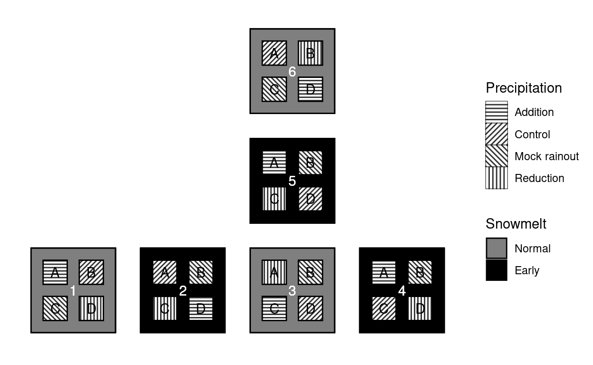
ggsave("images/map-2.eps", height=4, width=6.5, device=cairo_ps)Snowmelt
ggplot(hobo, aes(x=intensity, y=temp, color=hour(time))) + geom_point(alpha=0.5, size=0.5) + geom_density_2d(color="black")+
scale_x_log10(labels=function(x) format(x, scientific=F, big.mark=","), limits=c(10,1e6), breaks=10^(0:6)) +
scale_color_gradientn(colours = rainbow(5))+
geom_vline(xintercept = melt_threshold_sun) +
geom_hline(yintercept=melt_threshold_warm)+ geom_hline(yintercept=-melt_threshold_warm) +
labs(x="Light intensity (lux)", y="Temperature (C)", color="Hour") +
theme_dark() + theme(panel.grid.minor.x=element_blank())
ggplot(hobo %>% filter(hour(time)%in%5:17 &
(year!="2019"&yday(time) %in% 110:130 |
year=="2019"&yday(time) %in% 145:160)),
aes(x=intensity, y=temp, color=hour(time))) + geom_point(alpha=0.7) +geom_density_2d(color="black")+
scale_x_log10(labels=function(x) format(x, scientific=F, big.mark=","), limits=c(10,1e6), breaks=10^(0:6)) +
scale_color_gradientn(colours = rainbow(5))+
geom_vline(xintercept = melt_threshold_sun) +
geom_hline(yintercept=melt_threshold_warm)+ geom_hline(yintercept=-melt_threshold_warm) +
labs(title="Temperature and light thresholds for snow melt", subtitle = "During the day during melt weeks",
x="Light intensity (lux)", y="Temperature (C)", color="Hour") +
theme_dark() + theme(panel.grid.minor.x=element_blank())
ggplot(hobo %>% filter(month(time)%in%4:6), aes(x=time, y=temp, color=plot)) +
facet_wrap(vars(year), scales="free_x", ncol=1) +
geom_hline(yintercept=melt_threshold_warm) + geom_hline(yintercept=-melt_threshold_warm) +geom_line() +
geom_segment(data=meltdates, aes(x=warm_time, y=-10, xend=sun_time, yend=-15, color=plot), size=1) +
#geom_line(data=daily_CORBIL %>% filter(year!="2017", month(date)%in%4:6), aes(x=as.POSIXct(date), y=av_temp_2m_C), inherit.aes = F, color=brewer.pal(3, "Oranges")[3]) +
labs(x="Date",y="Temperature (C)", color="Plot")
ggplot(hobo %>% filter(month(time)%in%4:6), aes(x=time, y=intensity, color=plot)) +
facet_wrap(vars(year), scales="free_x", ncol=1) +
geom_line() + geom_hline(yintercept=melt_threshold_sun) +
geom_point(data=meltdates, aes(x=sun_time, y=-2e4, color=plot), size=1) +
labs(x="Date",y="Light intensity (lux)", color="Plot")
meltdates %>% select(c("year","plot", "snow", ends_with("date"))) %>% pivot_longer(ends_with("date")) %>% arrange(name) %>%
ggplot(aes(y=name, x=value, color=plot, group=plot, linetype=snow)) + facet_wrap(vars(year), ncol=1) +
geom_path(size=1) + #geom_text(aes(label=plot), hjust=1.5) +
scale_linetype_manual(values=c(4,1)) + scale_x_continuous(minor_breaks=110:160)+
labs(x="Day of year",y="Criteron", color="Plot", linetype="Snowmelt")
meltdates %>% ggplot(aes(x=melt_offset, fill=snow)) + geom_dotplot(method="histodot", binwidth=1, color="white") +
facet_wrap(vars(year), ncol=1)+ scale_fill_manual(values=snow_pal) +
scale_y_continuous(expand=expansion(0,0))+ scale_x_continuous(breaks=-10:4)+
theme(panel.grid.minor = element_blank()) +
labs(x="Offset from mean normal snow melt date (days)", y="Number of plots", fill="Snowmelt")
Snowmelt timing
groundcover %>% mutate(first_snow_day=first_snow_day-365) %>%
pivot_longer(ends_with("day"), names_to="threshold", values_to="day") %>% drop_na(day) %>% select(-starts_with("first")) %>%
mutate(threshold = fct_reorder(factor(threshold),day, na.rm=T, .desc=T)) %>%
ggplot(aes(x=year, y=day, color=threshold)) +
annotate("rect", xmin=2017.5, xmax=2020.5, ymin=-Inf, ymax=Inf, fill="lightblue")+
geom_line(aes(group=year), size=2)+ geom_smooth( method="lm", se=F) +geom_point() +
scale_x_continuous(minor_breaks = 1976:2020, position = "top") + scale_y_continuous(n.breaks=10)+
scale_color_grey(labels=function(x) str_to_sentence(str_replace_all(x, "_", " ")), start=0, end=0.85) +
labs(x="Year", y="Day of year", color="Threshold") + theme_minimal() + theme(text=element_text(color="black", size=14), axis.text = element_text(color="black"), panel.border = element_rect(fill=NA, colour = "black"))
cat("SD of first bare ground =", round(sd(groundcover$first_0_cm_day),1),"days over",range(groundcover$year))SD of first bare ground = 13.5 days over 1976 2020summary(lm(first_0_cm_day ~ year, data=groundcover))
Call:
lm(formula = first_0_cm_day ~ year, data = groundcover)
Residuals:
Min 1Q Median 3Q Max
-28.016 -9.065 0.378 8.403 29.750
Coefficients:
Estimate Std. Error t value Pr(>|t|)
(Intercept) 557.649 305.467 1.83 0.075 .
year -0.209 0.153 -1.37 0.178
---
Signif. codes: 0 '***' 0.001 '**' 0.01 '*' 0.05 '.' 0.1 ' ' 1
Residual standard error: 13.3 on 43 degrees of freedom
Multiple R-squared: 0.0417, Adjusted R-squared: 0.0195
F-statistic: 1.87 on 1 and 43 DF, p-value: 0.178treatments %>% ggplot(aes(x=sun_date, shape=year, color=water, y=precip_est_mm))+geom_point(size=2)+
geom_point(data=groundcover, aes(x=first_0_cm_day, color="Control", shape="1990-2017"), fill="white", size=2) +
scale_color_manual(values=water_pal) + scale_shape_manual(values=c(21, 19, 17, 15))+
scale_y_continuous(limits=c(0,NA), expand=expansion(mult = c(0,0.05)))+
labs(y="Summer precipiation (mm)", x="Snowmelt date", color="Precipitation", shape="Year") +
theme_minimal() + theme(text=element_text(color="black", size=14), axis.text = element_text(color="black"),
panel.border = element_rect(fill=NA, colour = "black"))
ggsave("images/groundcover-2.eps", height=4, width=6.5, device=cairo_ps)Soil moisture
Precipitation
With measurements:
- Nectar (orange)
- Floral morphology (purple)
- Phenology (grey)
- Leaf traits (dark green)
- Physiology traits (dark blue)
- Census (magenta)
ggplot(sm, aes(x=yday(date))) +
facet_wrap(vars(year), ncol=1) +
geom_jitter(aes(shape=snow, color=water, y = VWC), height=0, width=0.3) +
geom_smooth(aes(linetype=snow, color=water, y = VWC), se=F, span=0.5) +
geom_col(data=daily_precip_est, aes(x=yday(date), y=EPA_NOAA_filled), fill=brewer.pal(7, "Set3")[7]) +
#geom_line(data=daily_all %>% filter(year(date)%in%2018:2020), aes(x=yday(date), y=av_temp_2m_C),
# color=brewer.pal(3, "Oranges")[3])+
geom_vline(data=meltdates, aes(xintercept=sun_date, linetype=snow), color="black")+
geom_line(data = snowcloth, aes(y=mean_snow_depth_cm/10, group=year))+
geom_point(data = snowcloth, aes(y=mean_snow_depth_cm/10))+
geom_line(data=groundcover %>% pivot_longer(ends_with("day"), names_to="threshold", values_to="day") %>%
filter(threshold!="first_snow_day", year>2017) %>%
mutate(snow_depth_cm = as.integer(str_split_fixed(threshold,"_",n=4)[,2])),
aes(x=day, y=snow_depth_cm/10), color="grey40")+
geom_segment(data=waterdates %>% pivot_wider(names_from=precip_treatments, values_from=c(day,date)),
aes(x=day_started, xend=day_ended, y=20, yend=20)) +
geom_point(data=waterdates, aes(x=day,y=20)) +
geom_point(data=cen %>% pivot_longer(starts_with("date"), values_to="date") %>%
drop_na(date) %>% group_by(date) %>% tally() %>% mutate(year=factor(year(date))),
aes(y= 14*n/n), color="magenta", shape=0)+
geom_point(data=pt, aes(y= 15*conductance/conductance), color="darkblue", shape=0)+
geom_point(data=lt, aes(y= 16*trichome_density/trichome_density), color="darkgreen", shape=0)+
geom_point(data=ph, aes(y= 17*(open+buds)/(open+buds)), color="grey", shape=0)+
geom_point(data=mt, aes(y= 18*corolla_length/corolla_length), color="purple", shape=0)+
geom_point(data=mt, aes(y= 19*nectar_24_h_ul/nectar_24_h_ul), color="orange", shape=0)+
scale_x_continuous(limits=c(85, 230), breaks=scales::breaks_extended(10), expand=expansion(0,0)) + scale_y_continuous(limits=c(-3, 20)) +
labs(y="Soil VWC (%) / Daily precipitation (mm) / Snowpack (dm)",
x="Day of year", color="Precipitation", shape="Snow", linetype="Snow") +
scale_color_manual(values=water_pal) +
scale_linetype_manual(values=c(2,1)) + theme_minimal() +
theme(legend.key.size = unit(2, "lines"))
max_VWC <- max(sm.subplot$VWC, na.rm=T)
ggplot(sm.subplot, aes(x=yday(date))) +
facet_wrap(vars(year), ncol=1) +
geom_segment(data=waterdates %>% pivot_wider(names_from=precip_treatments, values_from=c(day,date)),
aes(x=day_started, xend=day_ended, y=max_VWC+0.5, yend=max_VWC+0.5)) +
geom_col(data=daily_precip_est, aes(x=yday(date), y=EPA_NOAA_filled), fill=brewer.pal(7, "Set3")[7]) +
geom_line(data=daily_precip_est, aes(y=VWC_Control_4*100), color=brewer.pal(7, "Set3")[6], size=1) +
geom_point(aes(shape=snow, color=water, y = VWC)) +
geom_line(data=sm.subplot %>% group_by(water, snow, year, date) %>% summarize(VWC=mean(VWC, na.rm=T)), aes(linetype=snow, color=water, y = VWC)) +
scale_color_manual(values=water_pal) + scale_linetype_manual(values=c(2,1)) +
geom_vline(data=meltdates, aes(xintercept=sun_date, linetype=snow), color="black", show.legend=F) +
coord_cartesian(xlim=c(110, 230), ylim=c(0, max_VWC+1), expand=F)+
labs(x="Day of year", y="Mean soil moisture in subplot (%VWC) / Precipitation (mm)", color="Precipitation", shape="Snowmelt", linetype="Snowmelt") + theme_minimal() + theme(legend.key.width = unit(2, "lines"), text=element_text(color="black", size=14), axis.text = element_text(color="black"), panel.border = element_rect(fill=NA, colour = "black"))
Treatments
left_join(filter(sm.subplot20d, mo20d!="221 - 240"), meltdates) %>%
mutate(mo = paste0("Days ",mo20d)) %>%
ggplot(aes(x=sun_date, y=VWC, shape=year,color=water)) +
facet_wrap(vars(mo), nrow=1)+
geom_point() + geom_smooth(se=F, method="lm") +
scale_color_manual(values=water_pal) +
labs(x="Snowmelt date", y="Mean soil moisture in subplot", color="Water", shape="Year")
sm.subplot %>% mutate(day=yday(date)) %>% group_by(year) %>% summarize(start=min(day), end=max(day)) %>% kable(caption = "Soil moisture collection dates")| year | start | end |
|---|---|---|
| 2018 | 164 | 227 |
| 2019 | 176 | 210 |
| 2020 | 169 | 224 |
# VWC split-plot analysis on subplot means (for the whole measurement period)
sm.mod <- lmer(VWC ~ year * snow * water + (1|snow:plot)+ (1|snow:plotid), data=sm.subplotyear)
anova(sm.mod) %>% kable()| Sum Sq | Mean Sq | NumDF | DenDF | F value | Pr(>F) | |
|---|---|---|---|---|---|---|
| year | 21.0823 | 10.5411 | 2 | 34.783 | 50.4914 | 0.0000 |
| snow | 1.1642 | 1.1642 | 1 | 5.046 | 5.5765 | 0.0642 |
| water | 51.0709 | 25.5354 | 2 | 15.012 | 122.3132 | 0.0000 |
| year:snow | 2.3509 | 1.1754 | 2 | 34.782 | 5.6303 | 0.0076 |
| year:water | 4.4296 | 1.1074 | 4 | 36.320 | 5.3044 | 0.0018 |
| snow:water | 0.5762 | 0.2881 | 2 | 15.013 | 1.3800 | 0.2817 |
| year:snow:water | 0.3480 | 0.0870 | 4 | 36.320 | 0.4168 | 0.7954 |
(sm.emm.snow <- summary(emmeans(sm.mod, ~ snow))) %>% kable()| snow | emmean | SE | df | lower.CL | upper.CL |
|---|---|---|---|---|---|
| Early | 4.503 | 0.1984 | 4.938 | 3.991 | 5.015 |
| Normal | 5.128 | 0.1763 | 5.189 | 4.679 | 5.576 |
sm.emm.snow$emmean[1] - sm.emm.snow$emmean[2][1] -0.6244(sm.emm.water <- summary(emmeans(sm.mod, ~ water))) %>% kable()| water | emmean | SE | df | lower.CL | upper.CL |
|---|---|---|---|---|---|
| Addition | 6.184 | 0.1638 | 10.618 | 5.821 | 6.546 |
| Control | 4.389 | 0.1430 | 6.717 | 4.048 | 4.730 |
| Reduction | 3.873 | 0.1638 | 10.618 | 3.511 | 4.236 |
sm.emm.water$emmean[1] - sm.emm.water$emmean[2][1] 1.795sm.emm.water$emmean[3] - sm.emm.water$emmean[2][1] -0.5155sm.mod.split.loc <- lmer(VWC ~ year * snow * water + location_y * water + (1|snow:plot) + (1|snow:plotid) + (1|date), data=mutate(sm, date=factor(date)))
anova(sm.mod.split.loc) %>% kable()| Sum Sq | Mean Sq | NumDF | DenDF | F value | Pr(>F) | |
|---|---|---|---|---|---|---|
| year | 4.390 | 2.195 | 2 | 22.045 | 0.5878 | 0.5640 |
| snow | 21.925 | 21.925 | 1 | 5.045 | 5.8714 | 0.0594 |
| water | 865.956 | 432.978 | 2 | 17.691 | 115.9494 | 0.0000 |
| location_y | 34.612 | 17.306 | 2 | 2909.632 | 4.6344 | 0.0098 |
| year:snow | 78.812 | 39.406 | 2 | 2842.698 | 10.5527 | 0.0000 |
| year:water | 147.725 | 36.931 | 4 | 2593.106 | 9.8900 | 0.0000 |
| snow:water | 8.467 | 4.234 | 2 | 16.247 | 1.1337 | 0.3460 |
| water:location_y | 5.611 | 1.403 | 4 | 2909.628 | 0.3756 | 0.8262 |
| year:snow:water | 13.905 | 3.476 | 4 | 2593.106 | 0.9310 | 0.4448 |
emmeans(sm.mod.split.loc, ~ location_y * water, lmer.df = "satterthwaite") %>% plot
sm.mod.split <- lmer(VWC ~ year * snow * water + (1|snow:plot) + (1|snow:plotid) + (1|date), data=mutate(sm, date=factor(date)))
sjPlot::plot_model(sm.mod.split, type="re")[[1]]
[[2]]
[[3]]
ggplot(sm.subplotyear, aes(x=water, color=snow, y=VWC)) +
facet_wrap(vars(year)) +
geom_point(position=position_dodge(0.9)) +
#geom_pointrange(data=emmeans(sm.mod, ~ snow * water * year, lmer.df = "satterthwaite") %>%
# summary %>% rename(VWC=emmean), shape=1, size=2, fatten=1.5,aes(ymin=VWC-SE, ymax=VWC+SE),
# position=position_dodge2(0.9)) +
geom_pointrange(data=emmeans(sm.mod.split, ~ snow * water * year, lmer.df = "satterthwaite") %>%
summary %>% rename(VWC=emmean), shape=3, aes(ymin=VWC-SE, ymax=VWC+SE),
position=position_dodge2(0.9)) +
scale_color_manual(values=snow_pal) + scale_x_discrete(guide=guide_axis(angle=90))
sm.mod.abs <- lmer(VWC ~ sun_date * water + (1|plot) + (1|plotid) + (1|date), data=mutate(sm, date=factor(date)))
anova(sm.mod.abs) %>% kable()| Sum Sq | Mean Sq | NumDF | DenDF | F value | Pr(>F) | |
|---|---|---|---|---|---|---|
| sun_date | 61.75 | 61.75 | 1 | 337.7 | 16.38 | 1e-04 |
| water | 313.63 | 156.82 | 2 | 2004.2 | 41.59 | 0e+00 |
| sun_date:water | 145.60 | 72.80 | 2 | 2940.7 | 19.31 | 0e+00 |
sjPlot::plot_model(sm.mod.abs, type="int")
Plant vs. subplot level
ggplot(pt, aes(x=VWC.sm, y=VWC.plant, shape=year, group=year, color=as.integer(date_diff))) + geom_smooth(se=F) +geom_point() + geom_abline(intercept=0, slope=1) +
labs(x="Subplot VWC at closest date", y="VWC measured at plant for physiology", color="Date difference", shape="Year") +
scale_color_viridis_c() + theme_minimal() + coord_fixed()
ggplot(pt, aes(x=VWC.sm.year, y=VWC.sm, shape=year, group=year, color=year)) + geom_smooth(se=F) +geom_point() + geom_abline(intercept=0, slope=1) +
labs(x="Mean subplot VWC across year", y="Subplot VWC at closest date", color="Year", shape="Year") +
scale_color_manual(values=year_pal) + theme_minimal() + coord_fixed()
ggplot(pt, aes(x=VWC.sm.year, y=VWC.plant, shape=year, group=year, color=year)) + geom_smooth(se=F) +geom_point() + geom_abline(intercept=0, slope=1) +
labs(x="Mean subplot VWC across year", y="VWC measured at plant for physiology", color="Year", shape="Year") +
scale_color_manual(values=year_pal) + theme_minimal() + coord_fixed()
Timing of measurements
timings_labels <- c(snowcloth="Snow cloths applied to early plots",
meltdates="Mean early and normal snowmelt timing",
waterdates="Summer precipitation treatments applied",
sm="Soil moisture recorded", ph="Inflorescence height recorded",
mt="Floral morphology recorded", nt="Nectar traits recorded",
pt= "Physiology traits recorded", lt="Vegetative traits recorded",
sds="Flower collection period", cen="Rosette size and survival recorded")
plot_timings <- function(data) {
data %>% mutate(variable=fct_reorder(variable, begin, na.rm=T, .desc=T),
drawline = ifelse(variable %in% c("lt","meltdates"), NA, TRUE)) %>%
ggplot(aes(y=variable, color=year))+
geom_linerange(aes(xmin=begin, xmax=end, linetype=drawline),
position = position_dodge2(width=0.7, reverse = T), size=1.2, show.legend=FALSE) +
geom_text(data=data %>% drop_na(plots) %>% filter(year=="2019"),
aes(x = end+7, label=paste(ifelse(nchar(plots)>1, "Plots","Plot"), str_replace(plots,","," & "))),
position = position_dodge2(width=0.8, reverse = T), size=4, hjust=0, show.legend=FALSE)+
geom_point(aes(x=begin), position = position_dodge2(width=0.7, reverse = T), shape=15, size=2)+
geom_point(aes(x=end), position = position_dodge2(width=0.7, reverse = T), shape=15, size=2) +
scale_color_manual("Year", values=year_pal, guide=guide_legend(override.aes = list(size=5))) +
scale_y_discrete("", labels=timings_labels)+
scale_x_continuous("Day of year", breaks=seq(80,240, by=20)) +
theme_minimal() + theme(legend.position = "top", text=element_text(size=14, color="black"), axis.text = element_text(color="black"),
panel.border = element_rect(fill=NA, colour = "black"))
}
plot_timings(filter(timings, !variable %in% c("sds","lt","pt","cen")))
plot_timings(filter(timings, !variable %in% c("sds","mt","nt","ph")))
timings.long <- timings %>% select(-plots) %>%
pivot_longer(c(begin,end), names_to="time", values_to="day")
timings.long %>%
left_join(timings.long %>% filter(variable=="meltdates", time=="end") %>% select(year, sun_date=day)) %>%
mutate(days_since_sun_date = day - sun_date) %>%
pivot_wider(id_cols = c(variable, year), names_from=time, names_prefix = "snowmelt_",
values_from=days_since_sun_date, values_fn = list) %>% kable| variable | year | snowmelt_begin | snowmelt_end |
|---|---|---|---|
| snowcloth | 2018 | -32 | -5 |
| snowcloth | 2019 | -40, -20 | -7, 0 |
| snowcloth | 2020 | -27 | -5 |
| meltdates | 2018 | -5 | 0 |
| meltdates | 2019 | -7 | 0 |
| meltdates | 2020 | -6 | 0 |
| waterdates | 2018 | 38 | 103 |
| waterdates | 2019 | 17 | 69 |
| waterdates | 2020 | 38 | 101 |
| sm | 2018 | 45 | 108 |
| sm | 2019 | 18 | 52 |
| sm | 2020 | 43 | 98 |
| mt | 2018 | 65 | 93 |
| mt | 2019 | 38 | 61 |
| mt | 2020 | 52 | 84 |
| nt | 2018 | 61 | 92 |
| nt | 2019 | 42 | 61 |
| nt | 2020 | 71 | 92 |
| pt | 2018 | 65 | 89 |
| pt | 2019 | 62 | 69 |
| pt | 2020 | 78 | 87 |
| lt | 2018 | 46 | 110 |
| lt | 2019 | 21 | 62 |
| lt | 2020 | 45 | 84 |
| ph | 2018 | 47 | 78 |
| ph | 2019 | 33 | 60 |
| ph | 2020 | 45 | 94 |
| sds | 2020 | 80 | 120 |
| cen | 2018 | 37 | 45 |
| cen | 2019 | 11 | 46 |
| cen | 2020 | 38 | 49 |
The average last floral morphology measurement (day 214) was used to total precipitation for years before the experiment (1990-2017). The actual last floral morphology measurement (days 212, 219, 210) were used for 2018-2020.
cumul_precip <- meltdates %>% group_by(year) %>% summarize(first_sun_date = min(sun_date)) %>%
mutate(sum_to = map(first_sun_date, ~ seq(from=.x, to=270))) %>% unnest(sum_to) %>%
mutate(cumul_precip = pmap_dbl(list(year, first_sun_date, sum_to), precip_total),
days_after_first_melt = sum_to - first_sun_date)
cumul_precip_timings <- cumul_precip %>%
left_join(timings %>% select(year, sum_to=end, variable) %>%
filter(variable %in% c("lt","mt","nt","pt","waterdates","sm")))
ggplot(cumul_precip_timings, aes(x=sum_to, y=cumul_precip, color=factor(year))) +
geom_vline(xintercept=214) + annotate("text", x=214+1, y=10, hjust=0, label="Avg M", )+
geom_line()+ geom_point(aes(shape=variable), size=5, position=position_nudge(y=4)) +
coord_cartesian(xlim=c(200,230), ylim=c(0,110))+
labs(x="Day of year", y="Cumulative precipitation since earliest snowmelt", shape="Last day of", color="Year")+
scale_shape_manual(values = c("V","M","N","P","S","T"),
labels=set_names(str_remove(timings_labels," recorded| applied"), names(timings_labels)),
na.translate = F, guide=guide_legend(nrow = 3)) +
scale_color_manual(values=year_pal) + theme_minimal() + theme(legend.position="top")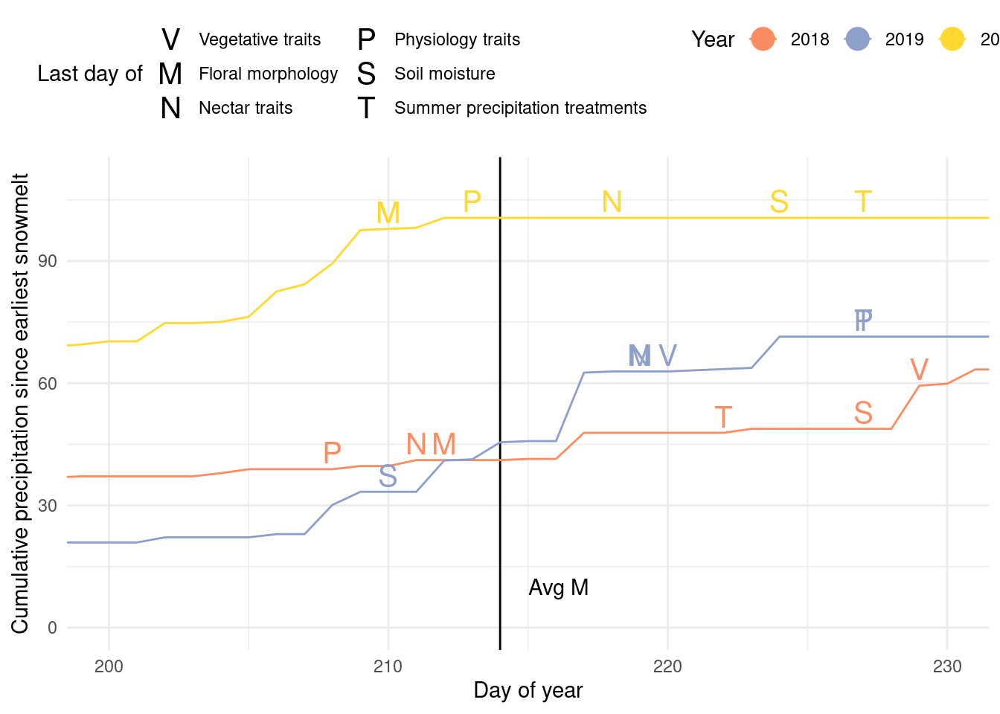
Sample sizes
count_measurements <- function(df, tr) summarize(df, across(all_of(tr), ~ sum(!is.na(.x))))
bind_rows(n_measurements = count_measurements(bind_rows(mnps, lt, pt), alltraits),
plant_year_round = count_measurements(bind_rows(mnps.plantyr, lt.plantyr, pt.plantyr), alltraits),
plant_year = count_measurements(bind_rows(mnps, lt, pt) %>% group_by(year, plantid) %>%
summarize(across(all_of(alltraits), mean, na.rm=T)), alltraits) %>%
ungroup %>% summarize(across(all_of(alltraits), sum)),
plant = count_measurements(bind_rows(mnps, lt, pt) %>% group_by(plantid) %>%
summarize(across(all_of(alltraits), mean, na.rm=T)), alltraits),
.id="sample_size") %>% column_to_rownames("sample_size") %>%
t %>% as.data.frame %>% rownames_to_column("trait") %>% as_tibble %>%
mutate(n_per_plant_year_round = n_measurements / plant_year_round,
n_per_plant_year = n_measurements / plant_year,
n_per_plant = n_measurements/ plant) %>% kable(digits=2)| trait | n_measurements | plant_year_round | plant_year | plant | n_per_plant_year_round | n_per_plant_year | n_per_plant |
|---|---|---|---|---|---|---|---|
| corolla_length | 1194 | 494 | 494 | 484 | 2.42 | 2.42 | 2.47 |
| style_length | 1185 | 491 | 491 | 481 | 2.41 | 2.41 | 2.46 |
| corolla_width | 963 | 455 | 455 | 448 | 2.12 | 2.12 | 2.15 |
| sepal_width | 749 | 340 | 340 | 334 | 2.20 | 2.20 | 2.24 |
| nectar_24_h_ul | 744 | 432 | 432 | 419 | 1.72 | 1.72 | 1.78 |
| nectar_conc | 656 | 401 | 401 | 390 | 1.64 | 1.64 | 1.68 |
| nectar_sugar_24_h_mg | 656 | 401 | 401 | 390 | 1.64 | 1.64 | 1.68 |
| height_cm | 1865 | 674 | 674 | 653 | 2.77 | 2.77 | 2.86 |
| open | 10143 | 818 | 746 | 723 | 12.40 | 13.60 | 14.03 |
| seeds_per_fruit | 528 | 505 | 505 | 491 | 1.05 | 1.05 | 1.08 |
| seeds_est | 528 | 505 | 505 | 491 | 1.05 | 1.05 | 1.08 |
| fruits_nonaborted | 641 | 610 | 610 | 591 | 1.05 | 1.05 | 1.08 |
| flowers_est | 641 | 610 | 610 | 591 | 1.05 | 1.05 | 1.08 |
| prop_infested | 611 | 581 | 581 | 563 | 1.05 | 1.05 | 1.09 |
| prop_aborted | 636 | 606 | 606 | 587 | 1.05 | 1.05 | 1.08 |
| seeds_per_flower | 528 | 505 | 505 | 491 | 1.05 | 1.05 | 1.08 |
| sla | 505 | 496 | 326 | 264 | 1.02 | 1.55 | 1.91 |
| trichome_density | 592 | 583 | 326 | 264 | 1.02 | 1.82 | 2.24 |
| water_content | 505 | 496 | 326 | 264 | 1.02 | 1.55 | 1.91 |
| photosynthesis | 327 | 327 | 319 | 275 | 1.00 | 1.03 | 1.19 |
| conductance | 323 | 323 | 315 | 271 | 1.00 | 1.03 | 1.19 |
| WUE | 327 | 327 | 319 | 275 | 1.00 | 1.03 | 1.19 |
#How many plants flowered twice?
with(cen.status, table(flowering_status_18 + flowering_status_19 + flowering_status_20))
0 1 2
499 548 22 ph %>% drop_na(height_cm) %>% group_by(year, plantid) %>% tally() %>%
ggplot(aes(x=n, fill=year)) + geom_histogram() + labs(title = "Phenology entries per plant", x="Entries",y="Count")+
facet_wrap(vars(year), ncol=1) + scale_fill_manual(values=year_pal)
Census
Census status
The annual census at the beginning of the summer contains information on mortality, flowering status, and plant size (longest leaf and number of leaves for each rosette).
Visualize a plant’s status in each census
ggplot(cen.status.long, aes(y=plantid, x=census, fill=status)) + geom_tile() +
scale_fill_manual(values=brewer.pal(8, name="Set1")[c(1,3,5,2,7,6)])+
theme(axis.text.y=element_blank(), axis.ticks = element_blank()) +
labs(fill="Status", x="Census year",y="Plant ID")
ggplot(megatally.status.long, aes(y=plantid, x=dataset, fill=status)) + geom_tile() +
scale_fill_manual(values=c(brewer.pal(5, name="Set1")[c(1,3,5,2)],brewer.pal(8, "Set2")[7:8]))+
scale_x_discrete(position="top") +
theme(axis.text.y=element_blank(), axis.ticks = element_blank(), axis.text.x = element_text(angle=90, size=14)) +
labs(fill="Status", x="Dataset and year",y="Plant ID")
Status vs. treatment
cen.status.long %>% left_join(treatments) %>% drop_na(water, snow) %>% filter(status %in% status_ok, census !="2018r2") %>%
ggplot(aes(x=water, fill=status)) + facet_grid(snow ~ census, labeller=labeller(.cols=label_both)) + geom_bar(position="fill") +
scale_fill_manual(values=status_pal) + labs(x="Precipitation", y="Proportion", fill="Status")
Status transitions vs. treatment
What did plants of a given status in one year look like in the next?
with(cen.status, table(`2018`=paste(status_18), `2019`=paste(status_19))) 2019
2018 dead_nf flowering no_record tagnf vegetative
dead_nf 10 0 0 2 0
flowering 151 4 0 0 22
no_record 0 3 60 0 1
vegetative 193 193 1 23 545cen.status %>% mutate(year = "2018") %>% left_join(treatments) %>% filter(status_18 %in% status_ok[-3], status_19 %in% status_ok) %>%
ggplot(aes(x=water, fill=status_19)) + facet_wrap(status_18 ~ snow, labeller=labeller(.cols=label_both)) +
labs(y="2019 Status", fill="2019 Status", x="Precipitation") +
geom_bar(position="fill") + scale_fill_manual(values=status_pal) + theme_minimal()
with(cen.status, table(`2019`=paste(status_19), `2020`=paste(status_20))) 2020
2019 dead_nf flowering no_record tagnf vegetative
dead_nf 352 0 0 2 0
flowering 166 14 0 0 20
no_record 53 1 0 4 3
tagnf 8 0 8 9 0
vegetative 122 207 14 34 191cen.status %>% mutate(year = "2019") %>% left_join(treatments) %>% filter(status_19 %in% status_ok[-3], status_20 %in% status_ok) %>%
ggplot(aes(x=water, fill=status_20)) + facet_wrap(status_19 ~ snow, labeller=labeller(.cols=label_both)) +
labs(y="2020 Status", fill="2020 Status", x="Precipitation") +
geom_bar(position="fill") + scale_fill_manual(values=status_pal) + theme_minimal()
#Model effect of treatments on survival and flowering of vegetative plants - both years combined
cen.status.fitness <- cen.status.long %>% filter(status=="vegetative", census %in% c("2018","2019")) %>%
full_join(cen.RGR.long %>% drop_na(RGR) %>% filter(census!="18r2") %>% select(-census)) %>% left_join(treatments) %>% left_join(sm.subplotyear)
options(contrasts = c("contr.sum", "contr.poly"))
(survived.mod <- glmmTMB(survived ~ year * water * snow + (1|snow:plot) + (1|snow:plotid), data=cen.status.fitness, family=binomial))Formula:
survived ~ year * water * snow + (1 | snow:plot) + (1 | snow:plotid)
Data: cen.status.fitness
AIC BIC logLik df.resid
1505.4 1579.3 -738.7 1437
Random-effects (co)variances:
Conditional model:
Groups Name Std.Dev.
snow:plot (Intercept) 6.86e-05
snow:plotid (Intercept) 4.85e-01
Number of obs: 1451 / Conditional model: snow:plot, 7; snow:plotid, 28
Fixed Effects:
Conditional model:
(Intercept) year1 water1 water2
1.3562 0.1771 0.1471 -0.1227
snow1 year1:water1 year1:water2 year1:snow1
-0.0803 -0.1235 -0.0738 0.0830
water1:snow1 water2:snow1 year1:water1:snow1 year1:water2:snow1
-0.1466 -0.0583 -0.3768 -0.0370 car::Anova(survived.mod, type=3) %>% kable()| Chisq | Df | Pr(>Chisq) | |
|---|---|---|---|
| (Intercept) | 109.3922 | 1 | 0.0000 |
| year | 4.6777 | 1 | 0.0306 |
| water | 0.8387 | 2 | 0.6575 |
| snow | 0.3903 | 1 | 0.5322 |
| year:water | 2.3772 | 2 | 0.3046 |
| year:snow | 1.0321 | 1 | 0.3097 |
| water:snow | 1.1406 | 2 | 0.5654 |
| year:water:snow | 12.1763 | 2 | 0.0023 |
emmeans(survived.mod, ~ year * water * snow) %>% as_tibble %>%
mutate(prob=plogis(emmean), uSE = plogis(emmean+SE), lSE = plogis(emmean-SE)) %>%
ggplot(aes(x=water, color=snow, y=prob))+ facet_wrap(vars(year))+
geom_pointrange(aes(ymin=lSE, ymax=uSE), position=position_dodge2(0.9)) +
labs(x="Precipitation", y="Survival to next year", color="Snowmelt")+
scale_y_continuous(limits=c(0,1)) + scale_color_manual(values=snow_pal) + theme_minimal()
(flowered.mod <- glmmTMB(flowered ~ year * water * snow + (1|snow:plot) + (1|snow:plotid), data=cen.status.fitness, family=binomial))Formula:
flowered ~ year * water * snow + (1 | snow:plot) + (1 | snow:plotid)
Data: cen.status.fitness
AIC BIC logLik df.resid
1621.1 1695.0 -796.6 1437
Random-effects (co)variances:
Conditional model:
Groups Name Std.Dev.
snow:plot (Intercept) 0.348
snow:plotid (Intercept) 0.274
Number of obs: 1451 / Conditional model: snow:plot, 7; snow:plotid, 28
Fixed Effects:
Conditional model:
(Intercept) year1 water1 water2
-0.8196 -0.4777 0.2612 -0.3166
snow1 year1:water1 year1:water2 year1:snow1
0.0134 -0.1221 0.0441 0.0979
water1:snow1 water2:snow1 year1:water1:snow1 year1:water2:snow1
-0.0858 0.1040 -0.2203 0.0942 car::Anova(flowered.mod, type=3) %>% kable()| Chisq | Df | Pr(>Chisq) | |
|---|---|---|---|
| (Intercept) | 25.5824 | 1 | 0.0000 |
| year | 41.1963 | 1 | 0.0000 |
| water | 8.3136 | 2 | 0.0157 |
| snow | 0.0068 | 1 | 0.9341 |
| year:water | 1.3607 | 2 | 0.5064 |
| year:snow | 1.7514 | 1 | 0.1857 |
| water:snow | 0.8825 | 2 | 0.6432 |
| year:water:snow | 4.5510 | 2 | 0.1027 |
emmeans(flowered.mod, ~ year * water * snow) %>% as_tibble %>%
mutate(prob=plogis(emmean), uSE = plogis(emmean+SE), lSE = plogis(emmean-SE)) %>%
ggplot(aes(x=water, color=snow, y=prob))+ facet_wrap(vars(year))+
geom_pointrange(aes(ymin=lSE, ymax=uSE), position=position_dodge2(0.9)) +
labs(x="Precipitation", y="Flowering the next year", color="Snowmelt")+
scale_y_continuous(limits=c(0,1)) + scale_color_manual(values=snow_pal) + theme_minimal()
(RGR.mod <- glmmTMB(RGR ~ year * water * snow + (1|snow:plot) + (1|snow:plotid), data=cen.status.fitness))Formula:
RGR ~ year * water * snow + (1 | snow:plot) + (1 | snow:plotid)
Data: cen.status.fitness
AIC BIC logLik df.resid
1746.8 1810.5 -858.4 501
Random-effects (co)variances:
Conditional model:
Groups Name Std.Dev.
snow:plot (Intercept) 0.000494
snow:plotid (Intercept) 0.482309
Residual 1.234545
Number of obs: 516 / Conditional model: snow:plot, 7; snow:plotid, 28
Dispersion estimate for gaussian family (sigma^2): 1.52
Fixed Effects:
Conditional model:
(Intercept) year1 water1 water2
0.55993 0.78182 0.40334 -0.29814
snow1 year1:water1 year1:water2 year1:snow1
-0.31170 0.75936 -0.31169 0.00643
water1:snow1 water2:snow1 year1:water1:snow1 year1:water2:snow1
-0.19131 0.05559 0.36196 -0.22491 car::Anova(RGR.mod, type=3) %>% kable()| Chisq | Df | Pr(>Chisq) | |
|---|---|---|---|
| (Intercept) | 19.8341 | 1 | 0.0000 |
| year | 99.5666 | 1 | 0.0000 |
| water | 6.0114 | 2 | 0.0495 |
| snow | 6.1618 | 1 | 0.0131 |
| year:water | 45.2862 | 2 | 0.0000 |
| year:snow | 0.0067 | 1 | 0.9346 |
| water:snow | 1.0814 | 2 | 0.5823 |
| year:water:snow | 12.0279 | 2 | 0.0024 |
emmeans(RGR.mod, ~ year * water * snow) %>% as_tibble %>%
ggplot(aes(x=water, color=snow, y=emmean))+ facet_wrap(vars(year))+ geom_hline(yintercept=0)+
geom_pointrange(aes(ymin=emmean-SE, ymax=emmean+SE), position=position_dodge2(0.9)) +
labs(x="Precipitation", y="RGR (year\U207B\U00B9)", color="Snowmelt") +
scale_color_manual(values=snow_pal) + theme_minimal()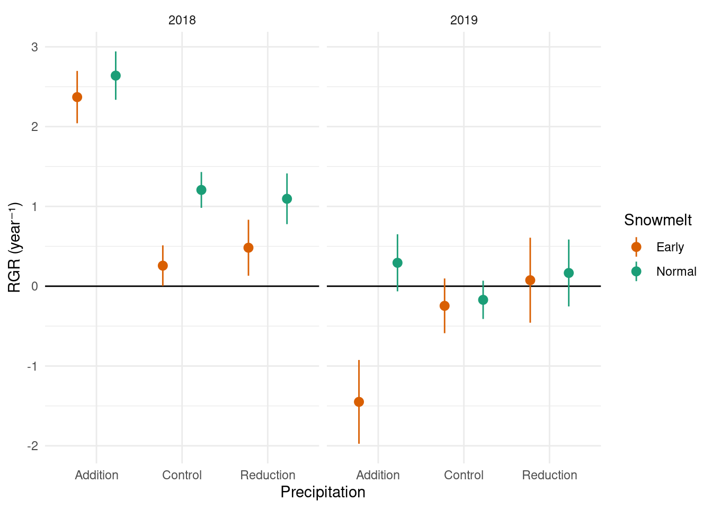
options(contrasts = c("contr.sum", "contr.poly"))
(survived.mod.sm <- glmmTMB(survived ~ year * VWC + (1|plot) + (1|plotid), data=cen.status.fitness, family=binomial))Formula: survived ~ year * VWC + (1 | plot) + (1 | plotid)
Data: cen.status.fitness
AIC BIC logLik df.resid
1503.8 1535.5 -745.9 1445
Random-effects (co)variances:
Conditional model:
Groups Name Std.Dev.
plot (Intercept) 0.000103
plotid (Intercept) 0.447169
Number of obs: 1451 / Conditional model: plot, 6; plotid, 24
Fixed Effects:
Conditional model:
(Intercept) year1 VWC year1:VWC
0.8908 0.3875 0.0926 -0.0637 car::Anova(survived.mod.sm, type=3) %>% kable()| Chisq | Df | Pr(>Chisq) | |
|---|---|---|---|
| (Intercept) | 4.5908 | 1 | 0.0321 |
| year | 1.3702 | 1 | 0.2418 |
| VWC | 1.0614 | 1 | 0.3029 |
| year:VWC | 0.7675 | 1 | 0.3810 |
ggplot(cen.status.fitness, aes(x=VWC, y=survived, color=year))+
geom_point() + geom_smooth(method="glm", method.args = list(family=binomial))+
labs(x="Soil moisture (VWC)", y="Survival to next year", color="Year")+
scale_y_continuous(limits=c(0,1)) + scale_color_manual(values=year_pal) + theme_minimal()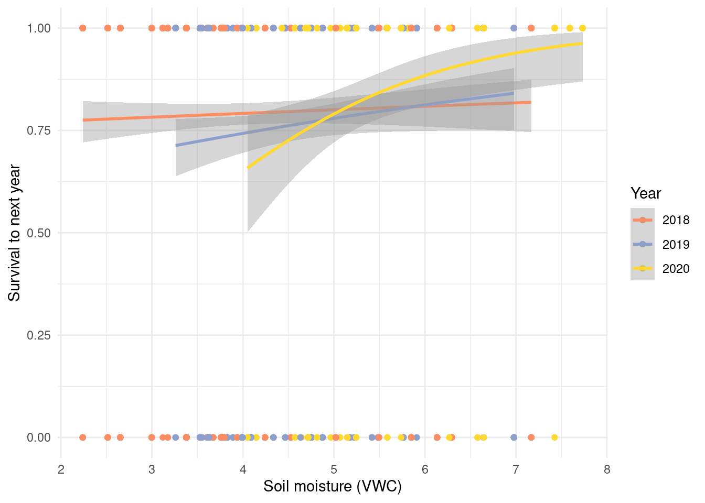
(flowered.mod.sm <- glmmTMB(flowered ~ year * VWC + (1|plot) + (1|plotid), data=cen.status.fitness, family=binomial))Formula: flowered ~ year * VWC + (1 | plot) + (1 | plotid)
Data: cen.status.fitness
AIC BIC logLik df.resid
1616.2 1647.9 -802.1 1445
Random-effects (co)variances:
Conditional model:
Groups Name Std.Dev.
plot (Intercept) 0.388
plotid (Intercept) 0.338
Number of obs: 1451 / Conditional model: plot, 6; plotid, 24
Fixed Effects:
Conditional model:
(Intercept) year1 VWC year1:VWC
-1.5943 -0.0576 0.1550 -0.0931 car::Anova(flowered.mod.sm, type=3) %>% kable()| Chisq | Df | Pr(>Chisq) | |
|---|---|---|---|
| (Intercept) | 14.4122 | 1 | 0.0001 |
| year | 0.0373 | 1 | 0.8468 |
| VWC | 3.3938 | 1 | 0.0654 |
| year:VWC | 2.1222 | 1 | 0.1452 |
ggplot(cen.status.fitness, aes(x=VWC, y=flowered, color=year))+
geom_point() + geom_smooth(method="glm", method.args = list(family=binomial))+
labs(x="Soil moisture (VWC)", y="Flowering the next year", color="Year")+
scale_y_continuous(limits=c(0,1)) + scale_color_manual(values=year_pal) + theme_minimal()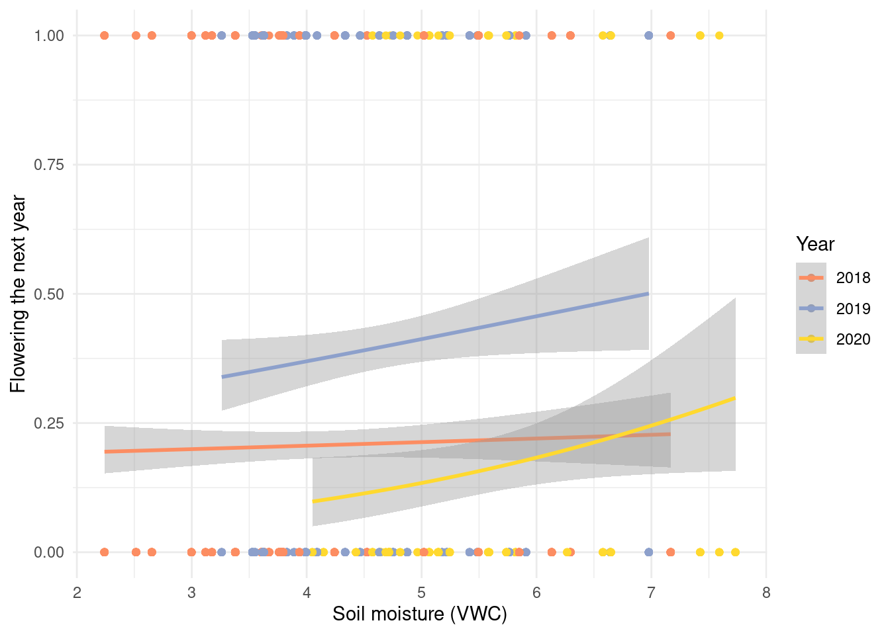
Survival and flowering vs. vegetative plant size
ggplot(filter(cen, status_19 %in% status_ok, status_18 == "vegetative"), aes(x=r1_longest_18, fill=status_19)) +
facet_wrap(vars(status_19), ncol=1) + labs(x="2018 Rosette 1 Longest Leaf (mm)", fill="2019 status") +
geom_density() + scale_fill_manual(values=status_pal) + coord_cartesian(xlim=c(0, 85))
ggplot(filter(cen, status_20 %in% status_ok, status_19 == "vegetative"), aes(x=r1_longest_19, fill=status_20)) +
facet_wrap(vars(status_20), ncol=1) + labs(x="2019 Rosette 1 Longest Leaf (mm)", fill="2020 status") +
geom_density() + scale_fill_manual(values=status_pal) + coord_cartesian(xlim=c(0, 85))
ggplot(filter(cen, status_19 %in% status_ok, status_18 == "vegetative"), aes(x=r1_leaves_18, fill=status_19)) +
facet_wrap(vars(status_19), ncol=1) + labs(x="2018 Rosette 1 # Leaves", fill="2019 status") +
geom_density() + scale_fill_manual(values=status_pal) + coord_cartesian(xlim=c(0, 100))
ggplot(filter(cen, status_20 %in% status_ok, status_19 == "vegetative"), aes(x=r1_leaves_19, fill=status_20)) +
facet_wrap(vars(status_20), ncol=1) + labs(x="2019 Rosette 1 # Leaves", fill="2020 status") +
geom_density() + scale_fill_manual(values=status_pal) + coord_cartesian(xlim=c(0, 100))
Plant growth vs. treatments
Only includes plants that remained vegetative and did not die or flower.
cen %>% drop_na(water_18, snow_18) %>% filter(status_18=="vegetative", status_19=="vegetative") %>%
ggplot(aes(x=r1_longest_18, y=r1_longest_19, color=water_18, shape=snow_18)) + geom_point() + geom_abline(intercept=0, slope=1) +
scale_color_manual(values=water_pal) + theme_minimal()+coord_fixed(xlim=c(0,80), ylim=c(0,80)) +
labs(x="2018 Rosette 1 Longest Leaf (mm)", y="2019 Rosette 1 Longest Leaf (mm)", color="Precipitation", shape="Snowmelt")
cen %>% drop_na(water_19, snow_19) %>% filter(status_19=="vegetative", status_20=="vegetative") %>%
ggplot(aes(x=r1_longest_19, y=r1_longest_20, color=water_19, shape=snow_19)) + geom_point() + geom_abline(intercept=0, slope=1) +
scale_color_manual(values=water_pal) + theme_minimal()+ coord_fixed(xlim=c(0,80), ylim=c(0,80)) +
labs(x="2019 Rosette 1 Longest Leaf (mm)", y="2020 Rosette 1 Longest Leaf (mm)", color="Precipitation", shape="Snowmelt")
cen %>% drop_na(water_18, snow_18) %>% filter(status_18=="vegetative", status_19=="vegetative") %>%
ggplot(aes(x=r1_leaves_18, y=r1_leaves_19, color=water_18, shape=snow_18)) + geom_point() + geom_abline(intercept=0, slope=1) +
scale_color_manual(values=water_pal) + theme_minimal()+coord_fixed(xlim=c(0,100), ylim=c(0,100)) +
labs(x="2018 Rosette 1 # Leaves", y="2019 Rosette 1 # Leaves", color="Precipitation", shape="Snowmelt")
cen %>% drop_na(water_19, snow_19) %>% filter(status_19=="vegetative", status_20=="vegetative") %>%
ggplot(aes(x=r1_leaves_19, y=r1_leaves_20, color=water_19, shape=snow_19)) + geom_point() + geom_abline(intercept=0, slope=1) +
scale_color_manual(values=water_pal) + theme_minimal()+ coord_fixed(xlim=c(0,100), ylim=c(0,100)) +
labs(x="2019 Rosette 1 # Leaves", y="2020 Rosette 1 # Leaves", color="Precipitation", shape="Snowmelt")
Leaf number, length vs. treatments
ggplot(drop_na(cen18, water, snow), aes(x=water, color=snow, y=r1_longest)) + geom_boxplot() + scale_color_manual(values=snow_pal) + labs(x="Precipitation", y="2018 Rosette 1 Longest Leaf (mm)", color="Snowmelt")
ggplot(drop_na(cen18, water, snow), aes(x=water, color=snow, y=r1_leaves)) + geom_boxplot() + scale_color_manual(values=snow_pal)+ labs(x="Precipitation", y="2018 Rosette 1 # Leaves", color="Snowmelt")
ggplot(drop_na(cen19, water, snow), aes(x=water, color=snow, y=r1_longest)) + geom_boxplot() + scale_color_manual(values=snow_pal) + labs(x="Precipitation", y="2019 Rosette 1 Longest Leaf (mm)", color="Snowmelt")
ggplot(drop_na(cen19, water, snow), aes(x=water, color=snow, y=r1_leaves)) + geom_boxplot() + scale_color_manual(values=snow_pal)+ labs(x="Precipitation", y="2019 Rosette 1 # Leaves", color="Snowmelt")
ggplot(drop_na(cen20, water, snow), aes(x=water, color=snow, y=r1_longest)) + geom_boxplot() + scale_color_manual(values=snow_pal) + labs(x="Precipitation", y="2020 Rosette 1 Longest Leaf (mm)", color="Snowmelt")
ggplot(drop_na(cen20, water, snow), aes(x=water, color=snow, y=r1_leaves)) + geom_boxplot() + scale_color_manual(values=snow_pal) + labs(x="Precipitation", y="2020 Rosette 1 # Leaves", color="Snowmelt")
Combined leaf number and longest length
Multiply longest leaf (mm) by number of leaves and sum across rosettes to get plant size metric (Campbell and Wendlandt 2013).
Get RGR as 1.41 * ln(size2/size2) / (t2 - t1), where 1.41 is the experimentally determined exponent in the power scaling law between dry mass and leaf length.
ggplot(cen.size, aes(x=census, y=size, color=water))+ facet_wrap(vars(water))+
geom_boxplot(outlier.size=0.1)+ geom_path(aes(group=plantid), size=0.1)+
scale_color_manual(values=water_pal, guide=F) + theme_minimal() +
scale_y_sqrt() + labs(x="Census", y="Longest leaf (mm) * number of leaves")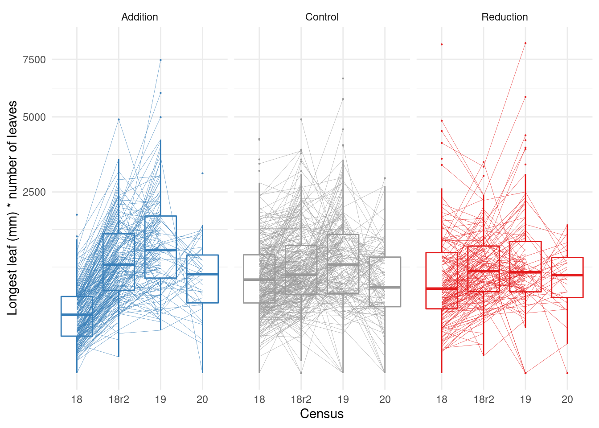
cen.RGR.long %>% mutate(year = as.character(as.integer(year)+1)) %>% left_join(treatments) %>% #get the second year to match with treatments
filter(census !="18r2") %>%
ggplot(aes(x=census, y=RGR, color=water))+ facet_wrap(vars(water))+
geom_hline(yintercept=0)+ geom_boxplot(outlier.size=0.1)+ geom_path(aes(group=plantid), size=0.3)+
scale_color_manual(values=water_pal, guide=F) + theme_minimal() +
labs(x="Census", y="RGR (year\U207B\U00B9)")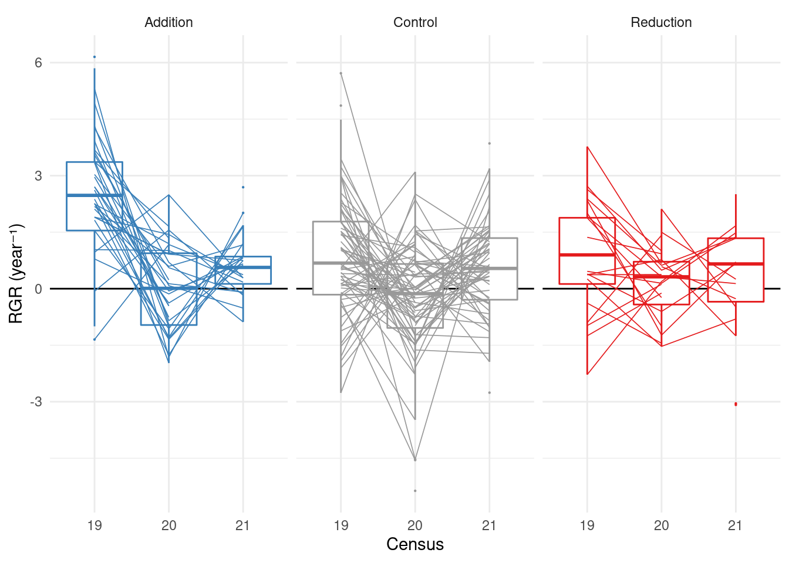
ggplot(cen.RGR, aes(x=RGR_19, y=RGR_20, color=log(size19))) +
geom_hline(yintercept=0) + geom_vline(xintercept=0)+ geom_smooth(method="lm", color="black", se=F) + geom_point() +
scale_color_viridis_c() + coord_fixed() + scale_x_continuous(breaks=-6:6) + scale_y_continuous(breaks=-6:6) +
labs(x="RGR from 2018 to 2019", y= "RGR from 2019 to 2020", color="ln size 2019")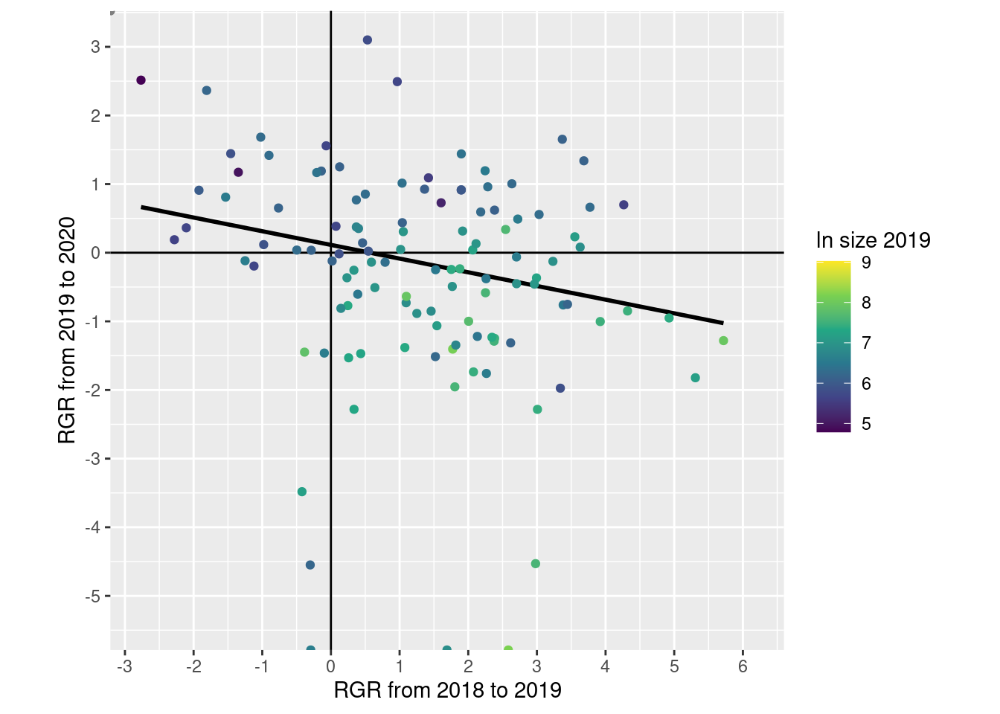
Leaf traits
with(lt, table(date, plot)) %>% kable| 1 | 2 | 3 | 4 | 5 | 6 | |
|---|---|---|---|---|---|---|
| 2018-06-14 | 16 | 16 | 16 | 16 | 16 | 16 |
| 2018-08-15 | 16 | 16 | 16 | 0 | 0 | 0 |
| 2018-08-17 | 0 | 0 | 0 | 16 | 16 | 16 |
| 2019-06-28 | 9 | 7 | 10 | 11 | 3 | 6 |
| 2019-07-01 | 16 | 16 | 16 | 0 | 0 | 0 |
| 2019-07-02 | 0 | 0 | 0 | 16 | 16 | 16 |
| 2019-08-08 | 16 | 16 | 16 | 16 | 16 | 15 |
| 2020-06-19 | 16 | 13 | 15 | 16 | 10 | 12 |
| 2020-07-28 | 16 | 15 | 16 | 16 | 11 | 15 |
lt %>% group_by(date) %>% mutate(index=row_number(), date=factor(date)) %>%
ggplot(aes(x=index, y=water_content, color=factor(date), group=factor(plot))) +
facet_wrap(vars(paste(year, round, sep=" round "), date)) +
geom_hline(yintercept=0.6) + geom_hline(yintercept=0.85) +
geom_point() + geom_smooth(method="lm", color="black", se=F) +
scale_color_brewer(palette="Set1", direction=-1, guide=F) +
labs(x="Measurement order", y="Water content", color="Plot")
lt %>% pivot_longer(c(trichomes, trichome_density, water_content, sla_wet, sla, leaf_area_cm2), names_to="trait") %>%
ggplot(aes(x=factor(date), y=value, color=factor(date))) + facet_wrap(vars(trait), scales="free_y") + geom_boxplot() +
scale_x_discrete(guide=guide_axis(angle=90)) + labs(x="Date", y="", color="Date") +
scale_color_brewer(palette="Set1", direction = -1, guide=F) + theme(legend.position = "top")
ggplot(lt, aes(x=wet_weight_g, y=dry_weight_g, color=factor(date))) + geom_point() + geom_abline(slope=1, intercept = 0) +
geom_abline(slope=1-median(lt$water_content, na.rm=T), intercept = 0) + geom_smooth(se=F) +
coord_cartesian(xlim=c(0,NA), ylim=c(0, NA)) + labs(x="Wet weight (g)", y = "Dry weight (g)", color="Date") +
scale_color_brewer(palette="Set1", direction=-1) + theme(legend.position="top")
ggplot(lt, aes(x=sla_wet, y=sla, color=factor(date))) + geom_point() + geom_smooth(se=F) + geom_rug()+
labs(x=paste("Wet", tolower(traitnames.units["sla"])), y = traitnames["sla"], color="Date") +
scale_color_brewer(palette="Set1", direction=-1) + theme(legend.position="top")
ggplot(lt, aes(x=sla_wet, y=sla, color=factor(date))) + geom_point()
lt %>% pivot_longer(c(wet_weight_g, dry_weight_g, trichomes), names_to="trait") %>%
ggplot(aes(x=leaf_area_cm2, y=value, color=factor(date))) + facet_wrap(vars(trait), scales="free_y", ncol=1) +
geom_point(size=0.7) + geom_smooth(se=F) + labs(x="Leaf area (cm2)", y="", color="Date") +
scale_color_brewer(palette="Set1", direction=-1)
lt %>% pivot_longer(c(trichome_density, sla_wet, sla, water_content), names_to="trait") %>%
ggplot(aes(x=leaf_area_cm2, y=value, color=factor(date))) + facet_wrap(vars(trait), scales="free_y") +
geom_point(size=0.7) + geom_smooth(se=F) + labs(x="Leaf area (cm2)", y="", color="Date") +
scale_color_brewer(palette="Set1", direction=-1) +
theme(legend.position = "top")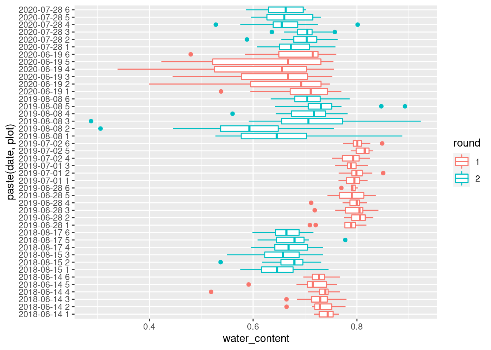
lt %>% mutate(id = paste0(str_sub(year(date),3,4), month(date), day(date), "-",plantid),
id = ifelse(id=="20728-3C162" & trichomes==120, "20728-3C162B", id)) %>% #two leaves collected
select(id, wet_weight_g, dry_weight_g, leaf_area_cm2) %>% column_to_rownames("id") %>% drop_na() %>%
prcomp(scale=T) %>%
autoplot(data = lt %>% mutate(date=factor(date)) %>% drop_na(wet_weight_g, dry_weight_g, leaf_area_cm2),
colour = "date",
loadings = TRUE, loadings.colour="black", loadings.label = TRUE, loadings.label.colour="black",
shape=F, frame=T) + theme(legend.position = "top") +
scale_color_brewer("Date", palette="Set1", direction=-1) + scale_fill_brewer("Date",palette="Set1", direction=-1)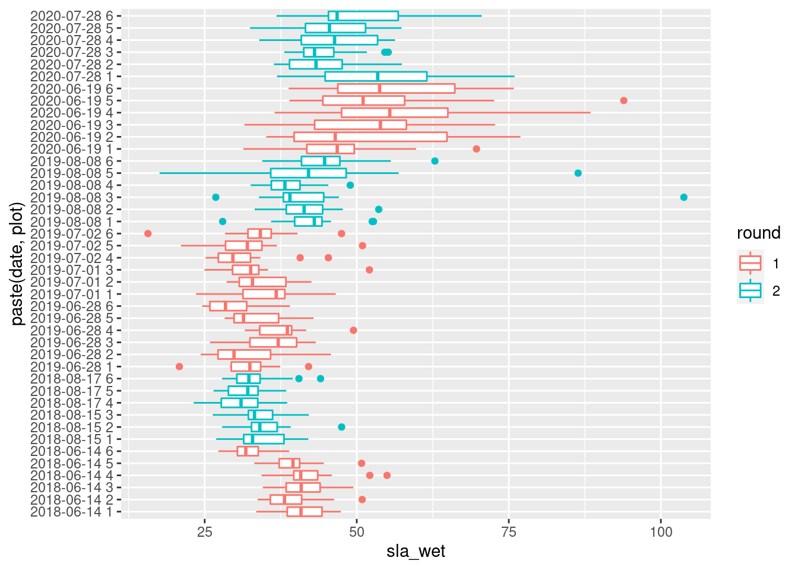
Power law
Area to mass
ggplot(lt, aes(leaf_area_cm2, dry_weight_g, color=year.round)) +
geom_point(size=0.8) + geom_smooth(method = 'nls', formula = 'y~a*x^b', se=F, method.args = list(start= c(a = 0.0066,b=1.23))) + #NLS, weights=1
scale_color_manual(values=year.round_pal) + theme_minimal()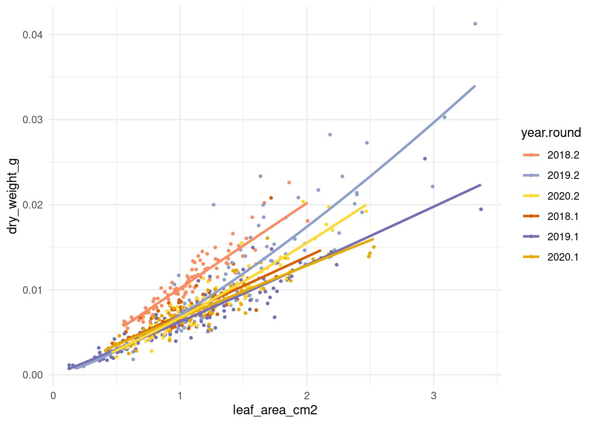
ggplot(lt, aes(x=log(leaf_area_cm2), y=log(dry_weight_g), color=year.round)) +
geom_abline(intercept=-5, slope=1)+
geom_point(size=0.8) + geom_smooth(method = "lm", se=F) + #OLS method
scale_color_manual(values=year.round_pal) + theme_minimal()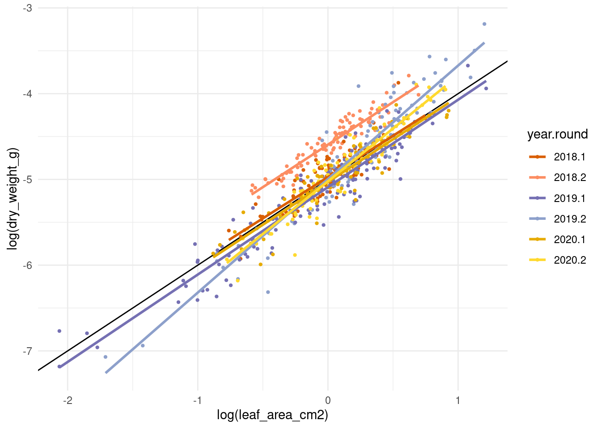
library(lmodel2) #includes RMA regression
lt %>% nest(data=c(-year.round)) %>% mutate(fit = map(data, ~ lmodel2(log(dry_weight_g) ~ log(leaf_area_cm2), data=., "interval", "interval")),
results=map(fit, tidy)) %>% unnest(results) %>% filter(term=="Slope") %>%
ggplot(aes(x=year.round, y=estimate, ymin=conf.low, ymax=conf.high, color=method)) +
geom_hline(yintercept=1) + geom_pointrange(position=position_dodge(0.7)) +
geom_pointrange(data= lt %>% nest(data=c(-year.round)) %>%
mutate(fit = map(data, ~ nls(dry_weight_g ~ a * leaf_area_cm2 ^ b, start=list(a=0.066, b=1.23), data = .)), #weights = 1/sqrt(leaf_area_cm2),
results=map(fit, tidy), method="NLS (+-SE)") %>% unnest(results) %>% filter(term=="b"),
aes(x=year.round, y=estimate, ymin=estimate - std.error, ymax=estimate + std.error),
position=position_dodge(0.7)) +
labs(x="Year, round", y="Beta with 95% confidence interval", color="Regression type", title="Allometric exponent for dry mass vs. leaf area") + theme_minimal()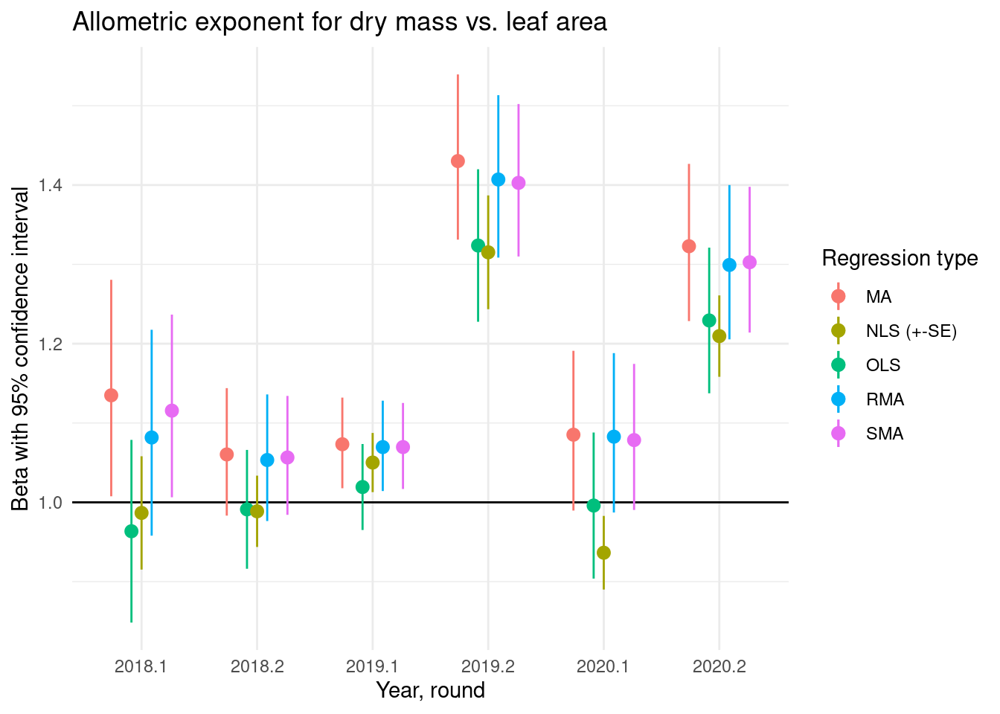
Length to mass
ggplot(lt, aes(leaf_length_cm, dry_weight_g)) +
geom_point(size=0.8) + geom_smooth(method = 'nls', formula = 'y~a*x^b', se=F, method.args = list(start= c(a = 0.00143,b=1.47))) + #NLS, weights=1
xlim(c(0,NA)) + theme_minimal()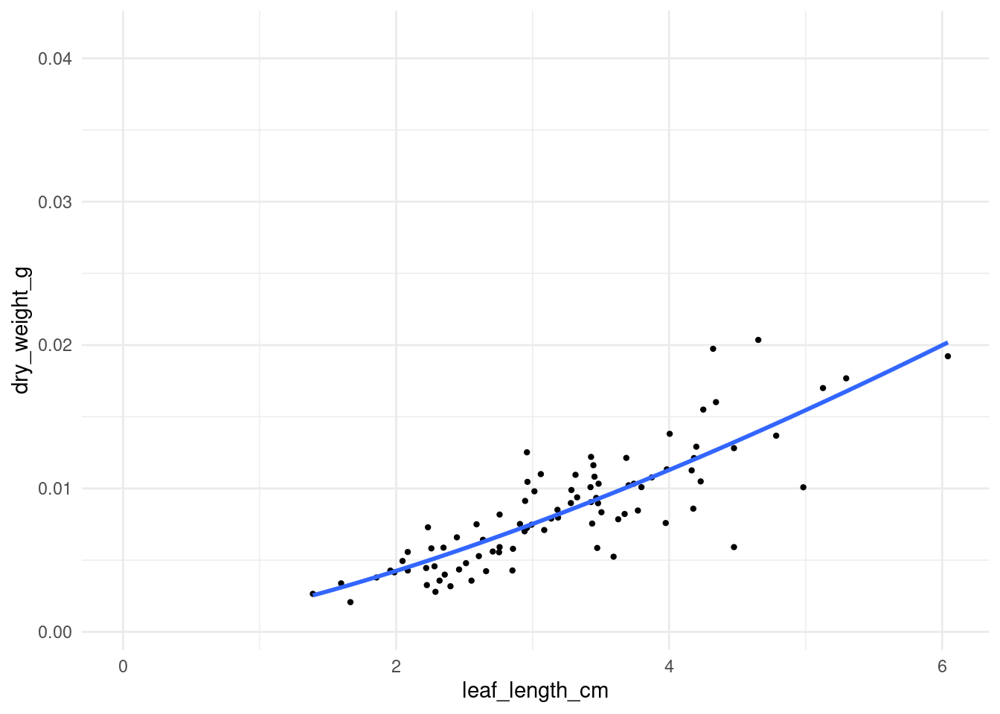
nls(dry_weight_g ~ a * leaf_length_cm ^ b, start=list(a=0.00143, b=1.47), data = lt) %>% tidy# A tibble: 2 x 5
term estimate std.error statistic p.value
<chr> <dbl> <dbl> <dbl> <dbl>
1 a 0.00160 0.000223 7.17 2.37e-10
2 b 1.41 0.103 13.7 2.17e-23# a = 0.00160 +- 0.00022, b = 1.41 +- 0.10Physiology traits
# plot all the LICOR variables by date
licor_date_pal <- sample(rainbow(nlevels(factor(licor$date))))
licor %>% pivot_longer(Photo:StableF) %>% mutate(index=row_number()) %>% filter(!name %in% c("Area","BLC_1","BLCond","StmRat")) %>%
ggplot(aes(x=index, y= value, color=factor(date), shape=year)) + facet_wrap(vars(name), scales="free_y", ncol=4) + geom_point() + scale_color_manual(values=licor_date_pal, guide=F) + theme_dark() + labs(x="Measurement", y="", shape="Year")
licor %>% ggplot(aes(x=Cond, y= Photo, color=Ci>0, shape=year)) + geom_point()
licor %>% filter(Ci>0) %>% ggplot(aes(x=Cond, y= Photo, color=factor(date), linetype=year, shape=year)) + geom_point() + geom_smooth(method="lm", se=F) + scale_linetype_manual(values=c(3,1,4)) + scale_color_manual(values=licor_date_pal, guide=F) + theme_dark()
licor %>% filter(Ci>0) %>% ggplot(aes(y=Photo/Cond, x=factor(date), color=year)) + geom_boxplot(size=1.5) +
scale_color_manual(values=year_pal) + scale_x_discrete(guide = guide_axis(angle = 90)) + theme_minimal()
licor %>% filter(Ci>0) %>% left_join(treatments)%>% ggplot(aes(y=Photo/Cond, x=factor(date), color=water)) +
geom_boxplot(position=position_dodge2(preserve="single")) +
scale_color_manual(values=water_pal) + scale_x_discrete(guide = guide_axis(angle = 90)) + theme_minimal()
pt %>% ggplot(aes(x=conductance, y= photosynthesis, color=factor(date), linetype=year, shape=year)) + geom_point() + geom_smooth(method="lm", se=F) + scale_linetype_manual(values=c(3,1,4)) + scale_color_manual(values=licor_date_pal, guide=F) + theme_dark()
pt %>% select(date, plantid, photosynthesis, conductance, WUE, notes) %>%
filter(is.na(conductance)) %>% mutate(conductance = photosynthesis/WUE) %>% kable| date | plantid | photosynthesis | conductance | WUE | notes |
|---|---|---|---|---|---|
| 2019-08-09 | 1C75 | 81.29 | 1.127 | 72.11 | NA |
| 2019-08-09 | 2C271 | 27.26 | 1.250 | 21.81 | NA |
| 2019-08-09 | 3C129 | 92.99 | 1.764 | 52.72 | NA |
| 2019-08-13 | 4D49 | 65.23 | 1.155 | 56.50 | NA |
These conductance entries were blank, filled from WUE. There is another entry with conductance = 1.23 that was not blanked.
Floral traits
Floral trait correlations
mt %>% select(corolla_length, corolla_width, style_length, anther_max, anther_min, sepal_width) %>%
ggpairs()
nt %>% select(nectar_24_h_ul, nectar_conc, nectar_sugar_24_h_mg) %>%
ggpairs()
ggplot(nt, aes(x=nectar_24_h_ul, y = nectar_conc)) + geom_point() + labs(x=traitnames[["nectar_conc"]], y=traitnames[["nectar_24_h_ul"]]) + geom_smooth(se=F)
mnps.plantyr %>% select(corolla_length, corolla_width, style_length, anther_max, anther_min, sepal_width, nectar_24_h_ul, nectar_conc, nectar_sugar_24_h_mg, height_cm, flowers_est) %>%
ggcorr(hjust=0.85, layout.exp=2, label=T, label_round=2)
mnps.plantyr %>% select(all_of(seedtraits[c(1,7,2:6)])) %>%
ggcorr(hjust=0.85, layout.exp=2, label=T, label_round=2)
Floral traits within season
No obvious effect of time within a season for corolla length/width or sepal width. The timing of trait measurements was different each year:
ggplot(sm, aes(x=yday(date))) +
facet_wrap(vars(year), ncol=1) +
geom_point(data=ph, aes(y= height_cm/2, color="Phenology (height)"))+
geom_point(data=mt, aes(y= corolla_length, color="Morphology"))+
geom_point(data=mt, aes(y= nectar_24_h_ul, color="Nectar"))+
geom_point(aes(y = VWC, color="Soil moisture")) +
geom_vline(data=meltdates, aes(xintercept=sun_date, linetype=snow), color="grey40")+
labs(x="Day of year", shape="Snow", linetype="Snow", y="", color="Measurement")+
scale_color_manual(values=c("purple","orange","grey","black"))+
scale_x_continuous(breaks=seq(120, 240, by=20))+
scale_linetype_manual(values=c(2,1)) + theme_minimal() +
theme(legend.key.size = unit(1.5, "lines"), axis.text.y=element_blank())
ggplot(data=mt, aes(x=yday(date), y= corolla_length, color=water)) +
facet_wrap(vars(year), ncol=1) +
geom_point()+ geom_smooth(se=F)+
labs(y=traitnames[["corolla_length"]], x="Day of year")+
scale_color_manual(values=water_pal) + theme_minimal()
ggplot(data=mt, aes(x=yday(date), y= nectar_24_h_ul, color=water)) +
facet_wrap(vars(year), ncol=1) +
geom_point()+ geom_smooth(se=F)+
labs(y=traitnames[["nectar_24_h_ul"]], x="Day of year")+
scale_color_manual(values=water_pal) + theme_minimal()
ggplot(data=nt, aes(x=yday(date), y= nectar_conc, color=water)) +
facet_wrap(vars(year), ncol=1) +
geom_point()+ geom_smooth(se=F)+
labs(y=traitnames[["nectar_conc"]], x="Day of year")+
scale_color_manual(values=water_pal) + theme_minimal()
Selection on floral traits
mnps.plantyr %>% select(all_of(c(floraltraits, "seeds_est")), year) %>%
pivot_longer(all_of(floraltraits), names_to="trait") %>%
ggplot(aes(x=value, y=seeds_est, color=year)) + geom_point() + geom_smooth(method="lm",se=F) +
facet_wrap(vars(trait), scales="free_x", labeller=as_labeller(traitnames)) +
labs(x="Trait", y="Seed production", color="year")+
theme_bw() + scale_color_manual(values=year_pal)
mt.mod.seeds <- map(set_names(floraltraits),
~ lm(seeds_rel ~ trait.z * year,
data=mnps.plantyr %>% mutate(trait.z = mnps.plantyr[[.x]] / alltraits.sd[[.x]]) %>%
group_by(year) %>% mutate(seeds_rel = seeds_est/mean(seeds_est, na.rm=T)))) # mean seeds in each yr
mt.mod.seeds.coefs <- map_dfr(mt.mod.seeds, tidy, .id="trait")
mt.mod.seeds.tests <- map(mt.mod.seeds, car::Anova, type=3) %>% map_dfr(tidy, .id="trait")
mt.mod.seeds.emm <- map_dfr(mt.mod.seeds, ~summary(emtrends(.x, ~1, var="trait.z")), .id="trait")
#get the the standardized selection differential S' (change in relative fitness / standardized trait value)
mt.mod.seeds.coefs %>% filter(term=="trait.z") %>% arrange(estimate)# A tibble: 8 x 6
trait term estimate std.error statistic p.value
<chr> <chr> <dbl> <dbl> <dbl> <dbl>
1 nectar_conc trait.z -0.0223 0.0613 -0.363 7.17e- 1
2 nectar_24_h_ul trait.z 0.0408 0.0551 0.740 4.60e- 1
3 sepal_width trait.z 0.0506 0.0568 0.892 3.73e- 1
4 corolla_length trait.z 0.0759 0.0551 1.38 1.69e- 1
5 corolla_width trait.z 0.0795 0.0571 1.39 1.64e- 1
6 style_length trait.z 0.102 0.0551 1.85 6.54e- 2
7 height_cm trait.z 0.435 0.0497 8.75 4.34e-17
8 flowers_est trait.z 0.691 0.0290 23.8 3.31e-84#See if VWC affects relative fitness
ggplot(mnps.plantyr, aes(x=VWC, y=seeds_est, color=year)) + geom_point() + geom_smooth(method="lm",se=F) +
labs(x="VWC", y="Seed production", color="year")+ theme_bw() + scale_color_manual(values=year_pal)
seeds.mod.sm <- lmer(seeds_rel ~ VWC * year + (1|plotid),
data=mnps.plantyr %>% group_by(year) %>% mutate(seeds_rel = seeds_est/mean(seeds_est, na.rm=T)))
anova(seeds.mod.sm, ddf="Ken")Type III Analysis of Variance Table with Kenward-Roger's method
Sum Sq Mean Sq NumDF DenDF F value Pr(>F)
VWC 0.577 0.577 1 26 0.67 0.42
year 1.457 0.729 2 407 0.84 0.43
VWC:year 1.396 0.698 2 423 0.81 0.45emtrends(seeds.mod.sm, ~year, var="VWC") year VWC.trend SE df lower.CL upper.CL
2018 -0.0266 0.0637 151.7 -0.1524 0.0993
2019 0.0957 0.0760 105.5 -0.0550 0.2464
2020 0.0352 0.0663 99.3 -0.0962 0.1667
Degrees-of-freedom method: kenward-roger
Confidence level used: 0.95 Plasticity models
Plasticity: water and snowmelt treatments
This is a split-plot analysis, based on the original experimental design. The models use:
- mnps.plantyr, the plant means within each year
- snow, the snowmelt treatment (except for plot 2 in 2019)
- water, the water treatments with mock rainouts and controls combined
- plot as a random effect (subplots vary within this larger unit)
- plotid as a random effect (plants vary within this larger unit)
The models are specified as:
lmer(trait ~ year * snow * water + (1|snow:plot) + (1|snow:plotid), data = mnps.plantyr)ANOVA tables
lt.subplot.r2 <- lt.subplotround %>% filter(round=="2")
lt.plantyr.r2 <- lt.plantyr %>% filter(round=="2")
options(contrasts = c("contr.sum", "contr.poly"))
mod.split <- c(map(set_names(traits),
~ lmer(mnps.plantyr[[.x]] ~ year * snow * water + (1|snow:plot) + (1|snow:plotid),
data=mnps.plantyr)),
map(set_names(leaftraits),
~ lmer(lt.plantyr.r2[[.x]] ~ year * snow * water + (1|snow:plot) + (1|snow:plotid),
data=lt.plantyr.r2)),
map(set_names(phystraits),
~ lmer(pt.plantyr[[.x]] ~ year * snow * water + (1|snow:plot) + (1|snow:plotid) + (1|round),
data=pt.plantyr)))
mod.split.coefs <- map_dfr(mod.split, tidy, .id="trait")
mod.split.tests <- map(mod.split, anova, ddf="Ken") %>% map_dfr(tidy, .id="trait")
mod.split.emm <- map_dfr(mod.split, ~ summary(emmeans(ref_grid(.x), ~ year * snow * water)), .id = "trait")
anova_table(mod.split.tests, mod.split) %>% kable()| trait | year | snow | water | year:snow | year:water | snow:water | year:snow:water | R2m | singular |
|---|---|---|---|---|---|---|---|---|---|
| corolla_length | 0.0000 | 0.8946 | 0.0025 | 0.9912 | 0.1473 | 0.7345 | 0.8934 | 0.2280 | TRUE |
| style_length | 0.0000 | 0.7633 | 0.0196 | 0.9797 | 0.1015 | 0.9313 | 0.2752 | 0.1847 | TRUE |
| corolla_width | 0.0000 | 0.7192 | 0.0015 | 0.5251 | 0.6266 | 0.4335 | 0.0614 | 0.3032 | TRUE |
| sepal_width | 0.4991 | 0.9299 | 0.0090 | 0.1803 | 0.0031 | 0.3125 | 0.0221 | 0.1140 | TRUE |
| nectar_24_h_ul | 0.0000 | 0.2087 | 0.0354 | 0.0086 | 0.7041 | 0.6346 | 0.4633 | 0.1675 | TRUE |
| nectar_conc | 0.0000 | 0.5226 | 0.0077 | 0.7581 | 0.6610 | 0.4919 | 0.1730 | 0.3083 | FALSE |
| nectar_sugar_24_h_mg | 0.0000 | 0.3494 | 0.4022 | 0.0281 | 0.3964 | 0.5010 | 0.1339 | 0.1247 | TRUE |
| height_cm | 0.0000 | 0.0797 | 0.9885 | 0.2403 | 0.4519 | 0.4824 | 0.0828 | 0.2340 | FALSE |
| open | 0.0000 | 0.8278 | 0.6950 | 0.1774 | 0.6485 | 0.3676 | 0.1002 | 0.2548 | FALSE |
| seeds_per_fruit | 0.0000 | 0.4424 | 0.8260 | 0.5306 | 0.0794 | 0.1100 | 0.2187 | 0.0988 | TRUE |
| seeds_est | 0.0001 | 0.7351 | 0.6216 | 0.0008 | 0.1495 | 0.3997 | 0.4186 | 0.1193 | TRUE |
| fruits_nonaborted | 0.0102 | 0.8512 | 0.3709 | 0.0065 | 0.3237 | 0.7150 | 0.4067 | 0.0690 | TRUE |
| flowers_est | 0.7132 | 0.8041 | 0.3678 | 0.0102 | 0.2568 | 0.6269 | 0.7218 | 0.0402 | TRUE |
| prop_infested | 0.0000 | 0.2164 | 0.3807 | 0.0511 | 0.8629 | 0.1787 | 0.6333 | 0.0630 | TRUE |
| prop_aborted | 0.0000 | 0.5015 | 0.6996 | 0.2176 | 0.5749 | 0.1385 | 0.4115 | 0.0678 | TRUE |
| seeds_per_flower | 0.0000 | 0.2226 | 0.6307 | 0.1097 | 0.1660 | 0.0590 | 0.7986 | 0.1112 | TRUE |
| sla | 0.0000 | 0.1519 | 0.6661 | 0.0120 | 0.7884 | 0.2773 | 0.1535 | 0.6027 | FALSE |
| trichome_density | 0.0000 | 0.4894 | 0.5712 | 0.5986 | 0.1153 | 0.9208 | 0.5156 | 0.2094 | FALSE |
| water_content | 0.1868 | 0.6817 | 0.0037 | 0.0756 | 0.0068 | 0.3675 | 0.4283 | 0.2171 | FALSE |
| photosynthesis | 0.0620 | 0.6319 | 0.3075 | 0.4575 | 0.4112 | 0.9876 | 0.9137 | 0.1086 | TRUE |
| conductance | 0.0009 | 0.4670 | 0.0023 | 0.4766 | 0.0024 | 0.6613 | 0.6894 | 0.3456 | TRUE |
| WUE | 0.0000 | 0.2108 | 0.0002 | 0.4673 | 0.0026 | 0.3262 | 0.8511 | 0.4422 | TRUE |
re_table(mod.split.coefs) %>% kable()| trait | snow:plotid | snow:plot | Residual | round |
|---|---|---|---|---|
| corolla_length | 0.0000 | 0.4971 | 2.5850 | NA |
| style_length | 0.0000 | 0.3772 | 2.6464 | NA |
| corolla_width | 0.0000 | 0.0000 | 0.3804 | NA |
| sepal_width | 0.0000 | 0.0352 | 0.2227 | NA |
| nectar_24_h_ul | 0.1721 | 0.0000 | 1.0232 | NA |
| nectar_conc | 1.0381 | 1.4209 | 4.9530 | NA |
| nectar_sugar_24_h_mg | 0.0000 | 0.0000 | 0.2949 | NA |
| height_cm | 1.6192 | 0.9319 | 8.9755 | NA |
| open | 0.2788 | 0.3668 | 3.4286 | NA |
| seeds_per_fruit | 0.0000 | 0.0000 | 3.3329 | NA |
| seeds_est | 12.7777 | 0.0000 | 104.0995 | NA |
| fruits_nonaborted | 7.0260 | 0.0000 | 24.8854 | NA |
| flowers_est | 7.1908 | 0.0000 | 32.1731 | NA |
| prop_infested | 0.0000 | 0.0254 | 0.2226 | NA |
| prop_aborted | 0.0000 | 0.0515 | 0.2731 | NA |
| seeds_per_flower | 0.0000 | 0.0000 | 1.6721 | NA |
| sla | 0.8698 | 4.2702 | 20.9322 | NA |
| trichome_density | 17.2419 | 15.0092 | 58.1849 | NA |
| water_content | 0.0120 | 0.0016 | 0.0405 | NA |
| photosynthesis | 0.0000 | 0.0000 | 11.7643 | 3.9188 |
| conductance | 0.0229 | 0.0000 | 0.1685 | 0.0697 |
| WUE | 7.3261 | 0.0005 | 41.2532 | 17.3153 |
Plots
plot_split_plot <- function(emm, data, traits.plot, geom = "point", plot.emm = TRUE, facets="year") {
data.long <- data %>% select(c(all_of(traits.plot), all_of(facets), water, snow)) %>%
pivot_longer(all_of(traits.plot), names_to="trait") %>%
mutate(trait = fct_relevel(trait, traits.plot), snow=fct_relevel(snow, "Normal")) %>%
#value = (value - alltraits.mean[as.character(trait)])/alltraits.sd[as.character(trait)]) %>%
drop_na(value, water) %>% filter(trait %in% traits.plot)
traitnames.multiline <- ifelse(nchar(traitnames.units) > 30, str_replace(traitnames.units, fixed("("),"\n("), traitnames.units)
split_plot <- emm %>% filter(trait %in% traits.plot) %>%
mutate(trait = fct_relevel(trait, traits.plot), snow=fct_relevel(snow, "Normal")) %>%
#emmean = (emmean - alltraits.mean[as.character(trait)])/alltraits.sd[as.character(trait)],
#SE = SE/alltraits.sd[as.character(trait)]) %>%
ggplot(aes(x=water, color=snow)) +
labs(x="Precipitation", y="Standardized trait", color="Snowmelt") +
scale_y_continuous(position="right") + scale_x_discrete(guide=guide_axis(angle=90)) +
#coord_fixed() + #maintains y scale across plots if figure width is constant
scale_color_manual(values=c("grey","black"), guide=guide_legend(override.aes = list(shape=15, size=ifelse(plot.emm,5,1)))) +
theme_minimal() + theme(text=element_text(color="black", size=14), axis.text = element_text(color="black"),
axis.title.y= element_blank(),
panel.border = element_rect(fill=NA, colour = "black"),
panel.spacing=unit(0, "pt"), plot.margin = margin(0,0,0,0, "pt"), legend.position = "top") +
switch(facets,
year = facet_grid(trait ~ year, scales="free_y", switch="y",
labeller = as_labeller(c(traitnames.multiline, set_names(2018:2020)))),
year.round = facet_grid(trait ~ year.round, scales="free_y", switch="y",
labeller = as_labeller(c(traitnames.multiline, set_names(levels(lt$year.round)))))) +
switch(geom,
boxplot = geom_boxplot(data=data.long, aes(y=value), position=position_dodge(width=0.8), show.legend=!plot.emm,
fatten=ifelse(plot.emm, NULL, 1), outlier.size=0.5),
violin = geom_violin(data=data.long, aes(y=value), position=position_dodge(width=0.8), show.legend=F),
point = geom_point(data=data.long, aes(y=value), position=position_dodge(width=0.8), shape=3))
if(plot.emm) { return(split_plot +
geom_linerange(aes(ymin=emmean-SE, ymax=emmean+SE,), position=position_dodge(width=0.8), size=1, show.legend=F) +
geom_point(aes(y=emmean), position=position_dodge(width=0.8), shape="-", size=16))
} else return(split_plot)
}
# grid.arrange( #Morphological traits - boxplot of raw data
# plot_split_plot(mt.mod.split.emm, mnps, floraltraits[1:4], geom="boxplot", plot.emm=F),
# plot_split_plot(mt.mod.split.emm, mnps, floraltraits[5:8], geom="boxplot", plot.emm=F)+ guides(color=F), nrow=1)
#Morphological traits - plot of EMMs and subplot means
(split_plot.floral <- grid.arrange(
plot_split_plot(mod.split.emm, mnps.subplot, floraltraits[1:4]),
plot_split_plot(mod.split.emm, mnps.subplot, floraltraits[5:8]) +
guides(color = guide_legend(override.aes = list(color="white", shape=15, size=5))) +
theme(legend.title = element_text(color = "white"), legend.text = element_text(color = "white")), nrow=1))
TableGrob (1 x 2) "arrange": 2 grobs
z cells name grob
1 1 (1-1,1-1) arrange gtable[layout]
2 2 (1-1,2-2) arrange gtable[layout]ggsave("images/multi_splitplot-1.eps", split_plot.floral, height=10, width=9, device=cairo_ps)
# grid.arrange( #Vegetative and physiological traits - plot of raw data
# plot_split_plot(lt.mod.split.emm, lt %>% filter(round==2), leaftraits, geom="boxplot", plot.emm=F), #second round only
# plot_split_plot(pt.mod.split.emm, pt, phystraits, geom="boxplot", plot.emm=F) + guides(color=F), nrow=1)
#Vegetative and physiological traits - plot of EMMs and subplot means
grid.arrange(
plot_split_plot(mod.split.emm, lt.subplotround %>% filter(round==2), leaftraits), #second round only
plot_split_plot(mod.split.emm, pt.subplot, phystraits)+
guides(color = guide_legend(override.aes = list(color="white", shape=15, size=5))) +
theme(legend.title = element_text(color = "white"), legend.text = element_text(color = "white")), nrow=1)
Compensation of water addition for early snowmelt
mnps.plantyr <- mnps.plantyr %>% mutate(snowwater= paste0(snow, water))
lt.plantyr.r2 <- lt.plantyr.r2 %>% mutate(snowwater= paste0(snow, water))
pt.plantyr <- pt.plantyr %>% mutate(snowwater= paste0(snow, water))
library(multcomp)#careful, this loads MASS, which overrides dplyr::select
options(contrasts = c("contr.sum", "contr.poly"))
mod.split.glht <- c(map(set_names(traits),
~ lmer(mnps.plantyr[[.x]] ~ snowwater * year + (1|snow:plot) + (1|snow:plotid),
data=mnps.plantyr)),
map(set_names(leaftraits),
~ lmer(lt.plantyr.r2[[.x]] ~ snowwater * year + (1|snow:plot) + (1|snow:plotid),
data=lt.plantyr.r2)),
map(set_names(phystraits),
~ lmer(pt.plantyr[[.x]] ~ snowwater * year + (1|snow:plot) + (1|snow:plotid) + (1|round),
data=pt.plantyr))) %>%
#compare early snowmelt + addition vs. normal snowmelt + control
map(glht, linfct = mcp(snowwater = c("EarlyAddition - NormalControl = 0"))) %>%
map_dfr(~ tibble(EarlyAddition_minus_NormalControl = coef(.x), p=summary(.x)$test$pvalues), .id="trait")
mod.split.glht %>% kable()| trait | EarlyAddition_minus_NormalControl | p |
|---|---|---|
| corolla_length | 0.7147 | 0.2166 |
| style_length | 0.3768 | 0.4777 |
| corolla_width | 0.1456 | 0.0328 |
| sepal_width | 0.0648 | 0.2286 |
| nectar_24_h_ul | 0.1174 | 0.5965 |
| nectar_conc | -2.3297 | 0.1453 |
| nectar_sugar_24_h_mg | -0.0244 | 0.6536 |
| height_cm | -3.1022 | 0.0946 |
| open | -0.0669 | 0.9041 |
| seeds_per_fruit | -0.4617 | 0.4177 |
| seeds_est | -12.7966 | 0.5227 |
| fruits_nonaborted | -0.0784 | 0.9900 |
| flowers_est | 5.6699 | 0.4262 |
| prop_infested | 0.0805 | 0.0517 |
| prop_aborted | 0.0720 | 0.2184 |
| seeds_per_flower | -0.7406 | 0.0096 |
| sla | -6.3121 | 0.3365 |
| trichome_density | -20.9016 | 0.3201 |
| water_content | 0.0288 | 0.0367 |
| photosynthesis | 2.5537 | 0.2926 |
| conductance | 0.0417 | 0.2764 |
| WUE | -15.1284 | 0.1282 |
#detach("package:multcomp", unload = TRUE); detach("package:TH.data", unload = TRUE);Compare treatment levels
#This ignores any interactions with water (water:snow and water:year)
mod.split.tests.water <- map(mod.split, multcomp::glht,
linfct = multcomp::mcp(water = c("Addition - Control = 0", "Reduction - Control = 0"))) %>%
map_dfr(tidy, .id="trait")
mod.split.tests.water %>% select(trait, contrast, adj.p.value) %>% pivot_wider(names_from=contrast, values_from=adj.p.value) %>% kable()| trait | Addition - Control | Reduction - Control |
|---|---|---|
| corolla_length | 0.0299 | 0.0111 |
| style_length | 0.2532 | 0.0394 |
| corolla_width | 0.0002 | 0.2541 |
| sepal_width | 0.1704 | 0.0224 |
| nectar_24_h_ul | 0.0215 | 0.8459 |
| nectar_conc | 0.0009 | 0.9985 |
| nectar_sugar_24_h_mg | 0.5153 | 0.8040 |
| height_cm | 0.9998 | 0.9851 |
| open | 0.8083 | 0.8845 |
| seeds_per_fruit | 0.8407 | 0.9760 |
| seeds_est | 0.6535 | 0.6195 |
| fruits_nonaborted | 0.9985 | 0.2926 |
| flowers_est | 0.8863 | 0.4086 |
| prop_infested | 0.2925 | 0.5668 |
| prop_aborted | 0.8309 | 0.6283 |
| seeds_per_flower | 0.5405 | 0.9948 |
| sla | 0.5794 | 0.9137 |
| trichome_density | 0.5794 | 0.9603 |
| water_content | 0.0034 | 0.2324 |
| photosynthesis | 0.5205 | 0.5977 |
| conductance | 0.1368 | 0.0040 |
| WUE | 0.0051 | 0.0011 |
#map_dfr(mod.split, ~ summary(emmeans(ref_grid(.x), ~ snow)), .id = "trait")Split plot repeated measures
Leaf traits
lt %>% group_by(plantid, year.round) %>% tally() %>% ungroup %>%
pivot_wider(names_from=year.round, values_from=n, values_fill=0) %>%
rowwise() %>% mutate(tot = sum(c_across(!plantid))) %>%
ggplot(aes(tot)) + geom_histogram(binwidth=1, color="black", fill="white") +
labs(x="Total samples", y="Number of plants", title="Leaf trait sampling") + theme_minimal()
with(lt, table(plantid, year.round)) %>% heatmap(scale="none", Colv = NA, col=c("white",status_pal["vegetative"],"yellow"))
lt %>% pivot_longer(all_of(leaftraits), names_to = "trait") %>%
ggplot(aes(y=value, x=factor(round),color=water, fill=water)) +
facet_grid(trait ~year, scales="free_y", switch="y",labeller=as_labeller(c(traitnames.units, set_names(2018:2020)))) +
geom_violin(position=position_identity(), alpha=0.1)+ #, linetype=snow
annotate("rect", xmin=1, xmax=2, ymin=-Inf, ymax=Inf, fill="white", color=NA) +
geom_point() + geom_path(aes(group=plantid))+
scale_color_manual(values=water_pal) + scale_fill_manual(values=water_pal) + #scale_linetype_manual(values=c(2,1)) +
labs(x="Round", y="", color="Precipitation", fill="Precipitation") + scale_y_continuous(position="right") +
theme_minimal() + theme(text=element_text(color="black", size=14), axis.text = element_text(color="black"),
panel.border = element_rect(fill=NA, colour = "black"), legend.position = "top")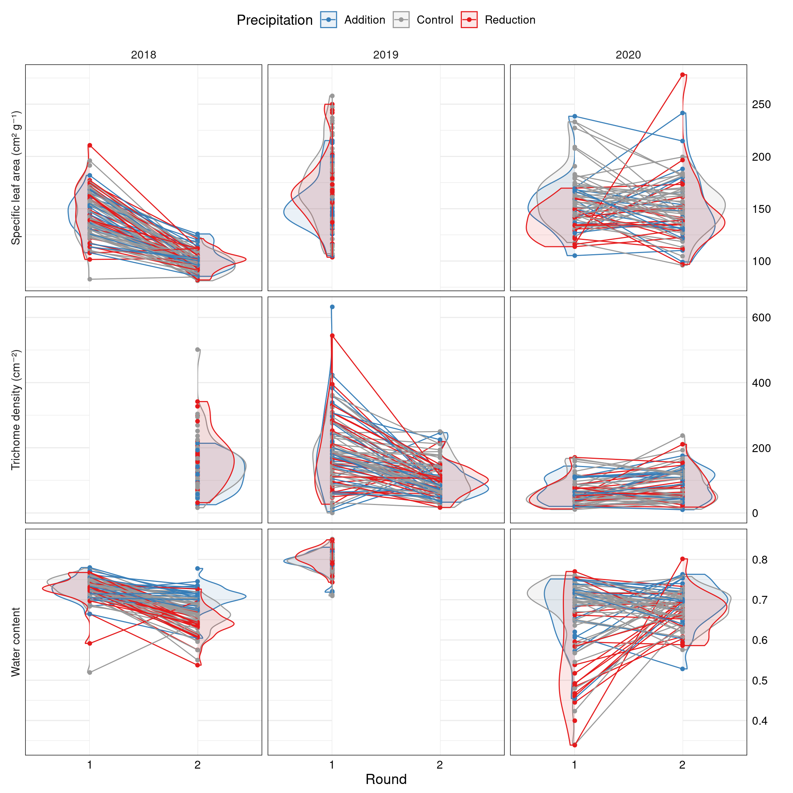
lt %>% pivot_longer(all_of(leaftraits), names_to = "trait") %>%
ggplot(aes(y=value, x=factor(round),color=snow, fill=snow)) +
facet_grid(trait ~year, scales="free_y", switch="y",labeller=as_labeller(c(traitnames.units, set_names(2018:2020)))) +
geom_violin(position=position_identity(), alpha=0.1)+
annotate("rect", xmin=1, xmax=2, ymin=-Inf, ymax=Inf, fill="white", color=NA) +
geom_point() + geom_path(aes(group=plantid))+
scale_color_manual(values=snow_pal) + scale_fill_manual(values=snow_pal) +
labs(x="Round", y="", color="Snowmelt", fill="Snowmelt") + scale_y_continuous(position="right") +
theme_minimal() + theme(text=element_text(color="black", size=14), axis.text = element_text(color="black"),
panel.border = element_rect(fill=NA, colour = "black"), legend.position = "top")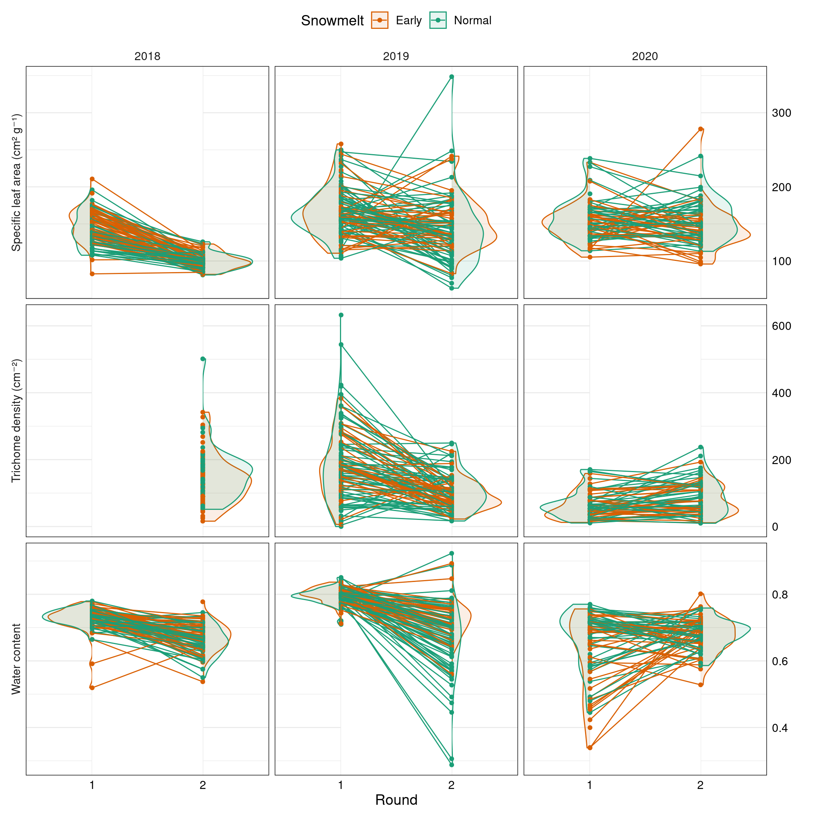
lt %>% pivot_longer(all_of(c(leaftraits, "sla_wet")), names_to = "trait") %>% arrange(date) %>%
ggplot(aes(y=value, x=year.round, color=water)) +
facet_wrap(vars(trait), scales="free_y",
labeller=as_labeller(c(traitnames.units, set_names(paste("Wet" ,tolower(traitnames.units["sla"])),"sla_wet")))) +
geom_point() + geom_path(aes(group=plantid)) + scale_color_manual(values=water_pal) +
labs(x="Year and round", y="", color="Precipitation") + theme_minimal() + theme(legend.position = "top")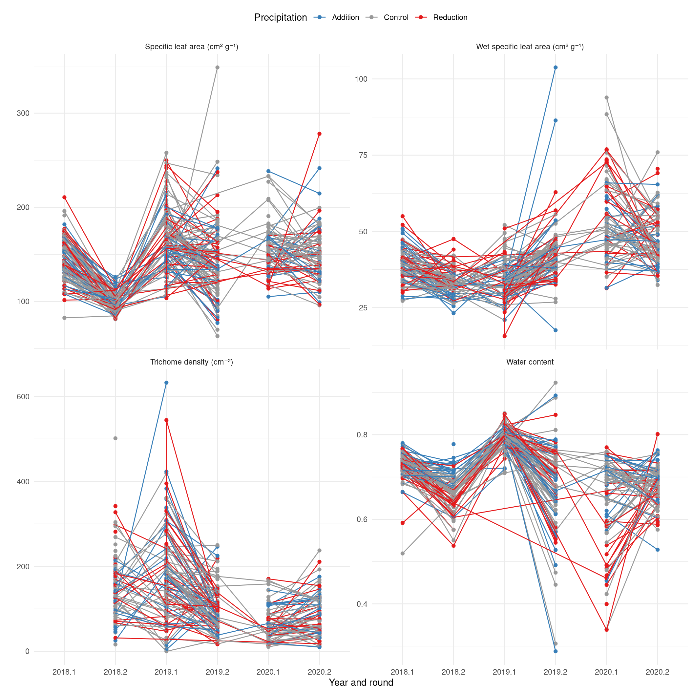
ggplot(lt %>% pivot_longer(all_of(leaftraits), names_to = "trait"), aes(y=value, x=year.round, color=water)) +
facet_wrap(vars(trait), scales="free_y",labeller=as_labeller(traitnames.units),ncol=1) +
geom_path(aes(group=paste(water, plantid)), position=position_dodge2(width=0.9), alpha=0.3) + #dodging not lining up
geom_boxplot(outlier.size=0.3) +
scale_color_manual(values=water_pal) +
labs(x="Year and round", y="", color="Precipitation") + theme_minimal() + theme(legend.position = "top")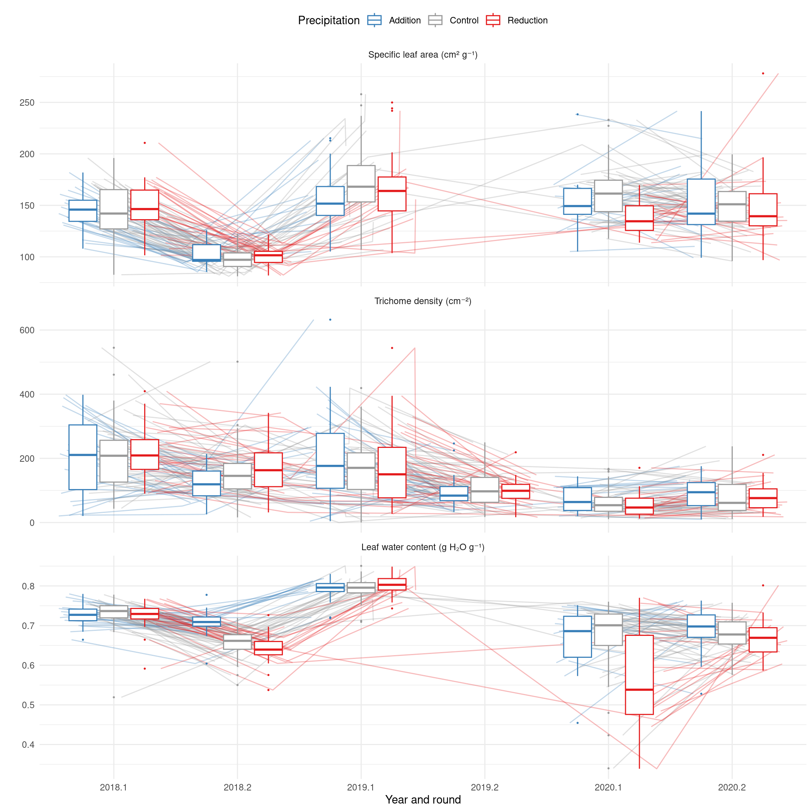
lt.water_content <- lt %>% select(year.round, plantid, water, snow, water_content) %>% arrange(year.round) %>%
pivot_wider(names_from="year.round", values_from="water_content", values_fn=function(x) mean(x, na.rm=T))
plot_rm_change <- function(data, round_x, round_y, range_xy) {
ggplot(data, aes_(x=as.name(round_x), y=as.name(round_y), color=as.name("water"))) +
geom_abline(intercept=0, slope=1) + geom_smooth(se=F, method="lm") + geom_point(size=1) + geom_rug() +
scale_color_manual(values=water_pal, guide=F) + coord_fixed(xlim=range_xy, ylim=range_xy) + theme_minimal()
}
do.call(grid.arrange, map2(c(levels(lt$year.round)[-6],"2018.1"), c(levels(lt$year.round)[-1],"2019.1"), plot_rm_change, data=lt.water_content, range_xy=range(lt$water_content, na.rm=T)))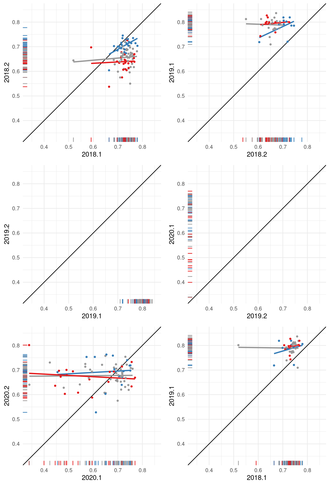
#plot(lt.water_content %>% select(-c(plantid,water,snow)))lt.mod.split.rm <- map(set_names(leaftraits),
~ lmer(lt[[.x]] ~ year * round * water * snow + (1|snow:plot) + (1|snow:plotid) + (1|plantid), data=lt))
lt.mod.split.rm.coefs <- map_dfr(lt.mod.split.rm, tidy, .id="trait")
lt.mod.split.rm.tests <- map(lt.mod.split.rm, anova, ddf="Ken") %>% map_dfr(tidy, .id="trait")
anova_table(lt.mod.split.rm.tests, lt.mod.split.rm) %>% kable()| trait | year | round | water | snow | year:round | year:water | round:water | year:snow | round:snow | water:snow | year:round:water | year:round:snow | year:water:snow | round:water:snow | year:round:water:snow | R2m | singular |
|---|---|---|---|---|---|---|---|---|---|---|---|---|---|---|---|---|---|
| sla | 0 | 0.0000 | 0.3220 | 0.2400 | 0 | 0.0543 | 0.0631 | 0.1089 | 0.1405 | 0.3856 | 0.1202 | 0.8141 | 0.4786 | 0.5912 | 0.8143 | 0.4668 | TRUE |
| trichome_density | 0 | 0.0000 | 0.9558 | 0.2181 | 0 | 0.0926 | 0.2070 | 0.8596 | 0.5595 | 0.8416 | 0.7688 | 0.7744 | 0.5790 | 0.7323 | 0.6341 | 0.2947 | TRUE |
| water_content | 0 | 0.0657 | 0.0064 | 0.4560 | 0 | 0.0000 | 0.0012 | 0.0001 | 0.0021 | 0.5186 | 0.0000 | 0.2395 | 0.3207 | 0.0459 | 0.1425 | 0.6136 | FALSE |
lt.mod.split.rm.emm <- map_dfr(lt.mod.split.rm, ~ summary(emmeans(.x, ~ year * round * water * snow)), .id="trait") %>%
mutate(year.round=paste(year,round,sep="."))
plot_split_plot(lt.mod.split.rm.emm, lt.subplotround, leaftraits, facets="year.round") 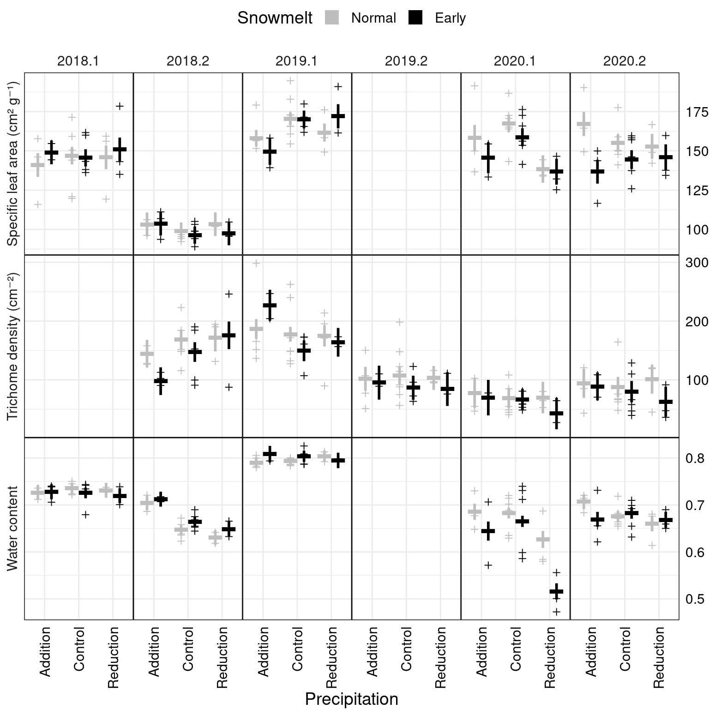
First three rounds
# get plants that were sampled more than once for the first three rounds
lt.long.3 <- lt %>% pivot_longer(all_of(leaftraits), names_to = "trait") %>% arrange(date) %>% drop_na(value) %>%
filter(year.round %in% c("2018.1","2018.2","2019.1"))
lt.long.repeated.3 <- lt.long.3 %>% filter(paste(trait, plantid) %in%
(lt.long.3 %>% group_by(plantid, trait) %>% summarize(n = length(unique(year.round))) %>%
filter(n>1) %>% mutate(trait_plantid = paste(trait, plantid)) %>% pull(trait_plantid))) %>%
group_by(trait, plot, plotid, plantid, water, snow, year.round) %>% summarize(value=mean(value))
lt.repeated.3 <- lt.long.repeated.3 %>% pivot_wider(names_from="trait")
lt.repeated.3.subplotround <- lt.repeated.3 %>% group_by(year.round, water, snow, plotid) %>%
summarize(across(all_of(leaftraits), mean, na.rm=T))
lt.mod.split.rm.3 <- map(set_names(leaftraits),
~ lmer(lt.repeated.3[[.x]] ~ year.round * water * snow + (1|snow:plot) + (1|snow:plotid) + (1|plantid), data=lt.repeated.3))
lt.mod.split.rm.3.tests <- map(lt.mod.split.rm.3, anova, ddf="Ken") %>% map_dfr(tidy, .id="trait")
anova_table(lt.mod.split.rm.3.tests, lt.mod.split.rm.3) %>% kable()| trait | year.round | water | snow | year.round:water | year.round:snow | water:snow | year.round:water:snow | R2m | singular |
|---|---|---|---|---|---|---|---|---|---|
| sla | 0 | 0.8730 | 0.3975 | 0.7454 | 0.0636 | 0.7876 | 0.8369 | 0.5824 | FALSE |
| trichome_density | 0 | 0.9137 | 0.1228 | 0.0874 | 0.3010 | 0.7593 | 0.7196 | 0.1529 | TRUE |
| water_content | 0 | 0.0271 | 0.6476 | 0.0000 | 0.1614 | 0.7026 | 0.5422 | 0.6841 | TRUE |
lt.mod.split.rm.3.emm <- map_dfr(lt.mod.split.rm.3, ~ summary(emmeans(.x, ~ year.round * water * snow)), .id="trait")
plot_split_plot(lt.mod.split.rm.3.emm, lt.repeated.3.subplotround, leaftraits, facets="year.round") 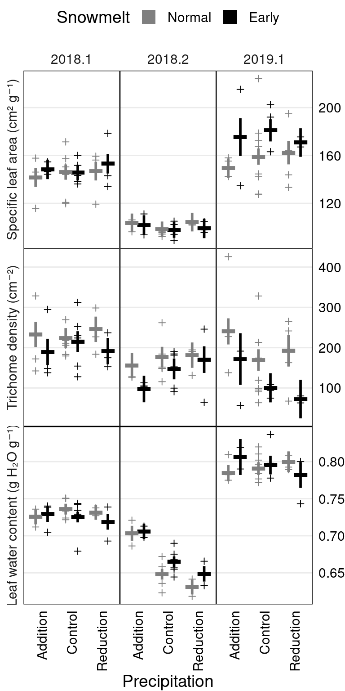
#plot_split_plot(lt.mod.split.rm.3.emm, lt.repeated.3, leaftraits, geom="boxplot", plot.emm=FALSE, facets="year.round") Physiology
pt %>% group_by(plantid, year) %>% tally() %>% ungroup %>%
pivot_wider(names_from=year, values_from=n, values_fill=0) %>%
rowwise() %>% mutate(tot = sum(c_across(!plantid))) %>%
ggplot(aes(tot)) + geom_histogram(binwidth=1, color="black", fill="white") +
labs(x="Total samples", y="Number of plants", title="Physiology sampling") + theme_minimal()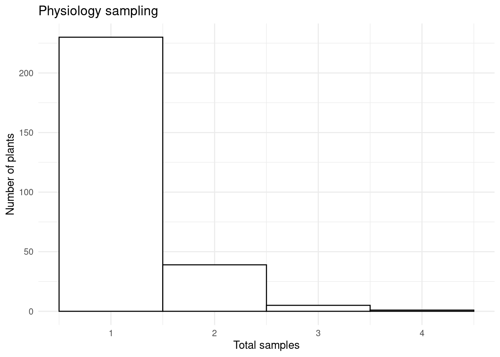
with(pt, table(plantid, year)) %>% heatmap(scale="none", Colv = NA, col=c("white",status_pal["vegetative"],"yellow"))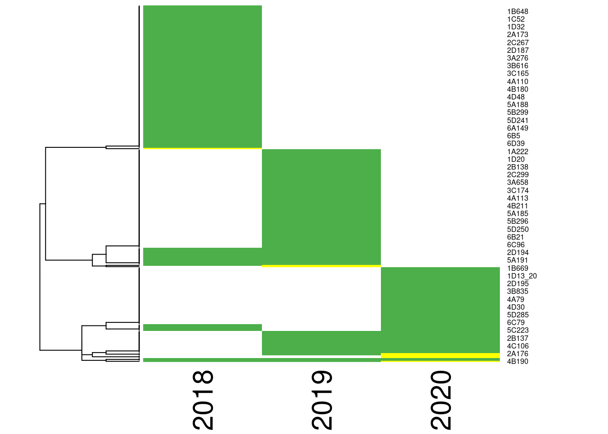
pt.mod.split.rm <- map(set_names(phystraits),
~ lmer(pt[[.x]] ~ year * snow * water + (1|snow:plot) + (1|snow:plotid) + (1|plantid) + (1|round), data=pt))
pt.mod.split.rm.coefs <- map_dfr(pt.mod.split.rm, tidy, .id="trait")
pt.mod.split.rm.tests <- map(pt.mod.split.rm, anova, ddf="Ken") %>% map_dfr(tidy, .id="trait")
anova_table(pt.mod.split.rm.tests, pt.mod.split.rm) %>% kable()| trait | year | snow | water | year:snow | year:water | snow:water | year:snow:water | R2m | singular |
|---|---|---|---|---|---|---|---|---|---|
| photosynthesis | 0.0634 | 0.6154 | 0.3129 | 0.4608 | 0.4123 | 0.9864 | 0.9141 | 0.1082 | TRUE |
| conductance | 0.0011 | 0.4864 | 0.0026 | 0.5085 | 0.0022 | 0.6521 | 0.5996 | 0.3406 | TRUE |
| WUE | 0.0000 | 0.2136 | 0.0001 | 0.4308 | 0.0021 | 0.2378 | 0.7878 | 0.4397 | TRUE |
Plasticity: absolute snowmelt date and estimated summer precipitation
ANOVA tables
lt.subplot.r2 <- lt.subplotround %>% filter(round=="2")
lt.plantyr.r2 <- lt.plantyr %>% filter(round=="2")
options(contrasts = c("contr.sum", "contr.poly"))
mod.abs <- c(map(set_names(traits),
~ lmer(mnps.plantyr[[.x]] ~ sun_date * precip_est_mm + (1|plot) + (1|plotid), data=mnps.plantyr)),
map(set_names(leaftraits),
~ lmer(lt.plantyr.r2[[.x]] ~ sun_date * precip_est_mm + (1|plot) + (1|plotid), data=lt.plantyr.r2)),
map(set_names(phystraits),
~ lmer(pt.plantyr[[.x]] ~ sun_date * precip_est_mm + (1|plot) + (1|plotid) + (1|round),
data=pt.plantyr)))
mod.abs.coefs <- map_dfr(mod.abs, tidy, .id="trait")
mod.abs.tests <- map(mod.abs, anova, ddf="Ken") %>% map_dfr(tidy, .id="trait")
anova_table(mod.abs.tests, mod.abs) %>% kable()| trait | sun_date | precip_est_mm | sun_date:precip_est_mm | R2m | singular |
|---|---|---|---|---|---|
| corolla_length | 0.0000 | 0.0001 | 0.0064 | 0.2073 | FALSE |
| style_length | 0.0000 | 0.0462 | 0.1515 | 0.1678 | FALSE |
| corolla_width | 0.0000 | 0.0037 | 0.0617 | 0.2411 | FALSE |
| sepal_width | 0.0141 | 0.0005 | 0.0017 | 0.0708 | FALSE |
| nectar_24_h_ul | 0.0078 | 0.2927 | 0.8264 | 0.1351 | FALSE |
| nectar_conc | 0.0000 | 0.0508 | 0.1917 | 0.2888 | FALSE |
| nectar_sugar_24_h_mg | 0.6887 | 0.3521 | 0.6366 | 0.0456 | TRUE |
| height_cm | 0.0000 | 0.7391 | 0.6307 | 0.2249 | TRUE |
| open | 0.0000 | 0.0807 | 0.0796 | 0.3124 | FALSE |
| seeds_per_fruit | 0.0075 | 0.9330 | 0.9207 | 0.0572 | TRUE |
| seeds_est | 0.0027 | 0.8472 | 0.8219 | 0.0666 | TRUE |
| fruits_nonaborted | 0.0360 | 0.7168 | 0.8817 | 0.0314 | TRUE |
| flowers_est | 0.6044 | 0.6473 | 0.7162 | 0.0015 | TRUE |
| prop_infested | 0.0482 | 0.4702 | 0.5869 | 0.0207 | TRUE |
| prop_aborted | 0.0029 | 0.3351 | 0.4617 | 0.0434 | FALSE |
| seeds_per_flower | 0.0004 | 0.5667 | 0.5775 | 0.0769 | TRUE |
| sla | 0.0000 | 0.4675 | 0.4396 | 0.5560 | TRUE |
| trichome_density | 0.0015 | 0.0066 | 0.0814 | 0.1893 | FALSE |
| water_content | 0.9537 | 0.2542 | 0.3505 | 0.1781 | TRUE |
| photosynthesis | 0.0052 | 0.0973 | 0.1531 | 0.0820 | TRUE |
| conductance | 0.0003 | 0.0247 | 0.0821 | 0.2300 | TRUE |
| WUE | 0.0022 | 0.0099 | 0.0554 | 0.2054 | TRUE |
re_table(mod.abs.coefs) %>% kable()| trait | plotid | plot | Residual | round |
|---|---|---|---|---|
| corolla_length | 0.5415 | 0.3387 | 2.6135 | NA |
| style_length | 0.3413 | 0.2467 | 2.6446 | NA |
| corolla_width | 0.0539 | 0.0040 | 0.3923 | NA |
| sepal_width | 0.0212 | 0.0280 | 0.2256 | NA |
| nectar_24_h_ul | 0.2193 | 0.0681 | 1.0281 | NA |
| nectar_conc | 0.7736 | 1.0475 | 4.9856 | NA |
| nectar_sugar_24_h_mg | 0.0277 | 0.0000 | 0.3025 | NA |
| height_cm | 1.6834 | 0.0000 | 8.9663 | NA |
| open | 0.4554 | 0.5671 | 3.2361 | NA |
| seeds_per_fruit | 0.0000 | 0.0000 | 3.3663 | NA |
| seeds_est | 15.7251 | 0.0012 | 105.2394 | NA |
| fruits_nonaborted | 6.2688 | 0.0000 | 25.0934 | NA |
| flowers_est | 6.6864 | 0.0000 | 32.3815 | NA |
| prop_infested | 0.0000 | 0.0187 | 0.2251 | NA |
| prop_aborted | 0.0185 | 0.0469 | 0.2735 | NA |
| seeds_per_flower | 0.0000 | 0.0000 | 1.6829 | NA |
| sla | 0.0000 | 18.5088 | 21.5093 | NA |
| trichome_density | 25.8474 | 11.2582 | 59.3231 | NA |
| water_content | 0.0112 | 0.0000 | 0.0411 | NA |
| photosynthesis | 0.0000 | 0.0000 | 11.6391 | 3.9439 |
| conductance | 0.0286 | 0.0000 | 0.1708 | 0.0988 |
| WUE | 7.2066 | 0.0000 | 41.9351 | 35.7988 |
Plots
plot_abs <- function(mod, data, traits.plot, facets = "trait") {
data.long <- data %>% select(all_of(traits.plot), water, snow, year, sun_date, precip_est_mm) %>%
pivot_longer(all_of(traits.plot), names_to="trait") %>%
mutate(trait = fct_relevel(trait, traits.plot), snow=fct_relevel(snow, "Normal"),
value = (value - alltraits.mean[as.character(trait)])/alltraits.sd[as.character(trait)]) %>%
drop_na(value, water) %>% filter(trait %in% traits.plot)
precip.breaks <- seq(25,175, by=25)
grid_emmeans <- function(mods, use.rounds = F) {
grid.points <- list(sun_date=range(treatments$sun_date), precip_est_mm=precip.breaks)
if(use.rounds) map_dfr(mods, ~ summary(emmeans(.x, ~ precip_est_mm * sun_date * round, at=grid.points)), .id="trait")
else map_dfr(mods, ~ summary(emmeans(.x, ~ precip_est_mm * sun_date, at=grid.points)), .id="trait")
}
emm.grid <- mod[traits.plot] %>% grid_emmeans(use.rounds= facets=="trait.round") %>%
mutate(trait = fct_relevel(trait, traits.plot),
emmean = (emmean - alltraits.mean[as.character(trait)])/alltraits.sd[as.character(trait)])
traitnames.multiline <- ifelse(nchar(traitnames) > 30, str_replace(traitnames, fixed("("),"\n("), traitnames)
abs_plot <- ggplot(emm.grid, aes(x=sun_date, y=emmean, color=precip_est_mm, group=precip_est_mm)) +
geom_point(data = data.long, aes(y=value, shape=year), size=2) + geom_line() +
scale_color_gradientn(colors=rev(water_pal),
values=rev(c(1, (treatments %>% group_by(water) %>% summarize(across(precip_est_mm, mean)) %>%
pull(precip_est_mm) %>% scales::rescale(from=range(precip.breaks)))[2],0)),
breaks=precip.breaks) +
labs(x="Snowmelt date", y="Standardized trait", color="Summer\nprecipitation\n(mm)", shape="Year") +
scale_y_continuous(position="right")+
theme_minimal() + theme(text=element_text(color="black", size=14), axis.text = element_text(color="black"),
panel.border = element_rect(fill=NA, colour = "black")) +
switch(facets,
trait = facet_wrap(vars(trait), scales="fixed", dir = "v", ncol=2, labeller = as_labeller(traitnames.multiline)),
trait.round = facet_grid(trait ~ round, scales="free_y", switch="y",
labeller = as_labeller(c(traitnames.multiline,
set_names(paste("Round",1:2), 1:2)))))
return(abs_plot)
}
# plot_abs(mt.mod.abs, mnps, floraltraits) #Morphological traits - raw data
plot_abs(mod.abs, mnps.subplot, floraltraits) + #Morphological traits - subplot means
scale_y_continuous(limits=c(-1.7, 2.8), breaks=c(-1:2))
ggsave("images/multi_meltdate-1.eps", height=10, width=6, device=cairo_ps)
# grid.arrange(plot_abs(lt.mod.abs, lt, leaftraits),
# plot_abs(pt.mod.abs, pt, phystraits) + guides(color=F, shape=F), ncol=1) #raw data
plot_abs(mod.abs, bind_rows(lt.subplot.r2, pt.subplot), c(leaftraits[2],phystraits[c(3,1,2)])) +
scale_y_continuous(limits=c(-1.3, 1.8), breaks=c(-2:1))#subplot means
Slope plots and compensation
Compensation points calculated at average value of other predictor - only use for traits where there are effects of both predictors but no interaction
mod.abs.emm.avg <- map_dfr(set_names(c("sun_date", "precip_est_mm")),
~ mod.abs %>% map(emtrends, var = .x, ~1) %>%
map(as_tibble) %>% set_names(alltraits) %>% bind_rows(.id="trait") %>%
rename_with(.cols=ends_with("trend"), ~ "trend"), .id="predictor") %>%
mutate(predictor=fct_relevel(predictor,"sun_date"),
sd.plantyr = alltraits.sd[trait],
trend = trend / sd.plantyr, SE = SE / sd.plantyr)
mod.abs.emm.avg.compensate <- mod.abs.emm.avg %>%
pivot_wider(names_from=predictor, values_from=c(trend, SE), id_cols=c(trait)) %>%
mutate(predictor = "compensation",
precip_mm_per_snow_day = trend_sun_date / trend_precip_est_mm,
SE = abs(precip_mm_per_snow_day) * # propagate error in SEs using formula for quotients
sqrt((SE_precip_est_mm / trend_precip_est_mm)^2 + (SE_sun_date / trend_sun_date)^2),
prop_mean_total_precip_per_snow_day = precip_mm_per_snow_day / mean(groundcover$precip_est_mm, na.rm=T))
# divide compensation by mean summer precip 1990 - 2020 (mm)
mod.abs.emm.avg.compensate %>% select(-predictor) %>% kable()| trait | trend_sun_date | trend_precip_est_mm | SE_sun_date | SE_precip_est_mm | precip_mm_per_snow_day | SE | prop_mean_total_precip_per_snow_day |
|---|---|---|---|---|---|---|---|
| corolla_length | 0.0131 | 0.0073 | 0.0024 | 0.0011 | 1.805 | 0.4375 | 0.0209 |
| style_length | 0.0202 | 0.0037 | 0.0025 | 0.0010 | 5.416 | 1.6122 | 0.0627 |
| corolla_width | 0.0182 | 0.0069 | 0.0024 | 0.0010 | 2.635 | 0.5246 | 0.0305 |
| sepal_width | -0.0041 | 0.0039 | 0.0035 | 0.0014 | -1.069 | 0.9923 | -0.0124 |
| nectar_24_h_ul | 0.0131 | 0.0062 | 0.0026 | 0.0013 | 2.103 | 0.5986 | 0.0244 |
| nectar_conc | -0.0282 | -0.0043 | 0.0024 | 0.0011 | 6.632 | 1.7649 | 0.0768 |
| nectar_sugar_24_h_mg | -0.0051 | 0.0037 | 0.0028 | 0.0012 | -1.381 | 0.8848 | -0.0160 |
| height_cm | 0.0268 | -0.0010 | 0.0020 | 0.0010 | -28.052 | 28.6434 | -0.3249 |
| open | 0.0315 | -0.0003 | 0.0018 | 0.0008 | -106.209 | 285.0776 | -1.2300 |
| seeds_per_fruit | 0.0139 | -0.0001 | 0.0026 | 0.0010 | -104.781 | 764.8022 | -1.2135 |
| seeds_est | 0.0149 | -0.0003 | 0.0026 | 0.0011 | -51.794 | 202.4278 | -0.5998 |
| fruits_nonaborted | 0.0097 | 0.0015 | 0.0025 | 0.0012 | 6.574 | 5.7247 | 0.0761 |
| flowers_est | 0.0008 | 0.0006 | 0.0025 | 0.0012 | 1.342 | 4.9112 | 0.0155 |
| prop_infested | 0.0074 | 0.0012 | 0.0026 | 0.0009 | 5.980 | 4.8177 | 0.0693 |
| prop_aborted | -0.0112 | -0.0015 | 0.0025 | 0.0009 | 7.428 | 4.7397 | 0.0860 |
| seeds_per_flower | 0.0159 | 0.0000 | 0.0026 | 0.0010 | 389.756 | 9163.8255 | 4.5137 |
| sla | 0.2097 | 0.0015 | 0.0168 | 0.0011 | 142.765 | 108.3386 | 1.6533 |
| trichome_density | -0.0069 | -0.0063 | 0.0022 | 0.0013 | 1.087 | 0.4151 | 0.0126 |
| water_content | -0.0189 | 0.0054 | 0.0127 | 0.0011 | -3.491 | 2.4577 | -0.0404 |
| photosynthesis | 0.0137 | 0.0020 | 0.0053 | 0.0012 | 7.029 | 5.2136 | 0.0814 |
| conductance | 0.0242 | 0.0039 | 0.0068 | 0.0012 | 6.190 | 2.6138 | 0.0717 |
| WUE | -0.0223 | -0.0047 | 0.0084 | 0.0012 | 4.689 | 2.0949 | 0.0543 |
Compensation points calculated at four corners of the ranges of environemtnal variables
#get slopes with emtrends at range of other predictor, and scale slopes by SD of the plant means
predictor.ranges <- list(sun_date=c(115,160) , precip_est_mm=c(25, 175)) #a bit narrower than the experiment
mod.abs.emm <- map_dfr(set_names(c("sun_date", "precip_est_mm")),
~ mod.abs %>%
map(emtrends, var = .x,
at = predictor.ranges) %>% #[ifelse(.x=="sun_date","precip_est_mm","sun_date")]
map(as_tibble) %>% set_names(alltraits) %>% bind_rows(.id="trait") %>%
rename_with(.cols=ends_with("trend"), ~ "trend"), .id="predictor") %>%
mutate(predictor=fct_relevel(predictor,"sun_date"),
sd.plantyr = alltraits.sd[trait],
trend = trend / sd.plantyr, SE = SE / sd.plantyr)
mod.abs.emm.plot.sun_date <-
mod.abs.emm %>% filter(predictor=="sun_date", sun_date == predictor.ranges$sun_date[1]) %>%
ggplot(aes(x=fct_relevel(trait, rev(alltraits)), y=trend, color=factor(precip_est_mm))) +
facet_wrap(vars(predictor), nrow=1, scales="free_x",
labeller=labeller(predictor=c(sun_date="Snowmelt date"))) +
geom_hline(yintercept=0) +
geom_pointrange(aes(ymin=trend - SE, ymax = trend + SE), size=0.4, position=position_dodge2(0.2)) +
labs(y="Slope of standardized trait vs. predictor", x="Trait", color="Estimated summer precip (mm)") +
scale_color_manual(values= unname(water_pal[c(3,1)])) +
scale_x_discrete(labels = traitnames) + coord_flip() + theme_bw() + theme(legend.position = "top")
mod.abs.emm.plot.precip_est_mm <-
mod.abs.emm %>% filter(predictor=="precip_est_mm", precip_est_mm == predictor.ranges$precip_est_mm[1]) %>%
ggplot(aes(x=fct_relevel(trait, rev(alltraits)), y=trend, color=factor(sun_date))) +
facet_wrap(vars(predictor), nrow=1, scales="free_x",
labeller=labeller(predictor=c(precip_est_mm="Estimated summer precip (mm)"))) +
geom_hline(yintercept=0) +
geom_pointrange(aes(ymin=trend - SE, ymax = trend + SE), size=0.4, position=position_dodge2(0.2)) +
labs(y="Slope of standardized trait vs. predictor", x="", color="Snowmelt date") +
scale_color_manual(values= unname(snow_pal)) +
scale_x_discrete(labels = traitnames) + coord_flip() + theme_bw() +
theme(legend.position = "top",axis.text.y = element_blank(), axis.ticks.y = element_blank())
#calculate how much summer precip is required to compensate for 1 day earlier snowmelt
#mt.exclude.compensate <- mt.mod.abs.tests %>% filter(term %in% c("precip_est_mm", "sun_date"), p.value > 0.05) %>% pull(trait) %>% unique #if P> 0.05 for effect of summer precip or snowmelt
exclude.compensate<- c("")#c("height_cm", #snowmelt/precip slope too big and P > 0.05 for both
# "sepal_width",#sepal_width has interaction with sun_date,
# "seeds_per_flower", "seeds_per_fruit", "seeds_est", "open")
mod.abs.emm.compensate <- mod.abs.emm %>%
pivot_wider(names_from=predictor, values_from=c(trend, SE), id_cols=c(trait, sun_date, precip_est_mm)) %>%
mutate(predictor = "compensation",
precip_mm_per_snow_day = trend_sun_date / trend_precip_est_mm,
SE = abs(precip_mm_per_snow_day) * # propagate error in SEs using formula for quotients
sqrt((SE_precip_est_mm / trend_precip_est_mm)^2 + (SE_sun_date / trend_sun_date)^2),
exclude = trait %in% exclude.compensate,
precip_mm_per_snow_day = ifelse(exclude, NA, precip_mm_per_snow_day), SE = ifelse(exclude, NA, SE))
mod.abs.emm.compensate.plot <- mod.abs.emm.compensate %>%
ggplot(aes(x=fct_relevel(trait, rev(alltraits)), y=precip_mm_per_snow_day,
color=paste0(sun_date, ", ", precip_est_mm))) +
facet_wrap(vars(predictor)) + geom_hline(yintercept=0) +
geom_pointrange(aes(ymin=precip_mm_per_snow_day - SE, ymax = precip_mm_per_snow_day + SE), size=0.4,
position=position_dodge2(0.4)) +
labs(y="Summer precipitation (mm) / day earlier snowmelt", x="", color="Snowmelt, Precip") +
scale_x_discrete(labels = traitnames) + coord_flip(ylim = c(-5,17)) +
theme_bw() + theme(axis.text.y = element_blank(), axis.ticks.y = element_blank(), legend.position="top")
grid.arrange(mod.abs.emm.plot.sun_date, mod.abs.emm.plot.precip_est_mm, mod.abs.emm.compensate.plot, nrow=1, widths=c(1,0.5,0.8))
Absolute snowmelt repeated measures
lt.mod.abs.rm <- map(set_names(leaftraits),
~ lmer(lt[[.x]] ~ sun_date * precip_est_mm * round + (1|plot) + (1|plotid) + (1|plantid), data=lt))
lt.mod.abs.rm.coefs <- map_dfr(lt.mod.abs.rm, tidy, .id="trait")
lt.mod.abs.rm.tests <- map(lt.mod.abs.rm, anova, ddf="Ken") %>% map_dfr(tidy, .id="trait")
anova_table(lt.mod.abs.rm.tests, lt.mod.abs.rm) %>% kable()| trait | sun_date | precip_est_mm | round | sun_date:precip_est_mm | sun_date:round | precip_est_mm:round | sun_date:precip_est_mm:round | R2m | singular |
|---|---|---|---|---|---|---|---|---|---|
| sla | 0.0000 | 0.8295 | 0.0001 | 0.9287 | 0.0003 | 0.5638 | 0.5121 | 0.4129 | TRUE |
| trichome_density | 0.0252 | 0.0000 | 0.9435 | 0.0712 | 0.6079 | 0.1280 | 0.1611 | 0.3153 | TRUE |
| water_content | 0.0055 | 0.7034 | 0.3400 | 0.3841 | 0.4873 | 0.3816 | 0.5154 | 0.4383 | TRUE |
plot_abs(lt.mod.abs.rm, lt.subplotround, leaftraits, facets="trait.round")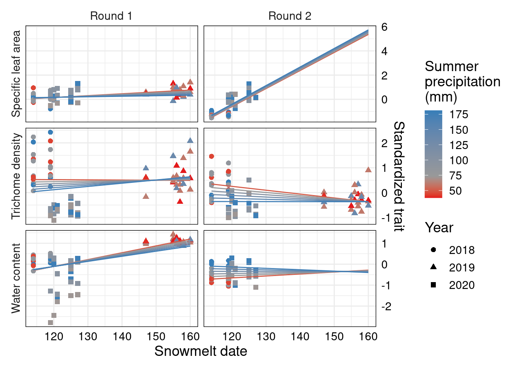
pt.mod.abs.rm <- map(set_names(phystraits),
~ lmer(pt[[.x]] ~ sun_date * precip_est_mm + (1|plot) + (1|plotid) + (1|plantid) + (1|round), data=pt))
pt.mod.abs.rm.coefs <- map_dfr(pt.mod.abs.rm, tidy, .id="trait")
pt.mod.abs.rm.tests <- map(pt.mod.abs.rm, anova, ddf="Ken") %>% map_dfr(tidy, .id="trait")
anova_table(pt.mod.abs.rm.tests, pt.mod.abs.rm) %>% kable()| trait | sun_date | precip_est_mm | sun_date:precip_est_mm | R2m | singular |
|---|---|---|---|---|---|
| photosynthesis | 0.0053 | 0.0988 | 0.1550 | 0.0820 | TRUE |
| conductance | 0.0003 | 0.0240 | 0.0819 | 0.2280 | TRUE |
| WUE | 0.0023 | 0.0095 | 0.0544 | 0.2033 | TRUE |
plot_abs(pt.mod.abs.rm, pt.subplot, phystraits)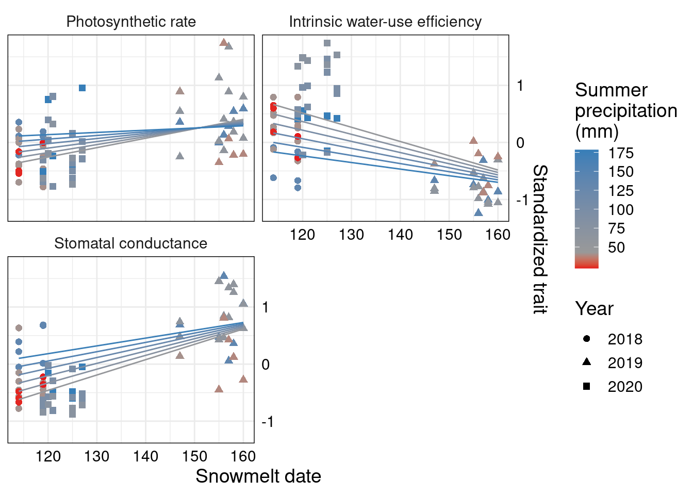
Lagged effects of snowmelt
mnps.plantyr <- mnps.plantyr %>% left_join(meltdates %>% select(year, plot, sun_date_lag=sun_date) %>%
bind_rows(groundcover %>% select(year, sun_date_lag=first_0_cm_day) %>% filter(year == 2017) %>%
mutate(year=as.factor(year)) %>% left_join(tibble(year="2017", plot=as.character(1:6))))%>%
mutate(year = as.character(as.integer(as.character(year)) + 1)))
mod.abs.lag <- c(map(set_names(traits),
~ lmer(mnps.plantyr[[.x]] ~ sun_date_lag * precip_est_mm + (1|plot) + (1|plotid), data=mnps.plantyr)))
mod.abs.lag.tests <- map(mod.abs.lag, anova, ddf="Ken") %>% map_dfr(tidy, .id="trait")
anova_table(mod.abs.lag.tests, mod.abs.lag) %>% kable()| trait | sun_date_lag | precip_est_mm | sun_date_lag:precip_est_mm | R2m | singular |
|---|---|---|---|---|---|
| corolla_length | 0.0000 | 0.1161 | 0.0039 | 0.2286 | FALSE |
| style_length | 0.0000 | 0.2544 | 0.0598 | 0.1444 | FALSE |
| corolla_width | 0.0000 | 0.0137 | 0.0003 | 0.2209 | TRUE |
| sepal_width | 0.0109 | 0.0062 | 0.0013 | 0.0717 | FALSE |
| nectar_24_h_ul | 0.0209 | 0.8780 | 0.4918 | 0.1216 | FALSE |
| nectar_conc | 0.0000 | 0.3696 | 0.0541 | 0.2786 | FALSE |
| nectar_sugar_24_h_mg | 0.1965 | 0.7948 | 0.9542 | 0.0577 | TRUE |
| height_cm | 0.0000 | 0.4583 | 0.2677 | 0.1964 | FALSE |
| open | 0.0000 | 0.7585 | 0.0954 | 0.3250 | TRUE |
| seeds_per_fruit | 0.0056 | 0.5285 | 0.4692 | 0.0482 | TRUE |
| seeds_est | 0.0018 | 0.5780 | 0.4842 | 0.0638 | TRUE |
| fruits_nonaborted | 0.0281 | 0.7714 | 0.5293 | 0.0312 | TRUE |
| flowers_est | 0.5539 | 0.9485 | 0.8502 | 0.0032 | TRUE |
| prop_infested | 0.2626 | 0.7862 | 0.6474 | 0.0083 | TRUE |
| prop_aborted | 0.0113 | 0.2928 | 0.1819 | 0.0240 | FALSE |
| seeds_per_flower | 0.0002 | 0.1504 | 0.1147 | 0.0572 | FALSE |
ggplot(mnps.plantyr %>% distinct(year, sun_date, sun_date_lag), aes(x=sun_date, y=sun_date_lag, color=year)) + geom_point()
ggplot(mnps.plantyr, aes(x=sun_date_lag, y=flowers_est, color=year)) + geom_point() + geom_smooth(method="lm") + scale_color_manual(values=year_pal) + theme_minimal() + labs(x="Melt date the previous year", y=traitnames["flowers_est"], color="Year")
Plasticity: soil moisture
Both snowmelt timing and summer precipitation affect soil moisture and its timing. This analysis regresses the floral traits against the mean soil moisture in a subplot. Slopes may differ among years. The models use:
- mt.plantyr, the trait data averaged by plant within year
- VWC, the summer mean of the approximately weekly mean volumetric water content in a subplot. This may need to change to a subset of the summer because it includes soil moisture taken after traits were measured. See section on within-season variation for timing of measurements in each year.
- plotid (subplot) as a random effect (plants vary within this larger unit)
The models are specified as:
lmer(trait ~ year * VWC + (1|plotid), data = mt.plantyr)ANOVAs
lt.subplot.r2 <- lt.subplotround %>% filter(round=="2")
lt.plantyr.r2 <- lt.plantyr %>% filter(round=="2")
pt.plantyr <- pt.plantyr %>% mutate(VWC = ifelse(is.na(VWC.plant), VWC.sm, VWC.plant)) #phys traits had the VWC measured next to the plant in 2019 and 2020 only - substitute VWC in subplot on closest date
pt <- pt %>% mutate(VWC = ifelse(is.na(VWC.plant), VWC.sm, VWC.plant))
options(contrasts = c("contr.sum", "contr.poly"))
mod.sm <- c(map(set_names(traits),
~ lmer(mnps.plantyr[[.x]] ~ year * VWC + (1|plotid), data=mnps.plantyr)),
map(set_names(leaftraits),
~ lmer(lt.plantyr.r2[[.x]] ~ year * VWC + (1|plotid), data=lt.plantyr.r2)),
map(set_names(phystraits[1:2]),
~ lmer(pt.plantyr[[.x]] ~ year * VWC + I(VWC^2) + (1|plotid) + (1|round), data=pt.plantyr)),
map(set_names(phystraits[3]),
~ lmer(pt.plantyr[[.x]] ~ year * VWC + (1|plotid) + (1|round), data=pt.plantyr)))
#significant effect of quadratic term for sepal_width, photosynthesis, conductance, but not year * VWC^2
mod.sm.coefs <- map_dfr(mod.sm, tidy, .id="trait")
mod.sm.tests <- map(mod.sm, anova, ddf="Ken") %>% map_dfr(tidy, .id="trait")
anova_table(mod.sm.tests, mod.sm) %>% kable()| trait | year | VWC | year:VWC | I(VWC^2) | R2m | singular |
|---|---|---|---|---|---|---|
| corolla_length | 0.0066 | 0.0129 | 0.4492 | NA | 0.2069 | FALSE |
| style_length | 0.1929 | 0.0021 | 0.8117 | NA | 0.1767 | FALSE |
| corolla_width | 0.0043 | 0.0002 | 0.0460 | NA | 0.2872 | TRUE |
| sepal_width | 0.0077 | 0.0104 | 0.0034 | NA | 0.0749 | FALSE |
| nectar_24_h_ul | 0.2627 | 0.0001 | 0.1098 | NA | 0.1591 | FALSE |
| nectar_conc | 0.0002 | 0.0106 | 0.3203 | NA | 0.2835 | FALSE |
| nectar_sugar_24_h_mg | 0.0038 | 0.0059 | 0.0284 | NA | 0.1004 | TRUE |
| height_cm | 0.5134 | 0.0808 | 0.1761 | NA | 0.2177 | FALSE |
| open | 0.0007 | 0.6597 | 0.9300 | NA | 0.2474 | FALSE |
| seeds_per_fruit | 0.7177 | 0.9780 | 0.7982 | NA | 0.0619 | TRUE |
| seeds_est | 0.8211 | 0.2519 | 0.2524 | NA | 0.0777 | FALSE |
| fruits_nonaborted | 0.8077 | 0.1517 | 0.2981 | NA | 0.0369 | FALSE |
| flowers_est | 0.7283 | 0.0802 | 0.7515 | NA | 0.0105 | FALSE |
| prop_infested | 0.3490 | 0.9551 | 0.9338 | NA | 0.0380 | TRUE |
| prop_aborted | 0.3996 | 0.6948 | 0.8128 | NA | 0.0500 | FALSE |
| seeds_per_flower | 0.8242 | 0.6419 | 0.6866 | NA | 0.0756 | TRUE |
| sla | 0.0116 | 0.1658 | 0.3953 | NA | 0.5847 | FALSE |
| trichome_density | 0.0001 | 0.9058 | 0.0330 | NA | 0.1950 | FALSE |
| water_content | 0.1778 | 0.0001 | 0.0829 | NA | 0.1835 | FALSE |
| photosynthesis | 0.4488 | 0.0002 | 0.6687 | 0.0055 | 0.1497 | FALSE |
| conductance | 0.0009 | 0.0001 | 0.0219 | 0.0389 | 0.3858 | FALSE |
| WUE | 0.0000 | 0.0000 | 0.0030 | NA | 0.4346 | FALSE |
re_table(mod.sm.coefs) %>% kable()| trait | plotid | Residual | round |
|---|---|---|---|
| corolla_length | 0.4929 | 2.5833 | NA |
| style_length | 0.3732 | 2.6382 | NA |
| corolla_width | 0.0000 | 0.3812 | NA |
| sepal_width | 0.0208 | 0.2270 | NA |
| nectar_24_h_ul | 0.1242 | 1.0222 | NA |
| nectar_conc | 1.4410 | 4.9796 | NA |
| nectar_sugar_24_h_mg | 0.0000 | 0.2950 | NA |
| height_cm | 1.8327 | 8.9983 | NA |
| open | 0.5006 | 3.4237 | NA |
| seeds_per_fruit | 0.0000 | 3.3640 | NA |
| seeds_est | 14.3168 | 104.9955 | NA |
| fruits_nonaborted | 6.1586 | 25.0780 | NA |
| flowers_est | 6.6424 | 32.3485 | NA |
| prop_infested | 0.0000 | 0.2243 | NA |
| prop_aborted | 0.0407 | 0.2736 | NA |
| seeds_per_flower | 0.0000 | 1.6873 | NA |
| sla | 4.0462 | 21.2700 | NA |
| trichome_density | 21.3982 | 57.5287 | NA |
| water_content | 0.0096 | 0.0411 | NA |
| photosynthesis | 0.1422 | 11.4787 | 3.0631 |
| conductance | 0.0215 | 0.1657 | 0.0604 |
| WUE | 8.8271 | 41.5582 | 14.5626 |
Plots
mod.sm.emm <- map_dfr(mod.sm, ~ summary(emtrends(.x, ~ year, var = "VWC")), .id="trait") %>%
mutate(trait.SD = alltraits.sd[trait], VWC.trend.SD = VWC.trend/trait.SD, SE.SD = SE/trait.SD, .after="VWC.trend")
#mod.sm.emm.allyears <- map_dfr(mod.sm, ~ summary(emtrends(.x, ~ 1 , var = "VWC")), .id="trait") %>%
# mutate(trait.SD = alltraits.sd[trait], VWC.trend.SD = VWC.trend/trait.SD, SE.SD = SE/trait.SD, .after="VWC.trend")
#library(googlesheets4)
#bind_rows(mod.sm.emm, mod.sm.emm.allyears %>% rename(year=`1`)) %>%
# mutate(predictor="VWC", .before=1) %>% mutate(traitname=traitnames[trait], .before="trait") %>%
# write_sheet(ss=filter(datasheets, name=="Maxfield Results"), sheet="slopes_VWC")
# left_join(mod.sm.emm, mnps.subplot %>% group_by(year) %>% select(traits) %>%
# summarize(across(traits, ~ sum(!is.na(.x)))) %>%
# pivot_longer(traits, names_to="trait", values_to="n"))
mod.sm.emm %>% #filter(trait %in% floraltraits) %>%
ggplot(aes(x=fct_relevel(trait, rev(alltraits)), y=VWC.trend.SD, color=year)) +
geom_hline(yintercept=0) + geom_pointrange(aes(ymin=VWC.trend.SD - SE.SD, ymax = VWC.trend.SD + SE.SD), position=position_dodge(width=0.3), size=0.4) +
labs(y="Slope of standardized trait vs. mean annual soil moisture", x="Trait", color="Year") +
theme_classic() + scale_x_discrete(labels = traitnames) + coord_flip() + scale_color_manual(values=year_pal)
plot_sm <- function(mod, data, traits.plot) {
data.long <- data %>% select(all_of(traits.plot), water, snow, year, sun_date, precip_est_mm, VWC) %>%
pivot_longer(all_of(traits.plot), names_to="trait") %>%
mutate(trait = fct_relevel(trait, traits.plot), snow=fct_relevel(snow, "Normal"),
value = (value - alltraits.mean[as.character(trait)])/alltraits.sd[as.character(trait)]) %>%
drop_na(value, water) %>% filter(trait %in% traits.plot)
VWC.range <- range(data$VWC, na.rm=T)
emm.grid <- mod[traits.plot] %>%
map_dfr(~ emmeans(.x, ~ year*VWC, at=list(VWC=seq(from=floor(VWC.range[1]*10)/10, to=ceiling(VWC.range[2]*10)/10, by=0.1))) %>% as_tibble(), .id="trait") %>%
mutate(trait = fct_relevel(trait, traits.plot),
emmean = (emmean - alltraits.mean[as.character(trait)])/alltraits.sd[as.character(trait)]) %>%
left_join(data %>% drop_na(VWC) %>% group_by(year) %>% summarize(VWC.min = min(VWC), VWC.max=max(VWC))) %>%
group_by(year) %>% filter(VWC >= VWC.min-0.1, VWC <= VWC.max+0.1)
traitnames.multiline <- ifelse(nchar(traitnames) > 30, str_replace(traitnames, fixed("("),"\n("), traitnames)
sm_plot <- ggplot(emm.grid, aes(x=VWC, y=emmean, color=year, group=year)) +
facet_wrap(vars(trait), scales="fixed", dir="v", ncol=ifelse(length(traits.plot)>3,2,4), labeller = as_labeller(traitnames.multiline))+
geom_point(data = data.long, aes(y=value, color=year), size=1) +
geom_line(size=2) +
scale_color_manual(values=year_pal) + ylab("Standardized trait") + labs(color="Year") +
#coord_fixed() +
theme_minimal() + theme(text=element_text(color="black", size=14), axis.text = element_text(color="black"),
panel.border = element_rect(fill=NA, colour = "black"))
return(sm_plot)
}
plot_sm(mod.sm, mnps.plantyr, floraltraits) +
scale_y_continuous(limits=c(-4.3,5)) + xlab("Summer mean of soil moisture in subplot (%VWC)")
ggsave("images/multi_sm-1.eps", height=10, width=6, device=cairo_ps)plot_sm(mod.sm, lt.plantyr.r2, leaftraits) + xlab("Summer mean of soil moisture in subplot (%VWC)")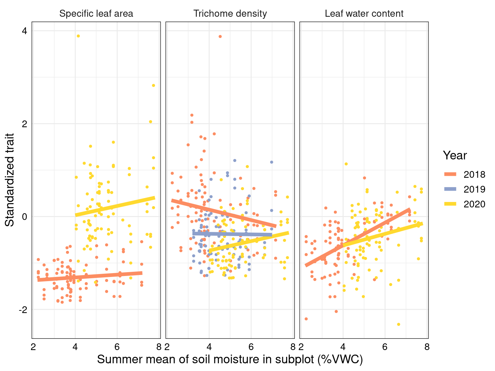
plot_sm(mod.sm, pt.plantyr, phystraits) + xlab("Soil moisture next to plant or in subplot on closest date (%VWC)")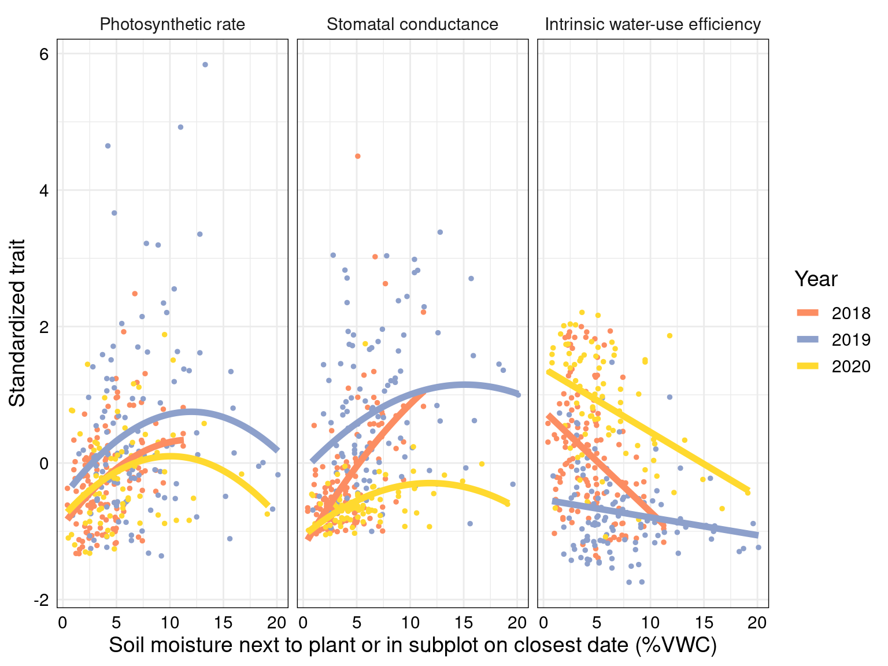
Soil moisture repeated measures
options(contrasts = c("contr.sum", "contr.poly"))
lt.mod.sm.rm <- map(set_names(leaftraits), ~ lmer(lt.plantyr[[.x]] ~ year * VWC + (1|plotid) + (1|plantid),
data=lt.plantyr %>% mutate(VWC=VWC.sm, year=year.round)))
plot_sm(lt.mod.sm.rm, lt.plantyr %>% mutate(VWC=VWC.sm, year=year.round), leaftraits) +
scale_color_manual(values=year.round_pal)+
geom_smooth(aes(group=1), color="black", se=F) + scale_y_continuous(breaks = -5:5) +
labs(color="Year, round") + xlab("Soil moisture in subplot on closest date (%VWC)") 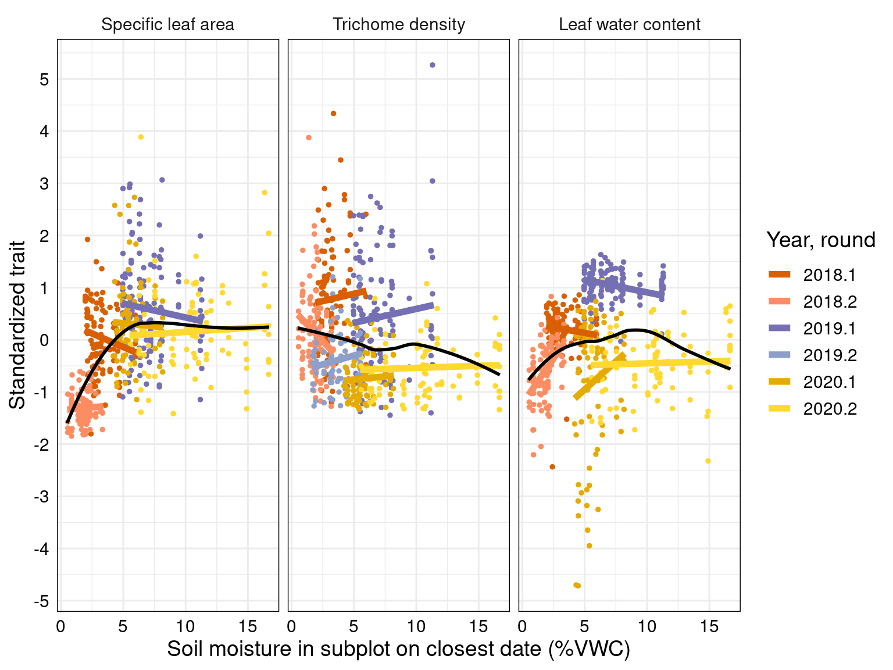
lt.mod.sm.rm <- map(set_names(leaftraits), ~ lmer(lt.plantyr[[.x]] ~ year * round * VWC + (1|plotid) + (1|plantid),
data=lt.plantyr %>% mutate(VWC=VWC.sm)))
lt.mod.sm.rm.coefs <- map_dfr(lt.mod.sm.rm , tidy, .id="trait")
lt.mod.sm.rm.tests <- map(lt.mod.sm.rm, anova, ddf="Ken") %>% map_dfr(tidy, .id="trait")
anova_table(lt.mod.sm.rm.tests, lt.mod.sm.rm) %>% kable()| trait | year | round | VWC | year:round | year:VWC | round:VWC | year:round:VWC | R2m | singular |
|---|---|---|---|---|---|---|---|---|---|
| sla | 6e-03 | 0.0003 | 0.4780 | 0.0295 | 0.8890 | 0.2671 | 0.5601 | 0.4489 | FALSE |
| trichome_density | 2e-04 | 0.5720 | 0.8396 | 0.2292 | 0.1913 | 0.0879 | 0.1091 | 0.2951 | FALSE |
| water_content | 0e+00 | 0.9014 | 0.0055 | 0.0000 | 0.0763 | 0.2121 | 0.0000 | 0.5377 | TRUE |
re_table(lt.mod.sm.rm.coefs) %>% kable()| trait | plantid | plotid | Residual |
|---|---|---|---|
| sla | 10.77 | 1.6569 | 23.1732 |
| trichome_density | 41.61 | 9.6792 | 67.1058 |
| water_content | 0.00 | 0.0146 | 0.0522 |
Multivariate models
Multivariate response
mt.morph <- mt[,c("corolla_length", "corolla_width","style_length","anther_max","anther_min","year","VWC")] %>% drop_na(1:5) #drop sepal_width
mt.pca <- prcomp(mt.morph[,-(6:7)], scale.=TRUE)
mt.morph.pca <- mt.morph %>%
bind_cols(as.data.frame(mt.pca$x)) %>%
tibble::rowid_to_column("index") %>%
mutate(x_0=0,y_0=0,
x_1=-corolla_width/2,y_1=corolla_length,
x_2= corolla_width/2,y_2=corolla_length) %>%
pivot_longer(c(starts_with("x"),starts_with("y")), names_to=c(".value", "point"), names_sep="_")
scl <- 100
zoom <- 5.5
mt.pca.vars <- as.data.frame(mt.pca$rotation) %>% rownames_to_column("variable")
mt.pca.labs <- paste0("PC", 1:2, " (", round(100*mt.pca$sdev[1:2]^2/sum(mt.pca$sdev^2), 0), "% explained var.)")
ggplot(mt.morph.pca) + theme_classic() +
geom_polygon(aes(x= x/scl+PC1, y= y/scl+PC2, group=index, color=VWC, fill=VWC)) +
#geom_point(aes(x=PC1, y=PC2, size=sepal_width/2), color="darkgreen") +
geom_point(aes(x=PC1, y=PC2 + anther_min/scl), color="yellow", size=0.3) +
geom_point(aes(x=PC1, y=PC2 + anther_max/scl), color="yellow", size=0.3) +
geom_point(aes(x=PC1, y=PC2 + style_length/scl), color="grey60", size=0.5, shape=4) +
geom_segment(data=mt.pca.vars,aes(x=0, y=0, xend=PC1*zoom, yend=PC2*zoom),
arrow = arrow(length = unit(1/2, "picas")), color="black") +
geom_text(data =mt.pca.vars, aes(label = gsub("_"," ",variable), x = PC1*zoom*1.4, y = PC2*zoom*1.4,
angle = (180/pi) * atan(PC2/PC1), hjust = 0), color="black")+
scale_size_identity() + coord_fixed() +
scale_fill_viridis(direction=-1, option="plasma") + scale_color_viridis(direction=-1, option="plasma") +
labs(x=mt.pca.labs[1], y=mt.pca.labs[2])
ggsave("images/mt_morph_pca_noSW.pdf", height=15, width=20, device=cairo_pdf)
ggplot(mt, aes(x=corolla_length, y=corolla_width, color=VWC)) + scale_color_viridis(direction=-1, option="plasma") + geom_point() + theme_minimal() + geom_smooth()
ggplot(mt, aes(x=corolla_length, y=style_length, color=VWC)) + scale_color_viridis(direction=-1, option="plasma") + geom_point() + theme_minimal() + geom_abline(slope=1, intercept=0)
ggplot(mt, aes(y=style_length / corolla_length, x=VWC, color=VWC)) + scale_color_viridis(direction=-1, option="plasma") + geom_point() + theme_minimal() + geom_abline(slope=0, intercept=1)+ geom_smooth()
ggplot(mt, aes(x=corolla_length, ymax = anther_max, ymin=anther_min, color=VWC)) + scale_color_viridis(direction=-1, option="plasma") + geom_linerange() + theme_minimal()+ geom_abline(slope=1, intercept=0)
ggplot(mt, aes(y=anther_min / corolla_length, x=VWC, color=VWC)) + scale_color_viridis(direction=-1, option="plasma") + geom_point() + theme_minimal() + geom_smooth()
mt.morph.plantyr <- mt.plantyr[,c("corolla_length", "corolla_width","style_length","anther_max","anther_min","year","VWC")] %>% drop_na()
options(contrasts = c("contr.treatment", "contr.poly"))
mt.rda <- rda(scale(select(mt.morph.plantyr, !c(year, VWC))) ~ VWC * year, data=mt.morph.plantyr)
mt.rdaCall: rda(formula = scale(select(mt.morph.plantyr, !c(year, VWC))) ~
VWC * year, data = mt.morph.plantyr)
Inertia Proportion Rank
Total 5.000 1.000
Constrained 1.221 0.244 5
Unconstrained 3.779 0.756 5
Inertia is variance
Eigenvalues for constrained axes:
RDA1 RDA2 RDA3 RDA4 RDA5
1.150 0.058 0.010 0.003 0.000
Eigenvalues for unconstrained axes:
PC1 PC2 PC3 PC4 PC5
2.495 0.671 0.400 0.121 0.092 anova(mt.rda, by="term") %>% tidy %>% kable()| term | df | Variance | statistic | p.value |
|---|---|---|---|---|
| VWC | 1 | 0.5693 | 67.1953 | 0.001 |
| year | 2 | 0.6352 | 37.4878 | 0.001 |
| VWC:year | 2 | 0.0169 | 0.9945 | 0.389 |
| Residual | 446 | 3.7786 | NA | NA |
#autoplot(mt.rda)
mt.rda.df <- fortify(update(mt.rda, ~ VWC + year))#drop interaction
ggplot(mapping=aes(x=RDA1, y=RDA2, label=Label)) +
geom_point(data=mt.rda.df %>% filter(Score=="sites") %>% bind_cols(mt.morph.plantyr), aes(color=VWC))+
geom_segment(data=mt.rda.df %>% filter(Label=="VWC"), aes(x=0,y=0,xend=RDA1*3, yend=RDA2*3),
arrow=arrow(length=unit(0.5, "lines")), size=1.5)+
geom_text( data=mt.rda.df %>% filter(Label=="VWC"), aes(x=RDA1*3.7, y=RDA2*3.7, angle=atan(RDA2/RDA1)*180/pi), label="Soil moisture")+
geom_segment(data=mt.rda.df %>% filter(Score=="species"), aes(x=0,y=0,xend=RDA1, yend=RDA2),
arrow=arrow(length=unit(0.5, "lines")))+
geom_text( data=mt.rda.df %>% filter(Score=="species"), aes(x=RDA1*1.7, y=RDA2*1.7, angle=atan(RDA2/RDA1)*180/pi,
label = c(traitnames, c("anther_max"="Max stamen length", "anther_min"="Min stamen length"))[as.character(Label)] %>% str_remove(fixed(" (mm)"))), size=3)+
geom_text(data=mt.rda.df %>% filter(Score=="centroids"), aes(label=str_remove(Label, "year")), fontface=2, size=6)+
scale_color_viridis("Soil\nmoisture\n(%VWC)", direction=-1, option="plasma") + coord_fixed() +
scale_x_continuous(expand=expansion(mult=.16), breaks=c(-2,0,2))+ theme_minimal() +
theme(panel.grid.minor=element_blank(), text=element_text(color="black", size=14), axis.text = element_text(color="black"),
panel.border = element_rect(fill=NA, colour = "black"))
mt.morph.wm <- mt[,c("corolla_length", "corolla_width","style_length","anther_max","anther_min","year","precip_est_mm", "sun_date")] %>% drop_na(1:6) #and nectar (19,20) too
mt.cap.wm <- capscale(scale(mt.morph.wm[,-(6:8)]) ~ precip_est_mm * sun_date, data=mt.morph.wm)
mt.cap.wmCall: capscale(formula = scale(mt.morph.wm[, -(6:8)]) ~ precip_est_mm *
sun_date, data = mt.morph.wm)
Inertia Proportion Rank
Total 5.000 1.000
Constrained 0.877 0.175 3
Unconstrained 4.123 0.825 5
Inertia is mean squared Euclidean distance
Species scores projected from 'scale' 'mt.morph.wm[, -(6:8)]'
Eigenvalues for constrained axes:
CAP1 CAP2 CAP3
0.850 0.025 0.002
Eigenvalues for unconstrained axes:
MDS1 MDS2 MDS3 MDS4 MDS5
2.761 0.708 0.418 0.140 0.095 anova(mt.cap.wm, by="term") %>% tidy %>% kable| term | df | Variance | statistic | p.value |
|---|---|---|---|---|
| precip_est_mm | 1 | 0.3914 | 90.269 | 0.001 |
| sun_date | 1 | 0.4711 | 108.650 | 0.001 |
| precip_est_mm:sun_date | 1 | 0.0142 | 3.267 | 0.041 |
| Residual | 951 | 4.1234 | NA | NA |
#plot CAP without interactions
autoplot(capscale(scale(mt.morph.wm[,-(6:8)]) ~ precip_est_mm + sun_date, data=mt.morph.wm)) + guides(color=F, shape=F)
Mortality/flowering/RGR selection
Selection vs. treatments
lt.plantyr.r2 <- lt.plantyr %>% filter(round=="2")
step_selection_mod <- function(trait, response, treatment, set, test_year = TRUE, level=0.05) {
family <- ifelse(response=="RGR", "gaussian", "binomial")
re <- ifelse(treatment =="snow", "snow:plot", "plot")
t.plantyr <- list(lt = lt.plantyr.r2, pt = pt.plantyr)[[set]] %>%
rename("trait"=trait)
options(contrasts = c("contr.sum", "contr.poly"))
if(test_year) {
mod <- glmmTMB(formula(paste(response, "~ trait * year * ", treatment," + (1|",re,")")),
data=t.plantyr, family=family)
droporder <- c(paste0("trait:year:", treatment),
paste0("trait:", treatment),
paste0("year:", treatment),
paste0("trait:year"))
} else {
mod <- glmmTMB(formula(paste(response, "~ trait * ", treatment," + (1|",re,")")),
data=t.plantyr, family=family)
droporder <- paste0("trait:", treatment)
}
for(term_test in droporder) {
pval <- car::Anova(mod) %>% tidy %>% filter(term==term_test) %>% pull(p.value)
if(pval < level) return(mod)
else mod <- update(mod, formula(paste0(". ~ . -", term_test)))
}
return(mod)
}
selection.combos <- expand.grid(list(response = c("survived","flowered","RGR"), treatment=c("water","snow"), set = c("lt", "pt"))) %>% as_tibble()
mod.selection <- selection.combos %>%
full_join(tibble(trait=c(leaftraits, phystraits),
set = c(rep("lt", length(leaftraits)), rep("pt", length(phystraits))))) %>%
mutate(test_year=!(trait %in% c("sla", "water_content"))) %>% #turn off with 2021 census data
mutate(model = pmap(., step_selection_mod),
coefs = map(model, tidy),
tests = map(model, ~ tidy(car::Anova(.x, type=3))))mod.selection %>% group_by(response, treatment) %>%
group_walk(function(.x,.y) {cat(paste("Effect of trait on whether a plant",ifelse(.y$response=="RGR", "grew faster", as.character(.y$response)),
"under different",.y$treatment,"conditions"));
Anova_table(.x %>% unnest(tests)) %>% kable() %>% print})Effect of trait on whether a plant survived under different water conditions
| Trait | (Intercept) | trait | water | year | trait:year | trait:water | year:water | trait:year:water |
|---|---|---|---|---|---|---|---|---|
| sla | 0.1995 | 0.4800 | 0.5797 | NA | NA | NA | NA | NA |
| trichome_density | 0.0033 | 0.7034 | 0.7707 | 0.2939 | NA | NA | NA | NA |
| water_content | 0.3299 | 0.4956 | 0.5338 | NA | NA | NA | NA | NA |
| photosynthesis | 0.0000 | 0.1867 | 0.9343 | 0.4054 | NA | NA | NA | NA |
| conductance | 0.0001 | 0.7168 | 0.0500 | 0.8805 | 0.7664 | 0.0194 | 0.6344 | NA |
| WUE | 0.0079 | 0.8030 | 0.4847 | 0.0251 | 0.0397 | 0.3023 | 0.0824 | 0.0444 |
Effect of trait on whether a plant survived under different snow conditions
| Trait | (Intercept) | trait | snow | year |
|---|---|---|---|---|
| sla | 0.2814 | 0.6232 | 0.4662 | NA |
| trichome_density | 0.0033 | 0.7372 | 0.8000 | 0.3131 |
| water_content | 0.5338 | 0.7927 | 0.4585 | NA |
| photosynthesis | 0.0000 | 0.1792 | 0.4288 | 0.4975 |
| conductance | 0.0000 | 0.3166 | 0.3430 | 0.9864 |
| WUE | 0.0002 | 0.8976 | 0.4259 | 0.7466 |
Effect of trait on whether a plant flowered under different water conditions
| Trait | (Intercept) | trait | water | year | trait:year |
|---|---|---|---|---|---|
| sla | 0.6685 | 0.4162 | 0.3288 | NA | NA |
| trichome_density | 0.0143 | 0.2315 | 0.0847 | 0.0265 | NA |
| water_content | 0.2216 | 0.1556 | 0.4634 | NA | NA |
| photosynthesis | 0.3952 | 0.4928 | 0.2565 | 0.0003 | NA |
| conductance | 0.0215 | 0.2346 | 0.2970 | 0.0071 | NA |
| WUE | 0.8583 | 0.1181 | 0.1532 | 0.0008 | 0.02 |
Effect of trait on whether a plant flowered under different snow conditions
| Trait | (Intercept) | trait | snow | year | trait:year |
|---|---|---|---|---|---|
| sla | 0.8476 | 0.5329 | 0.9143 | NA | NA |
| trichome_density | 0.0071 | 0.2494 | 0.5682 | 0.0258 | NA |
| water_content | 0.1959 | 0.1202 | 0.7616 | NA | NA |
| photosynthesis | 0.2178 | 0.5175 | 0.7251 | 0.0008 | NA |
| conductance | 0.0069 | 0.2305 | 0.6669 | 0.0127 | NA |
| WUE | 0.6616 | 0.1207 | 0.8199 | 0.0022 | 0.0393 |
Effect of trait on whether a plant grew faster under different water conditions
| Trait | (Intercept) | trait | water | year | trait:year | year:water |
|---|---|---|---|---|---|---|
| sla | 0.6736 | 0.9185 | 0.0001 | NA | NA | NA |
| trichome_density | 0.1237 | 0.1200 | 0.3593 | 0.3305 | 0.1515 | 1e-04 |
| water_content | 0.7906 | 0.9789 | 0.0013 | NA | NA | NA |
| photosynthesis | 0.3056 | 0.3318 | 0.0000 | 0.0347 | NA | NA |
| conductance | 0.0382 | 0.9440 | 0.0000 | 0.0802 | NA | NA |
| WUE | 0.1433 | 0.6425 | 0.0000 | 0.1227 | NA | NA |
Effect of trait on whether a plant grew faster under different snow conditions
| Trait | (Intercept) | trait | snow | year |
|---|---|---|---|---|
| sla | 0.7619 | 0.4508 | 0.4027 | NA |
| trichome_density | 0.1534 | 0.2658 | 0.7393 | 0.0000 |
| water_content | 0.0438 | 0.0200 | 0.2775 | NA |
| photosynthesis | 0.4911 | 0.0304 | 0.1555 | 0.0032 |
| conductance | 0.8545 | 0.0539 | 0.2330 | 0.0029 |
| WUE | 0.0548 | 0.3110 | 0.2697 | 0.0071 |
mod.selection %>% unnest(coefs) %>% filter(effect=="ran_pars") %>%
select(trait, group, estimate, response, treatment) %>%
pivot_wider(names_from=group, values_from=estimate) %>% kable()| trait | response | treatment | plot | Residual | snow:plot |
|---|---|---|---|---|---|
| sla | survived | water | 0.0000 | NA | NA |
| trichome_density | survived | water | 0.0000 | NA | NA |
| water_content | survived | water | 0.0000 | NA | NA |
| sla | flowered | water | 0.4643 | NA | NA |
| trichome_density | flowered | water | 0.3510 | NA | NA |
| water_content | flowered | water | 0.5541 | NA | NA |
| sla | RGR | water | 0.0000 | 1.087 | NA |
| trichome_density | RGR | water | 0.0000 | 1.019 | NA |
| water_content | RGR | water | 0.0000 | 1.087 | NA |
| sla | survived | snow | NA | NA | 0.0000 |
| trichome_density | survived | snow | NA | NA | 0.0000 |
| water_content | survived | snow | NA | NA | 0.0000 |
| sla | flowered | snow | NA | NA | 0.4627 |
| trichome_density | flowered | snow | NA | NA | 0.2878 |
| water_content | flowered | snow | NA | NA | 0.5354 |
| sla | RGR | snow | NA | 1.285 | 0.0000 |
| trichome_density | RGR | snow | NA | 1.203 | 0.0000 |
| water_content | RGR | snow | NA | 1.222 | 0.0010 |
| photosynthesis | survived | water | 0.0002 | NA | NA |
| conductance | survived | water | 0.0001 | NA | NA |
| WUE | survived | water | 0.0001 | NA | NA |
| photosynthesis | flowered | water | 0.2413 | NA | NA |
| conductance | flowered | water | 0.2362 | NA | NA |
| WUE | flowered | water | 0.2868 | NA | NA |
| photosynthesis | RGR | water | 0.0001 | 1.092 | NA |
| conductance | RGR | water | 0.0001 | 1.098 | NA |
| WUE | RGR | water | 0.0001 | 1.097 | NA |
| photosynthesis | survived | snow | NA | NA | 0.0001 |
| conductance | survived | snow | NA | NA | 0.0001 |
| WUE | survived | snow | NA | NA | 0.0001 |
| photosynthesis | flowered | snow | NA | NA | 0.2331 |
| conductance | flowered | snow | NA | NA | 0.2231 |
| WUE | flowered | snow | NA | NA | 0.2776 |
| photosynthesis | RGR | snow | NA | 1.236 | 0.0001 |
| conductance | RGR | snow | NA | 1.242 | 0.0001 |
| WUE | RGR | snow | NA | 1.262 | 0.0001 |
# plot_selection <- function(trait, response, treatment, set) {
# list(lt = lt.plantyr.r2, pt = pt.plantyr)[[set]] %>%
# ggplot(aes_string(y=response, x=trait, color=treatment, linetype="year")) +
# geom_point() + geom_smooth(se=F, method="glm", method.args = list(family=binomial)) +
# scale_color_manual(values=c(water_pal, snow_pal))
# }
# mod.selection <- mod.selection %>%
# mutate(plot = pmap((.) %>% select(trait, response, treatment, set), plot_selection))
# do.call(grid.arrange, mod.selection %>% filter(response=="flowered", treatment=="water") %>% pull(plot))
plot_selection_facets <- function(response, treatment, set) {
traits.plot <- list(lt=leaftraits, pt=phystraits)[[set]]
trait.data <- list(lt = lt.plantyr.r2, pt = pt.plantyr)[[set]] %>%
pivot_longer(all_of(traits.plot),names_to="trait") %>%
filter(year!="2020") %>% mutate(year=fct_drop(year))
p <- ggplot(trait.data, aes_string(y=response, x="value", color=treatment, linetype="year")) +
facet_wrap(vars(trait), scales="free_x", labeller = as_labeller(traitnames.units), strip.position = "bottom")+
geom_point() +
scale_color_manual(values=c(water_pal, snow_pal)) + theme(legend.position="top") +
labs(linetype="Year",x="",color=c(water="Precipitation",snow="Snowmelt")[treatment],
y=set_names( c("Flowering the next year", "Survival to the next year", "RGR (year\U207B\U00B9)"),c("flowered", "survived", "RGR"))[response]) +
theme_minimal() + theme(text=element_text(color="black"), axis.text = element_text(color="black"),
panel.border = element_rect(fill=NA, colour = "black"),
panel.spacing=unit(0, "pt"), plot.margin = margin(0,0,0,0, "pt"),
legend.position = "top", strip.placement = "outside")
if(set =="pt") {
p <- p + guides(linetype=F, color=F)
}
if(response =="RGR") {
p <- p + geom_smooth(se=F, method="lm")
} else {
p <- p + geom_smooth(se=F, method="glm", method.args = list(family=binomial))
}
return(p)
}
mod.selection.plots <- selection.combos %>% mutate(across(.fns=as.character)) %>% arrange(response) %>%
mutate(plots = pmap(., plot_selection_facets))
mod.selection.plots %>% group_by(response, treatment) %>% group_walk( ~ do.call(grid.arrange, .x$plots))


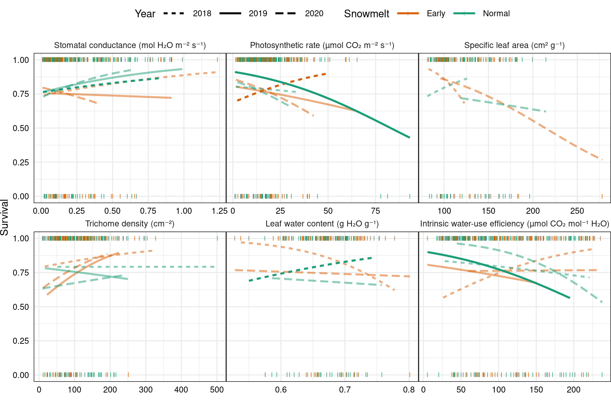
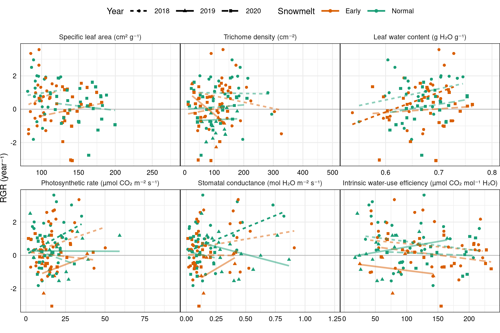
#TODO use the model results to make plots instead of geom_smoothSelection vs. absolute snowmelt, precip
pt.plantyr <- pt.plantyr %>% mutate(VWC = ifelse(is.na(VWC.plant), VWC.sm, VWC.plant)) #phys traits had the VWC measured next to the plant in 2019 and 2020 only - substitute VWC in subplot on closest date
selection_mod_abs <- function(trait, response, set) {
t.plantyr <- list(lt = lt.plantyr.r2, pt = pt.plantyr)[[set]] %>% rename("trait"=trait)
options(contrasts = c("contr.sum", "contr.poly"))
family = family <- ifelse(response=="RGR", "gaussian", "binomial")
glmmTMB(formula(paste(response, "~ trait * sun_date + trait * precip_est_mm + (1|plot)")), data=t.plantyr, family=family)
}
mod.selection.abs <- expand.grid(list(response = c("survived","flowered","RGR"), set = c("lt", "pt"))) %>% as_tibble() %>%
full_join(tibble(trait=c(leaftraits, phystraits),
set = c(rep("lt", length(leaftraits)), rep("pt", length(phystraits))))) %>%
mutate(model = pmap(., selection_mod_abs),
coefs = map(model, tidy),
tests = map(model, ~ tidy(car::Anova(.x, type=3))))
mod.selection.abs %>% group_by(response) %>%
group_walk(function(.x,.y) {cat(paste("Effect of trait on whether a plant",ifelse(.y$response=="RGR", "grew faster", as.character(.y$response)),
"under different absolute snowmelt / summer precip conditions"));
Anova_table(.x %>% unnest(tests)) %>% kable() %>% print})Effect of trait on whether a plant survived under different absolute snowmelt / summer precip conditions
| Trait | (Intercept) | trait | sun_date | precip_est_mm | trait:sun_date | trait:precip_est_mm |
|---|---|---|---|---|---|---|
| sla | 0.0000 | 0.0000 | 0.0000 | 1.0000 | 1.000 | 1.0000 |
| trichome_density | NaN | NaN | NaN | NaN | NaN | NaN |
| water_content | NaN | NaN | NaN | NaN | NaN | NaN |
| photosynthesis | NaN | NaN | NaN | NaN | NaN | NaN |
| conductance | 0.5401 | 0.6478 | 0.7128 | 0.1026 | 0.914 | 0.0766 |
| WUE | NaN | NaN | NaN | NaN | NaN | NaN |
Effect of trait on whether a plant flowered under different absolute snowmelt / summer precip conditions
| Trait | (Intercept) | trait | sun_date | precip_est_mm | trait:sun_date | trait:precip_est_mm |
|---|---|---|---|---|---|---|
| sla | 0.0000 | 0.0000 | 0.0000 | 1.0000 | 1.0000 | 1.0000 |
| trichome_density | 0.0047 | 0.0333 | 0.0170 | 1.0000 | 1.0000 | 1.0000 |
| water_content | 0.9865 | 0.9941 | 0.9640 | 0.4178 | 0.9394 | 0.3987 |
| photosynthesis | 0.0001 | 1.0000 | 0.0000 | 1.0000 | 1.0000 | 1.0000 |
| conductance | 0.1165 | 0.3071 | 0.2072 | 0.5175 | 0.3911 | 0.1497 |
| WUE | 0.0000 | 0.0000 | 0.0000 | 1.0000 | 1.0000 | 1.0000 |
Effect of trait on whether a plant grew faster under different absolute snowmelt / summer precip conditions
| Trait | (Intercept) | trait | sun_date | precip_est_mm | trait:sun_date | trait:precip_est_mm |
|---|---|---|---|---|---|---|
| sla | NaN | NaN | NaN | NaN | NaN | NaN |
| trichome_density | NaN | NaN | NaN | NaN | NaN | NaN |
| water_content | 0.4835 | 0.5204 | 0.4925 | 0.7913 | 0.5286 | 0.9525 |
| photosynthesis | NaN | NaN | NaN | NaN | NaN | NaN |
| conductance | 0.4112 | 0.6888 | 0.2484 | 0.0002 | 0.7822 | 0.4369 |
| WUE | 0.4326 | 0.9619 | 0.2884 | 0.0391 | 0.9325 | 0.4838 |
#sjPlot::plot_model((mod.selection.abs %>% filter(trait=="conductance", response=="flowered") %>% pull(model))[[1]])Selection vs. soil moisture
pt.plantyr <- pt.plantyr %>% mutate(VWC = ifelse(is.na(VWC.plant), VWC.sm, VWC.plant)) #phys traits had the VWC measured next to the plant in 2019 and 2020 only - substitute VWC in subplot on closest date
selection_mod_sm <- function(trait, response, set, test_year=TRUE) {
t.plantyr <- list(lt = lt.plantyr.r2, pt = pt.plantyr)[[set]] %>% rename("trait"=trait)
options(contrasts = c("contr.sum", "contr.poly"))
family = family <- ifelse(response=="RGR", "gaussian", "binomial")
if(test_year) glmmTMB(formula(paste(response, "~ trait * year * VWC + (1|plot)")), data=t.plantyr, family=family)
else glmmTMB(formula(paste(response, "~ trait * VWC + (1|plot)")), data=t.plantyr, family=family)
}
mod.selection.sm <- expand.grid(list(response = c("survived","flowered","RGR"), set = c("lt", "pt"))) %>% as_tibble() %>%
full_join(tibble(trait=c(leaftraits, phystraits),
set = c(rep("lt", length(leaftraits)), rep("pt", length(phystraits))))) %>%
mutate(test_year=!(trait %in% c("sla", "water_content"))) %>%
mutate(model = pmap(., selection_mod_sm),
coefs = map(model, tidy),
tests = map(model, ~ tidy(car::Anova(.x, type=3))))
mod.selection.sm %>% group_by(response) %>%
group_walk(function(.x,.y) {cat(paste("Effect of trait on whether a plant",ifelse(.y$response=="RGR", "grew faster", as.character(.y$response)),
"under different VWC conditions"));
Anova_table(.x %>% unnest(tests)) %>% kable() %>% print})Effect of trait on whether a plant survived under different VWC conditions
| Trait | (Intercept) | trait | VWC | trait:VWC | year | trait:year | year:VWC | trait:year:VWC |
|---|---|---|---|---|---|---|---|---|
| sla | 0.9805 | 0.9557 | 0.7660 | 0.8249 | NA | NA | NA | NA |
| trichome_density | 0.7948 | 0.9667 | 0.6935 | 0.8753 | 0.5139 | 0.6914 | 0.5762 | 0.6436 |
| water_content | NaN | NaN | NaN | NaN | NA | NA | NA | NA |
| photosynthesis | 0.0157 | 0.8770 | 0.7858 | 0.8871 | 0.7154 | 0.7738 | 0.6769 | 0.7753 |
| conductance | 0.0007 | 0.3316 | 0.0879 | 0.1394 | 0.9714 | 0.8252 | 0.6373 | 0.5962 |
| WUE | 0.6279 | 0.2558 | 0.1760 | 0.1216 | 0.2582 | 0.5001 | 0.5106 | 0.7979 |
Effect of trait on whether a plant flowered under different VWC conditions
| Trait | (Intercept) | trait | VWC | trait:VWC | year | trait:year | year:VWC | trait:year:VWC |
|---|---|---|---|---|---|---|---|---|
| sla | 0.9756 | 0.9218 | 0.9285 | 0.9348 | NA | NA | NA | NA |
| trichome_density | 0.9708 | 0.4593 | 0.5921 | 0.3656 | 0.7587 | 0.6613 | 0.9991 | 0.7630 |
| water_content | 0.2745 | 0.2138 | 0.5784 | 0.5227 | NA | NA | NA | NA |
| photosynthesis | 0.5572 | 0.5903 | 0.7757 | 0.5893 | 0.7856 | 0.5038 | 0.2282 | 0.4079 |
| conductance | 0.3975 | 0.6413 | 0.4349 | 0.3151 | 0.8889 | 0.6210 | 0.3040 | 0.5760 |
| WUE | 0.6889 | 0.7128 | 0.9907 | 0.8782 | 0.8679 | 0.8239 | 0.2038 | 0.2468 |
Effect of trait on whether a plant grew faster under different VWC conditions
| Trait | (Intercept) | trait | VWC | trait:VWC | year | trait:year | year:VWC | trait:year:VWC |
|---|---|---|---|---|---|---|---|---|
| sla | 0.3476 | 0.4589 | 0.3077 | 0.5358 | NA | NA | NA | NA |
| trichome_density | 0.5676 | 0.5900 | 0.8665 | 0.7351 | 0.1301 | 0.4922 | 0.0562 | 0.5697 |
| water_content | 0.9496 | 0.8604 | 0.8992 | 0.7413 | NA | NA | NA | NA |
| photosynthesis | 0.7641 | 0.6699 | 0.9958 | 0.4037 | 0.8193 | 0.5635 | 0.5847 | 0.8130 |
| conductance | 0.9773 | 0.7647 | 0.5673 | 0.6447 | 0.6084 | 0.8354 | 0.7188 | 0.4586 |
| WUE | 0.7108 | 0.7927 | 0.1146 | 0.9092 | 0.3187 | 0.1446 | 0.0304 | 0.0570 |
pt.plantyr %>%
pivot_longer(all_of(c("WUE")),names_to="trait") %>%
filter(year!="2020") %>% mutate(year=fct_drop(year)) %>%
ggplot(aes_string(y="survived", x="value", color="water", linetype="year")) +
geom_point() + geom_smooth(se=F, method="glm", method.args = list(family=binomial)) +
scale_linetype(guide=guide_legend(override.aes = list(color="black"))) +
scale_color_manual(values=c(water_pal, snow_pal)) + theme(legend.position="top") +
labs(linetype="Year",x=traitnames.units[["WUE"]],color="Precipitation", y="Survival") +
theme_minimal() + theme(text=element_text(color="black"), axis.text = element_text(color="black"),
panel.border = element_rect(fill=NA, colour = "black"),
panel.spacing=unit(8, "pt"), plot.margin = margin(0,0,0,0, "pt"),
legend.position = "right")
ggsave(filename="../surv_water_pt.png", width=4.5, height=2.5)
plot_abs(mod.abs, mnps.subplot, floraltraits[1:6]) + #Morphological traits - subplot means
scale_y_continuous(limits=c(-1.7, 2.8), breaks=c(-1:2))
ggsave(filename="../snow_precip_mt.png", width=7, height=4)RGR selection
lt.plantyr %>% left_join(cen.RGR.long) %>% select(all_of(c(leaftraits, "RGR")), year) %>%
pivot_longer(all_of(leaftraits), names_to="trait") %>%
ggplot(aes(x=value, y=RGR, color=year.round)) + facet_wrap(vars(trait), scales="free_x", labeller=as_labeller(traitnames)) +
geom_hline(yintercept=0) + geom_point() + geom_smooth(method="lm",se=F) +
labs(x="Trait", y="RGR (year\U207B\U00B9)", color="Year")+
theme_bw() + scale_color_manual(values=year.round_pal)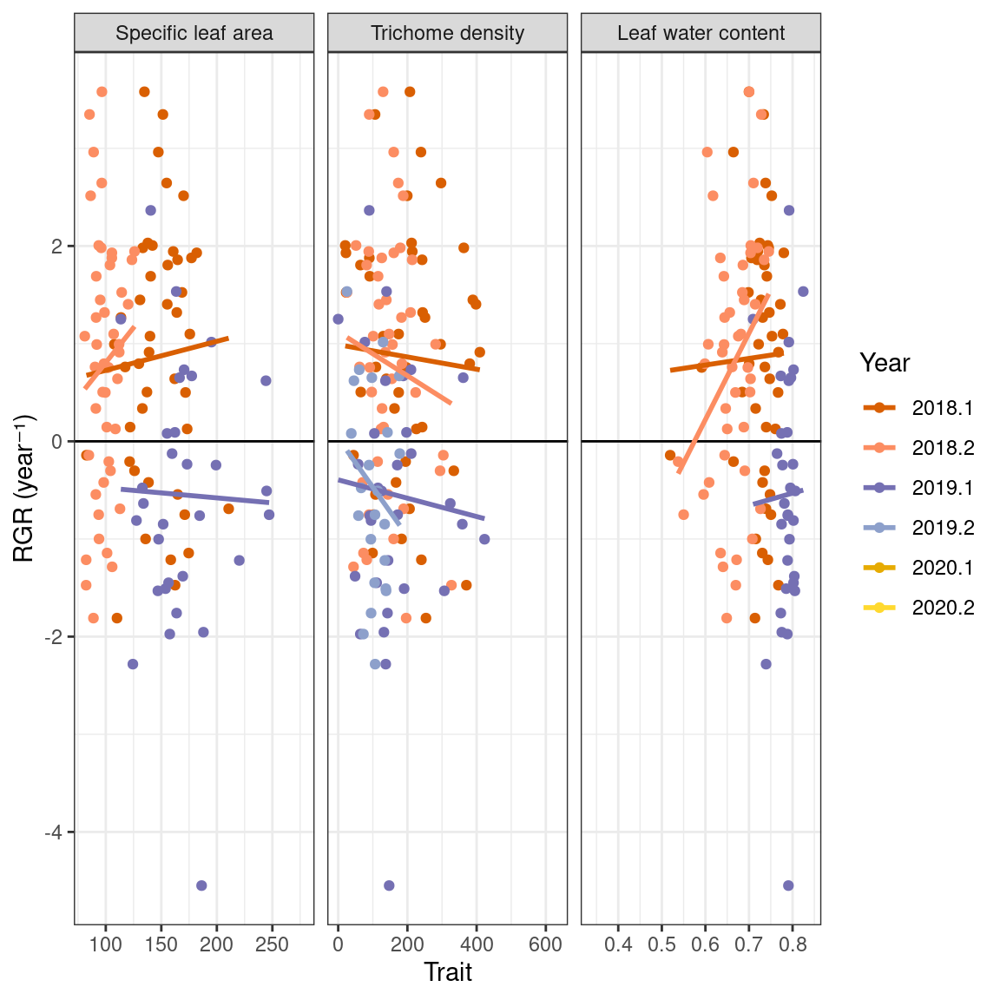
pt.plantyr %>% left_join(cen.RGR.long) %>% select(all_of(c(phystraits, "RGR")), year) %>%
pivot_longer(all_of(phystraits), names_to="trait") %>%
ggplot(aes(x=value, y=RGR, color=year)) + facet_wrap(vars(trait), scales="free_x", labeller=as_labeller(traitnames)) +
geom_hline(yintercept=0) + geom_point() + geom_smooth(method="lm",se=F) +
labs(x="Trait", y="RGR (year\U207B\U00B9)", color="Year")+
theme_bw() + scale_color_manual(values=year_pal)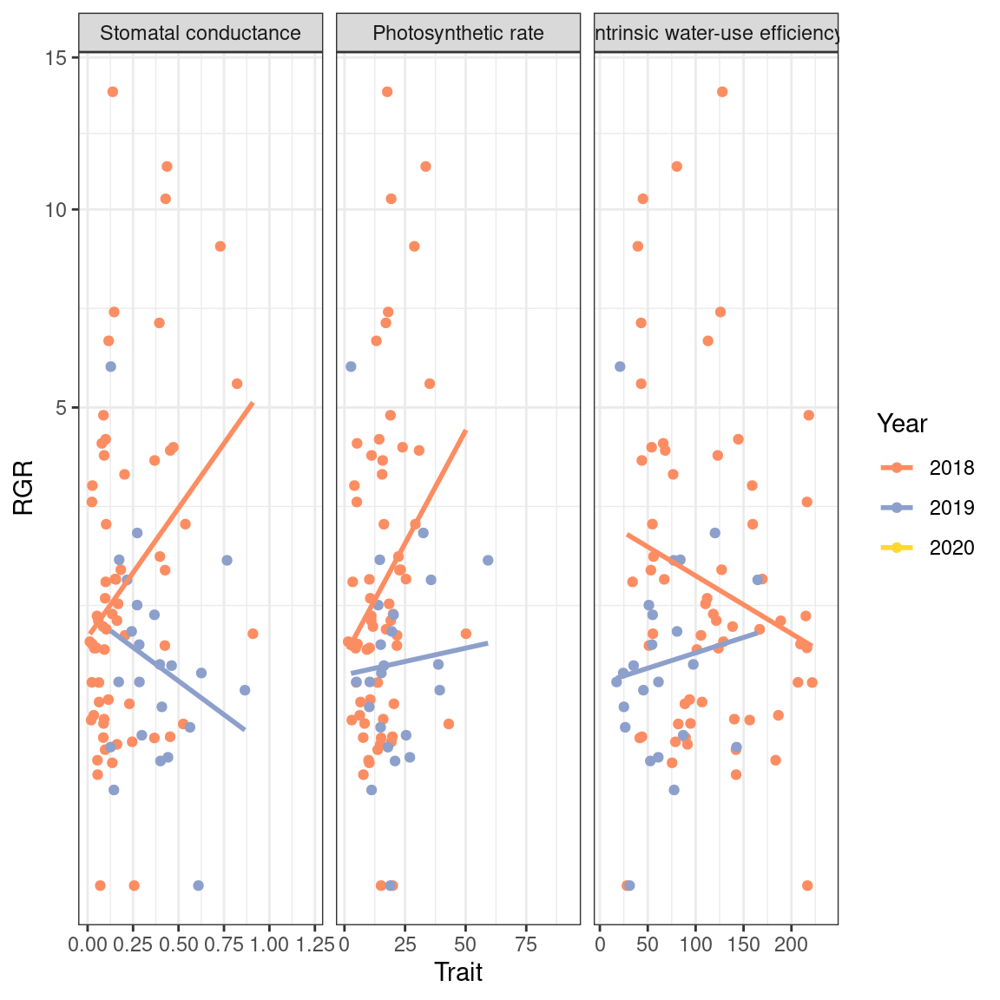
lt.plantyr.r2 <- lt.plantyr %>% filter(round=="2")
map(set_names(leaftraits),
~ lm(RGR_rel ~ trait.z,
data=lt.plantyr.r2 %>% ungroup %>% left_join(cen.RGR.long) %>% mutate(trait.z = lt.plantyr.r2[[.x]] / alltraits.sd[[.x]]) %>%
group_by(year) %>% mutate(RGR_rel = RGR/mean(RGR, na.rm=T), year=factor(year))))$sla
Call:
lm(formula = RGR_rel ~ trait.z, data = lt.plantyr.r2 %>% ungroup %>%
left_join(cen.RGR.long) %>% mutate(trait.z = lt.plantyr.r2[[.x]]/alltraits.sd[[.x]]) %>%
group_by(year) %>% mutate(RGR_rel = RGR/mean(RGR, na.rm = T),
year = factor(year)))
Coefficients:
(Intercept) trait.z
-0.786 0.619
$trichome_density
Call:
lm(formula = RGR_rel ~ trait.z, data = lt.plantyr.r2 %>% ungroup %>%
left_join(cen.RGR.long) %>% mutate(trait.z = lt.plantyr.r2[[.x]]/alltraits.sd[[.x]]) %>%
group_by(year) %>% mutate(RGR_rel = RGR/mean(RGR, na.rm = T),
year = factor(year)))
Coefficients:
(Intercept) trait.z
1.0902 -0.0651
$water_content
Call:
lm(formula = RGR_rel ~ trait.z, data = lt.plantyr.r2 %>% ungroup %>%
left_join(cen.RGR.long) %>% mutate(trait.z = lt.plantyr.r2[[.x]]/alltraits.sd[[.x]]) %>%
group_by(year) %>% mutate(RGR_rel = RGR/mean(RGR, na.rm = T),
year = factor(year)))
Coefficients:
(Intercept) trait.z
-6.408 0.882 map(set_names(phystraits),
~ lm(RGR_rel ~ trait.z * year * water,
data=pt.plantyr %>% ungroup %>% left_join(cen.RGR.long) %>% mutate(trait.z = pt.plantyr[[.x]] / alltraits.sd[[.x]]) %>%
group_by(year) %>% mutate(RGR_rel = RGR/mean(RGR, na.rm=T), year=factor(year))))$photosynthesis
Call:
lm(formula = RGR_rel ~ trait.z * year * water, data = pt.plantyr %>%
ungroup %>% left_join(cen.RGR.long) %>% mutate(trait.z = pt.plantyr[[.x]]/alltraits.sd[[.x]]) %>%
group_by(year) %>% mutate(RGR_rel = RGR/mean(RGR, na.rm = T),
year = factor(year)))
Coefficients:
(Intercept) trait.z year1
-9.28 7.89 10.21
water1 water2 trait.z:year1
10.03 5.22 -7.65
trait.z:water1 trait.z:water2 year1:water1
3.91 -4.15 -7.77
year1:water2 trait.z:year1:water1 trait.z:year1:water2
-5.89 -4.43 4.02
$conductance
Call:
lm(formula = RGR_rel ~ trait.z * year * water, data = pt.plantyr %>%
ungroup %>% left_join(cen.RGR.long) %>% mutate(trait.z = pt.plantyr[[.x]]/alltraits.sd[[.x]]) %>%
group_by(year) %>% mutate(RGR_rel = RGR/mean(RGR, na.rm = T),
year = factor(year)))
Coefficients:
(Intercept) trait.z year1
24.57 -16.42 -23.50
water1 water2 trait.z:year1
25.28 -22.72 16.72
trait.z:water1 trait.z:water2 year1:water1
-8.88 16.63 -23.16
year1:water2 trait.z:year1:water1 trait.z:year1:water2
21.98 8.30 -16.87
$WUE
Call:
lm(formula = RGR_rel ~ trait.z * year * water, data = pt.plantyr %>%
ungroup %>% left_join(cen.RGR.long) %>% mutate(trait.z = pt.plantyr[[.x]]/alltraits.sd[[.x]]) %>%
group_by(year) %>% mutate(RGR_rel = RGR/mean(RGR, na.rm = T),
year = factor(year)))
Coefficients:
(Intercept) trait.z year1
-2.305 1.975 2.908
water1 water2 trait.z:year1
1.219 18.802 -1.716
trait.z:water1 trait.z:water2 year1:water1
12.302 -18.310 0.392
year1:water2 trait.z:year1:water1 trait.z:year1:water2
-19.037 -12.192 18.060 Phenology
walk(list(ph18.raw, ph19.raw, ph20.raw),
function(ph.raw) {
y = ph.raw$year[1]
p <- ph.raw %>% count(plot, subplot, plotid, plantid, julian) %>% add_count(plantid, name="n_plantid") %>%
mutate(plantid = fct_reorder(plantid, as.integer(factor(paste(plotid, n_plantid))),.desc=T)) %>%
ggplot(aes(julian, plantid, fill=factor(n)))+
geom_tile()+ scale_fill_viridis(option="inferno", discrete=T) +
geom_point(aes(color=subplot, x=median(as.integer(julian))))+ scale_color_manual(values=sample(rainbow(10)))+
geom_point(aes(color=plot, x=median(as.integer(julian))), position=position_nudge(x=-0.3))+
theme_classic() + theme(panel.background = element_rect(fill="grey")) + guides(x=guide_axis(angle = 90)) +
labs(x="Day of year", y="Plant (sorted by subplot)", fill="Observations", color="Plot", title=paste(y,"phenology"))
print(p)})


ggplot(mnps.plantyr, aes(x=flowers_est, y=open)) + geom_point() + facet_wrap(vars(year)) + geom_smooth(method="lm")
lm(open ~ flowers_est * year, data = mnps.plantyr) %>% emtrends(~year, var="flowers_est") %>% tidy# A tibble: 3 x 6
year flowers_est.trend std.error df statistic p.value
<chr> <dbl> <dbl> <dbl> <dbl> <dbl>
1 2018 0.0343 0.00612 520 5.60 3.39e- 8
2 2019 0.0645 0.00805 520 8.01 7.73e-15
3 2020 0.0353 0.00463 520 7.62 1.21e-13ggplot(ph %>% drop_na(height_cm), aes(x=julian, y=height_cm, shape=snow, color=water))+ geom_point() + geom_path(aes(group=plantid))+
facet_wrap(vars(year), ncol=1)+
geom_vline(data=meltdates, aes(xintercept=sun_date, linetype=snow))+
labs(y="Plant height",
x="Day of year", color="Precipitation", shape="Snow") +
scale_x_continuous(breaks=seq(120,240, by=20))+
scale_color_manual(values=water_pal) + theme_minimal() +
theme(legend.key.size = unit(2, "lines"))
ph %>% group_by(year, snow, water, julian) %>% summarize_at(c("open","buds"), mean, na.rm=T) %>%
ggplot(aes(x=julian, y=open, shape=snow, linetype=snow, color=water))+ geom_point() +
facet_wrap(vars(year), ncol=1)+
geom_path(aes(group=paste(snow, water))) +
geom_vline(data=meltdates, aes(xintercept=sun_date, linetype=snow))+
labs(y="Mean total flowers",
x="Day of year", color="Precipitation", shape="Snow", linetype="Snow") +
scale_x_continuous(breaks=seq(120,240, by=20))+
scale_color_manual(values=water_pal) + scale_linetype_manual(values=c(2,1)) + theme_minimal() +
theme(legend.key.size = unit(2, "lines"))
ph %>% group_by(year, snow, water, julian) %>% summarize_at("flowering", mean, na.rm=T) %>%
ggplot(aes(x=julian, y=flowering, shape=snow, linetype=snow, color=water))+ geom_point() +
facet_wrap(vars(year), ncol=1)+
geom_path(aes(group=paste(snow, water))) +
geom_vline(data=meltdates, aes(xintercept=sun_date, linetype=snow))+
labs(y="Proportion flowering",
x="Day of year", color="Precipitation", shape="Snow", linetype="Snow") +
scale_x_continuous(breaks=seq(120,240, by=20))+
scale_y_continuous(labels = scales::percent)+
scale_color_manual(values=water_pal) + scale_linetype_manual(values=c(2,1)) + theme_minimal() +
theme(legend.key.size = unit(2, "lines"))
ph %>% group_by(year, snow, water, julian) %>% summarize_at("eggs", mean, na.rm=T) %>%
ggplot(aes(x=julian, y=eggs, shape=snow, linetype=snow, color=water))+ geom_point() +
facet_wrap(vars(year), ncol=1)+
geom_path(aes(group=paste(snow, water))) +
geom_vline(data=meltdates, aes(xintercept=sun_date, linetype=snow))+
labs(y="Mean total eggs",
x="Day of year", color="Precipitation", shape="Snow", linetype="Snow") +
scale_x_continuous(breaks=seq(120,240, by=20))+
scale_color_manual(values=water_pal) + scale_linetype_manual(values=c(2,1)) + theme_minimal() +
theme(legend.key.size = unit(2, "lines"))
ph %>% group_by(year, snow, water, julian) %>% summarize_at("has_egg", mean, na.rm=T) %>%
ggplot(aes(x=julian, y=has_egg, shape=snow, linetype=snow, color=water))+ geom_point() +
facet_wrap(vars(year), ncol=1)+
geom_path(aes(group=paste(snow, water))) +
geom_vline(data=meltdates, aes(xintercept=sun_date, linetype=snow))+
labs(y="Proportion of plants with eggs",
x="Day of year", color="Precipitation", shape="Snow", linetype="Snow") +
scale_x_continuous(breaks=seq(120,240, by=20))+
scale_y_continuous(labels = scales::percent)+
scale_color_manual(values=water_pal) + scale_linetype_manual(values=c(2,1)) + theme_minimal() +
theme(legend.key.size = unit(2, "lines"))
Floral display size
2020
ggplot(ph.plantid, aes(x=height_cm, y=open, color=water)) + geom_point() + geom_smooth(method="lm", se=F) + scale_color_manual(values=water_pal) + facet_wrap(vars(year), nrow=1) +
labs(x="Mean inflorescence height (cm)", y="Mean number of open flowers", color="Precipitation")
ggplot(ph.plantid, aes(x=water, color=snow, y = height_cm)) +
labs(x="Precipitation", y="Mean inflorescence height (cm)", color="Snowmelt") +
geom_boxplot() + scale_color_manual(values=snow_pal) + facet_wrap(vars(year), nrow=1)
ggplot(ph.plantid, aes(x=VWC, y=height_cm, color=year)) + geom_point() + geom_smooth(se=F) +
scale_color_manual(values=year_pal) + labs(x="Mean VWC", y="Mean inflorescence height (cm)") 
ggplot(ph.plantid, aes(x=water, color=snow, y = open)) +
labs(x="Precipitation", y="Mean number of open flowers", color="Snowmelt") +
geom_boxplot() + scale_color_manual(values=snow_pal) + facet_wrap(vars(year), nrow=1)
ggplot(ph.plantid, aes(x=VWC, y=open, color=year)) + geom_point() + geom_smooth(se=F)+
scale_color_manual(values=year_pal) + labs(x="Mean VWC", y="Mean number of open flowers")
Seeds
ggplot(sds %>% drop_na(plot), aes(color=water, x=fruits, y=seeds)) + geom_point() + geom_smooth(se=F) +
scale_color_manual(values=water_pal) + facet_wrap(vars(year), nrow=1) + theme_minimal() +
labs(x="Counted fruits", y="Counted seeds", color="Precipitation")
for(tr in seedtraits) {
print(ggplot(sds %>% drop_na(plot), aes_string(tr, x="water", color="snow")) + geom_boxplot() +
scale_color_manual(values=snow_pal) + facet_wrap(vars(year), nrow=1) +
scale_y_continuous(trans=ifelse(tr %in% c("seeds_est", "fruits_nonaborted"),"sqrt","identity"))+
labs(x="Precipitation", y=traitnames[[tr]], color="Precipitation") +
guides(x=guide_axis(angle = 90)))
print(ggplot(sds, aes_string(tr, x="VWC", color="year")) + geom_point() + geom_smooth(se=F) +
scale_color_manual(values=year_pal) +
scale_y_continuous(trans=ifelse(tr %in% c("seeds_est", "fruits_nonaborted"),"sqrt","identity"))+
labs(x="Summer mean of soil moisture in subplot (VWC)", y=traitnames[[tr]], color="Year"))
}


Fruiting phenology (2020)
ggplot(sds20.date.zeroed, aes(x=julian, y=fruits_nonaborted, color=water, shape=snow, linetype=snow))+geom_jitter(width=2, height=0) + stat_summary(fun="mean", geom="line") + scale_y_sqrt() + scale_color_manual(values=water_pal)+
labs(y="Nonaborted fruits", x="Day of year", color="Precipitation", shape="Snow", linetype="Snow")+ scale_linetype_manual(values=c(2,1)) + theme_minimal() +
theme(legend.key.size = unit(2, "lines"))
ggplot(sds20.date.zeroed, aes(x=julian, y=seeds, color=water, shape=snow, linetype=snow))+geom_jitter(width=2, height=0) + stat_summary(fun="mean", geom="line") + scale_y_sqrt() + scale_color_manual(values=water_pal)+
labs(y="Seeds", x="Day of year", color="Precipitation", shape="Snow", linetype="Snow")+ scale_linetype_manual(values=c(2,1)) + theme_minimal() +
theme(legend.key.size = unit(2, "lines"))
ggplot(sds20.date.zeroed, aes(x=julian, y=prop_infested, color=water, shape=snow, linetype=snow))+geom_jitter(width=2, height=0) + stat_summary(fun="mean", geom="line") + scale_color_manual(values=water_pal)+
labs(y="Proportion of nonaborted fruits infested", x="Day of year", color="Precipitation", shape="Snow", linetype="Snow")+ scale_linetype_manual(values=c(2,1)) +
scale_y_continuous(labels = scales::percent)+ theme_minimal() +
theme(legend.key.size = unit(2, "lines"))
sds20.date.zeroed %>% group_by(snow, water, julian) %>% summarize_at("fruiting", mean, na.rm=T) %>%
ggplot(aes(x=julian, y=fruiting, shape=snow, linetype=snow, color=water))+ geom_point() +
geom_path(aes(group=paste(snow, water))) +
labs(y="Proportion fruiting (nonaborted fruits)",
x="Day of year", color="Precipitation", shape="Snow", linetype="Snow") +
scale_y_continuous(labels = scales::percent)+
scale_color_manual(values=water_pal) + scale_linetype_manual(values=c(2,1)) + theme_minimal() +
theme(legend.key.size = unit(2, "lines"))